| 魔獣戦士ルナ・ヴァルガー＜４＞激闘 | |
| 秋津 透 | |
| (2014) | |
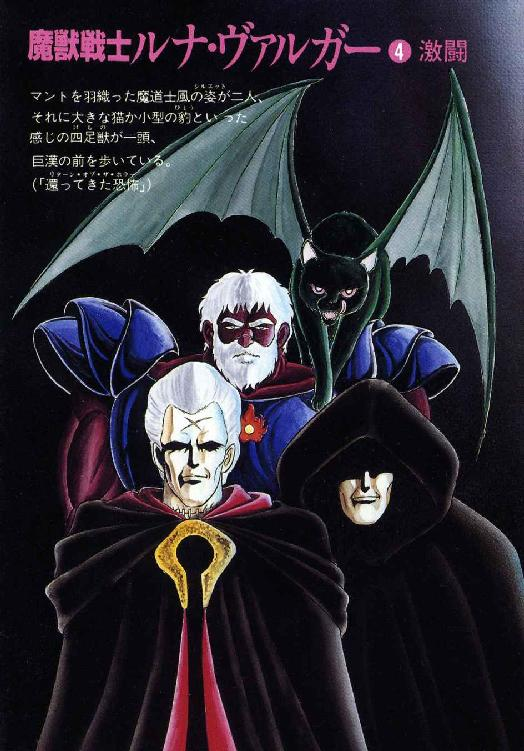
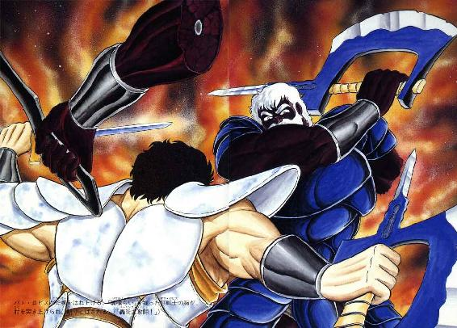
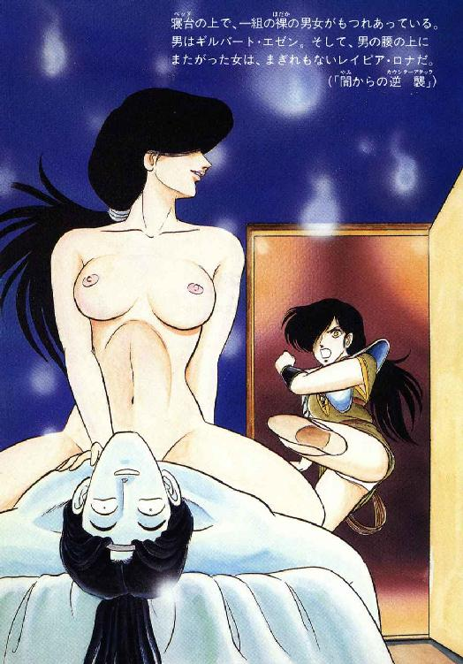
魔獣戦士ルナ・ヴァルガー
④激闘
秋津 透
本作品の全部または一部を無断で複製、転載、配信、送信したり、ホームページ上に転載することを禁止します。また、本作品の内容を無断で改変、改ざん等を行うことも禁止します。
本作品購入時にご承諾いただいた規約により、有償・無償にかかわらず本作品を第三者に譲渡することはできません。
本作品を示すサムネイルなどのイメージ画像は、再ダウンロード時に予告なく変更される場合があります。
本作品は縦書きでレイアウトされています。
また、ご覧になるリーディングシステムにより、表示の差が認められることがあります。
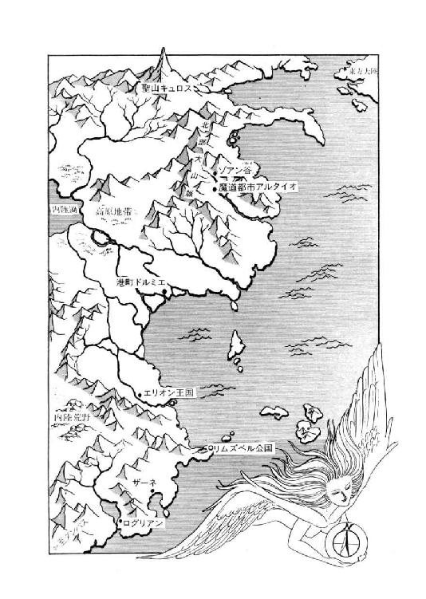
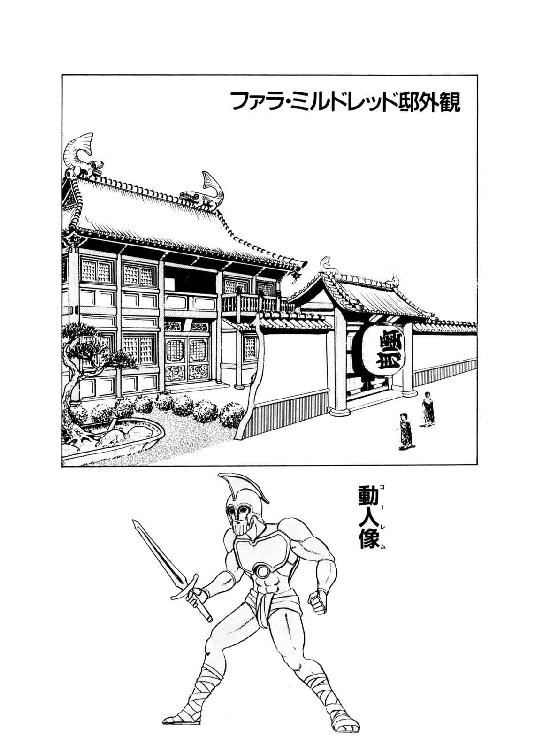
目 次
口絵・本文イラスト あろひろし
登場人物
ルナ・ド・リムズベル リムズベル公国の第二公女。魔獣と合体中。
魔獣ヴァルガー 伝説の大魔獣。無敵の威力を誇る。
ロ コ 有翼黒猫。ルナの使い魔。
リル（リム・リリス） プロの色事師娘。実は獣人（縞兎）。
バト・ロビス ダンバス帝国の元部隊長。獣人族に大将と仰がれている。
ミル・ユード 貿易商兼帝国青年貴族。バト・ロビスの甥。
レイピア・ロナ ミル・ユードに忠誠を誓う女戦士。
ファラ・ミルドレッド 魔道都市の最高評議長を務める、美貌の死霊術師。
ギルバート・エゼン 黄金飛行竜を召喚する魔道士。どっか一本ぬけている。
リア・ファルル 獣人族の豹娘。死霊術師の素質を持つ魔道士候補生。
ルネ・ニグス 獣人族出身の魔道士候補生。つまらなそうな顔が特徴。
グレゴール・クライシス 獣獣を狙う狂的死霊術師。倫理観念がない。
チャフ グレゴールの使い魔の黒蝙蝠猫。口が悪いが性格も悪い。
その姿は妖麗なる美女
その姿は怖ろしき毒蛇
その力は死を生命と換え
その力は生命を死に送る
その血は炎の如く熱く
その血は氷の如く凍てつく
その名は白き巫女ヒュレーネ
その名は白き死の魔獣
――ヴェルフレイ神殿の讃歌 第一節
（資料提供 ルネ・ニグス）
第一章 還ってきた恐怖
１
「ひどい天気だな、まったく」
魔道都市アルタイオの大門に詰める入都市審査官、ミカエル・ヘリオドルスは眉を寄せて天を仰いだ。朝から降り続いている轟雨はまったく弱まる気配もなく、時おり稲妻が光ったかと思うと凄まじい雷鳴が耳をつんざく。
「......こんな日に当番とはついてないや。まあ、訪問者も来ないから暇は暇だが......おやっ？」
魔道士は轟雨越しに、門外へ目をこらした。大門に続く坂道を数人の人影が登ってくる。その中の一人が異様なまでに筋骨逞しいのに気付き、彼は苦笑をうかべた。
「蛮族戦士のおっさんか。評議長に呼ばれたんだな」
そういや、あの巨漢が最初に大門で大暴れしてから、まだ三十日も過ぎてないんだよな、とヘリオドルスはふと思った。この短期間のうちに、魔道都市におけるバト・ロビスの立場は不法乱入者から評議長の賓客にまで上昇している。
「もっとも本人自身は、あいも変わらず傍若無人だから......」
ゆっくりと近づいてくる巨漢の姿を見やって、魔道士は苦笑まじりに呟いた。規定の入都市手続を済ませるだけで一苦労、余計な手間なんてとらせよーもんなら咆哮あげて斧剣をぶん回しだしかねない。今日は従者付きのようだから、よほど手際良く事務を運ばないと......
「おやっ？」
門前にやって来た一行を見やって、ヘリオドルスはけげんそうに眉を寄せた。今まで巨漢だけに気を取られていたが、同行している人物は獣人谷の連中じゃない。マントを羽織った魔道士風の姿が二人、それに大きな猫か小型の豹といった感じの四足獣が一頭、巨漢の前を歩いている。確か蛮人戦士は、従者が自分の前に立つのを嫌っていたような憶えがあるが、とヘリオドルスは小首をかしげた。
彼が不審がっているうちに、魔道士姿の二人と大猫が窓口の方へ進んできた。巨漢は門の前に突っ立っている。どうも妙だな、と思いながらも、入都市審査官はやって来た連中に声をかけた。
「入都市手続はこちらです。書類をお出し下さい」
「変わらぬな、魔道都市は」
魔道士姿の二人のうち、見事な銀髪の男がぼつりと呟く。もう一人は目深くフードをかぶっており、男か女かもわからない。ただ、二人ともぞくりとするような雰囲気を全身にまとわりつかせている。こいつら、死霊じゃなかろうな、と魔道士はもう一度瞳をこらした。と、銀髪の男がはじめて彼に目を向ける。
「入都市審査官。私の顔に見覚えはないか」
「は？」
ヘリオドルスはわずかに上体を窓口に乗り出し、銀髪の男の顔を見詰める。鋭い眼光、こけた頰、額には刀傷だろうか、Ｘ字型の大きな傷痕がある。きわめて印象的な、あえて言えば危険な感じの容貌だ、と彼は思った。かなりの壮齢とも見えるが、皮膚には奇妙に艶と張りがあり、年齢の見当はまったくつかない。
「......失礼ですが、覚えがありません」
「そうだろう。当然だ。私が最後にこの門をくぐってから、すでに百年が過ぎている」
ほとんど感情のない声で、銀髪の男が呟いた。入都市審査官は、思わずぐっと身を乗り出す。
「百年!?」
するとあなたは死霊術師、と言いかかった瞬間、今まで微動だにせず沈黙を守っていたもう一人が、魔道士の喉元にすっと手を伸ばした。その指先が触れると同時に、彼の全身を怖ろしいほどの冷気が貫く。魔力の呪文を唱えるどころか悲鳴をあげる暇もないまま、例によって不運な被害者は昏倒した。見る見るうちにその肉体が、蠟のように白く変わる。
「きゃーははははははははっ、馬鹿っ！ 馬鹿っ！ 馬鹿っ！ ざ・ま・を・みっ！」
けたたましい嘲笑をあげながら、大猫が窓口の上に跳びあがった。その体は闇のように黒く、背には翼が畳み込まれている。一見烏猫とも見えるが、翼が羽毛状ではなく皮膜状の、黒蝙蝠猫だ。血のように紅い瞳をぎらぎらと光らせ、澄んではいるがどこか耳障りな高音女声で、悪意の凝固物のような嘲笑を吐きつける。
「白蠟屍じゃつまんない。とどめを刺そう、とどめっ！ 首をもごうか、頭を割ろうかっ。それとも縦に割いてやろうかっ！ きゃーはははははははっ、楽しみねっ！」
「チャフよ」
銀髪の男が、笑いまくっている蝙蝠猫に声をかけた。ぼそり、といった感じのさほど大きくもない声だったが、蝙蝠猫の哄笑がぴたっと止まる。
「グレゴール様......」
「つまらぬ事に消費してよいほど、時間が余っておるわけではないぞ」
銀髪の男はかすれ気味の小声で、しかし有無を言わせぬ威圧感を込めて、蝙蝠猫に命じた。
「急いで大門を開け。できるな」
「は、はいっ！」
うって変わって神妙な声で答えるが早いか、蝙蝠猫は窓口の内側へ、くるっと体を回転させながら跳びこんだ。着地した時には、もはやその姿は猫ではない。浅黒い肌に尖った耳を持つ、小柄で野性的な美少女に変身している。真紅の瞳と腰から伸びたしなやかな尾だけが、蝙蝠猫のなごりだろう。胸と腰をわずかに覆っただけの、なかなか刺激的な姿をしている。
「えーと、機構は昔と同じみたいね......」
呟きながら、猫少女は素早く魔道士の長衣から鍵を取り出し、窓口の奥の機械に差し込む。そして少しの間がちゃがちゃやった後、短い呪文を唱える。即座に重い震動が起こり、魔道都市の大門はゆっくりと、侵入者たちに道を開きはじめた。
「よし、行くぞ」
グレゴールは軽くうなずき、門前に残っていた巨漢の方へ歩きだす。フード姿の人物が影のように静かに彼に従い、猫少女もすぐに窓口を跳び越えてその後に続く。
「それで、グレゴール様、魔道都市では、まず何から手をつけましょう？」
門を抜け、中央通りに出たところで猫少女が訊ねた。
「予定通り、目的の女を捜しますか？」
「いや、やはり気が変わった」
轟雨にけぶる街路をゆっくりと見回しながら、グレゴールは陰気そのものの表情と声で呟く。
「百年ぶりに魔道都市に戻ってきたのだ。これは、あの時の誓いを果たさねばなるまい」
ぎらり、とグレゴールの目が妖しく輝いた。が、声の調子はほとんど変わらない。地の底から響くような声で、ぼそっと呟く。
「即ち、私を殺した者への復讐だ。まず、これから始めねばな」
「そうおっしゃると思ってました」
猫少女がにやりと笑い、軽く頭を下げた。
２
「あううん......あふ、ああん......ああ......」
リムズベル公女ルナは紺色の瞳をとろんと潤ませ、甘やかなあえぎ声をあげていた。頰は桜色に上気し、再生途中の短い尻尾がぴょこぴょこぴょこんと激しく動く。
「ああん......ファラさあん、あたし、もーたまんないよおー......」
「だめだめ、もっと力をそらせて。押さえこもうとしないで、制御するの。そう呼吸を整えて」
奇妙に生真面目な口調で、ファラ・ミルドレッドはルナの耳元に囁きかける。
「熱を逃がしてやるのよ。体内に籠らせちゃだめ。ゆっくり、ゆっくり......」
「あう......ふ、あ、はあ......はあ......あはあ......ああん......でも、もう......はあ......だめえ......だめよお......だめえ......あっ、ああっ、も、もうっ、もうだめっ、だめっ！」
ルナのあえぎが切迫してくるのに応じて、ファラが彼女に装着させている守護冠が、ぎりぎりぎりっと音をたてて作動状態に入ってゆく。自己制御が効かなくなったようね、と女魔道士は小さく肩をすくめた。
「ここまでのようね。おちびちゃん、公女をいかせてあげて」
「ん」
正面からもたれかかるような姿勢でルナに微妙な愛撫を行なっていたリルが、一気に技巧の水準を上げる。たちまち快感の波に巻きこまれ、ルナは頰を真紅にして大きくのけぞった。
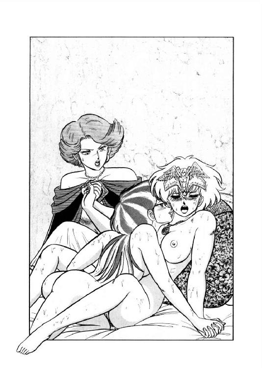
「あああっ！ すごいっ、すごいっ！ だめっ、あたしっ、だめっ、だめっ！ いっ、いっちゃうーっ！」
絶頂の叫びと同時に、守護冠からぎりぎりっと伸びあがった女人像が、シャラランと涼しげな音をたてて一気に翼を開く。そして次の瞬間、守護冠を中心に、ルナの体から鮮紅の光輝が放たれた。たちまち寝室全体が紅い光で満たされ、その光を浴びたリルが縞兎の姿に変身してしまう。ファラは軽く眉を寄せ、もう一度肩をすくめる。
「この程度でいっちゃうようじゃ、まだまだねえ......。もうしばらくは、魔道都市で修業してもらう必要がありそうね」
対魔獣守護冠でおさえてあるからいいようなものの、と女魔道士は呟いた。そうでなければ今の絶頂で、この娘は魔獣態に変身していたはずだ。そして一度魔獣変身が行なわれたら最後、周囲の建造物が物理的に吹っ飛ぶのみならず、ほかの魔獣の封印結界を解いてしまう危険性がある。よほどの至近距離でなければ大丈夫、という推論もあるが、確実なことは何もわかっていない。
「そんな状態でこの娘を魔道都市から出して、万が一にも世界中が魔獣だらけになっちゃったら、それこそ取り返しがつかないものね。もうちょっと、どんな状況下でも魔獣を制御できるよう、頑張ってもらわなくちゃ」
御苦労様だけどね、とファラは軽く苦笑した。紅い光がゆっくりと薄れ、守護冠の女人像が静かに引っ込む。ルナは目を閉じたまま、大きく溜息をついた。
「ふーっ、きいたあっ......」
「うふっ、もー一回続けてやる？」
人間の姿に戻ったリルが、ひょいと顔をあげてにやっと笑う。だが、当人より先に女魔道士が首を振った。
「今日はここまでにしておきましょう。公女殿下もそろそろ限界みたいだし」
「あたしなら、大丈夫です」
きっぱりとした口調で言いながら、ルナは素早く振りかえる。何しろ、この修業を達成しないことには魔道都市から出られない。彼女本人はとにかく、貿易商のミル・ユードが彼女につき合って都市に留まっている。もたもたしてたら彼に迷惑かけちゃう、とルナは最近多少気に病んでいる。
だが、ファラは彼女の顔を見て微笑むと、もう一度小さく首を振った。
「体力の問題じゃないのよ。とにかく、今日はこれ以上やっても意味がないわ。私もこれから、いくつか公務しなくちゃならないし」
「はい。わかりました」
何と言ってもファラさんは魔道都市の最高評議長、やらなきゃならない公務は山ほどある。ルナの修業に長々つき合ってられる立場じゃない。彼女は後頭部に手をまわして、借り物の守護冠をはずした。そのとたん、頭の中で声がする。
「感覚機能停止状態解除。活力水準ヤヤ低下ダガ活動ハ可能。頭脳体、変身ヲ解クカ？」
「解かない、解かない。当分は人間態のままだって言ってあるでしょ」
苦笑をまじえ、ルナは自分の体内に押し込められている伝説魔獣に声をかけた。確かに最近、魔獣変身どころか守護冠を使って機能停止をかけてばかりいる。そろそろ焦れだしても不思議じゃないわよね、と彼女は小さく呟いた。とはいえ、よほどの情況でない限り魔獣変身は絶対厳禁、とファラさんからきつーく釘を刺されている。大きな声じゃ言えないけど、手頃な規模の騒動でも起きてくれないかな。そうすれば魔獣戦士も、一暴れしてストレス発散できるんだけど。
いささか無責任な事を考えながら、ルナは守護冠を女魔道士に渡し、寝台から降りた。と、誰かが寝室の扉をとんとんと叩く。
「ファルル？ 入っていいわよ」
「にゃー、にゃー、みにゃー」
猫としか思えない声とともに、短衣姿の小柄な少女が入ってきた。金髪に黒い細縞の入った髪に紺碧の瞳、とてもそうとは見えないが獣人族四天王の一人、リア・ファルルである。だが、いつもにこにこ楽しそうな彼女の表情が少し緊張気味なのに、ルナは気がついた。
「どうしたの、猫ちゃん？ 何かあったの？」
素早く長衣を着こんだ女魔道士が訊ねる。ファルルは、身振り手振りをまじえて説明をはじめた。
「みー、みー、みにゃ、みにゃ、にゃおお、おにゃ、にゃーむ、にゃむにゃん、みにゃー、にゃおおう、にゃん！」
「そう。とにかく、すぐ行くわ」
ファラは大真面目な表情でうなずく。少女も小さくうなずき返し、たっと寝室を出て廊下に消える。
「公女、それにおちびちゃんもいっしょに来てくれる？ 何か異様な物が来たみたい」
「異様な物？」
急いで短衣を着こみながら、ルナは小さく首をかしげた。
「いったい、何です？」
「さあね。彼女の説明じゃそれ以上はわからないわよ」
軽く肩をすくめ、ファラは足早に寝室を出る。ルナがその背後に続き、二、三歩おくれてりルがとことこと従って行く。
「蛮人さんが来ることにはなってるけど、他の連中ならとにかく、獣人族が大将見て慌てるはずないし......」
もうちょっと彼女の言葉が理解し易ければいいんだけどね、とファラは小さく呟いた。
獣人族からもぜひ魔道士を出したい、という巫女の希望を受けて、現在魔道都市には素質を認められた五人の獣人が魔道の修業に来ている。獣人族四天王の一人、木登振子豹娘リア・ファルルも魔道修業者に選ばれたのだが、何と彼女は滅多に出現しない死霊術師の素質の持ち主だった。何しろ、今魔道都市で最も若い死霊術師が百十七歳のファラさんなのだから、これはもう大変な存在なのである。
そういう経過でファルルは、導師と仰ぐファラ・ミルドレッドの邸宅に住み込んで、魔道修業に励みはじめた。ところが何しろ彼女の言語は例の〝にゃんことば〟なので、さしものファラさんも意志の疎通に多少苦労しているのである。
玄関ホールへ出てみると、ファルルがフードを深くかぶった人物の前に、通行止するように立っていた。彼女は全身に殺気をみなぎらせ、猫目を吊りあげ、髪を逆立てて唸っている。しかし相手はひっそりと立っているだけで、ほとんど気配も感じさせない。その姿を見て、ファラは軽く眉を寄せて呟いた。
「魔奴屍人......？」
同時にファラはすっと前に出て、牙をむいて唸っている弟子を後退させる。魔力によって動く屍体、魔奴屍人は一般人にとっては恐怖と嫌悪の対象だが、死霊術師から見れば使い馴れた道具のようなもの、怖れる必要はまったくない。
だけど問題は、魔奴屍人を誰が何の目的で私の邸に送ったかよね、とファラは目の前の相手を見すえて呟いた。死霊術師たちは魔奴屍人を精力補給タンクとして重宝しているが、使者等、他の用途に使うことはまず考えない。何しろ実体があるから目立つし、屍体だから動きは鈍いし、単純な命令しか遂行できない上に、一般人の目に触れたら嫌われること間違いなしの存在だ。死霊や亡霊の方が、はるかに使いやすい。
「それを、どうして......あえて？」
呟きながら、ファラはもう一歩、魔奴屍人の方へと進んだ。と、相手の右手がすいっと上がる。ファラの背後に控えるルナとファルルが、目に見えるほどびりっと緊張したが、本人は平静そのものの表情で、魔奴屍人の差し出した書面を受け取った。
「ファラさん、それは？」
「......シュターデン評議員からだわ。評議会の前に、相談したい事があるって」
「なあだ、こいつ、ただの使者？」
ルナの背後で、リルがあきれたよーな、拍子抜けしたよーな、ほっとしたよーな声を出す。
「ったく、猫っ子は騒ぐし、魔奴屍人は気味悪いし、こりゃ一騒ぎあのかなと思ったけど、とーだ空騒ぎだったわけかあ」
「そうね......とにかく評議員の邸へ行ってみるわ」
それにしても、どうして魔奴屍人を使者に、と女魔道士は首をかしげて呟いた。老死霊術師ロイ・シュターデンは、当年二百三十五歳、最近いささか言動に老人性痴呆の気配がある。死霊を召喚するのが面倒になって、造りおきの魔奴屍人を使者に出したのかも知れない。
と、フードをかぶった魔奴屍人が、くるりと一同に背を向けた。そのまま静かに玄関の扉を押し、屋外に出る。ファラは足早にその後を追う。
「日没の鐘までには戻るわ。蛮人と従者が来るけど・烏猫君を迎えに出してあるから問題はないはずよ。待たせといて......あらっ？」
玄関を出たとたん激しい雨を頭に浴び、ファラは軽く眉を寄せた。魔獣戦士がぶち破った都市全体を覆う障壁はまだ復旧されておらず、現在、外界が雨なら都市内でも雨になる。女魔道士は一瞬うっとーしげに空を仰いだが、すぐに使者の後について歩きだした。シュターデン邸は、ミルドレッド邸からそれほど遠くない。
３
「ぐるる......」
木登振子豹娘が、紺碧の瞳をじっとすえ、低い唸り声をあげる。
「ぐるる......ふーっ......ぐるるるる......」
「落ちつかないわねー、この猫っ子は」
リルが軽い口調で言うと、ファルルの頭をぽんと叩いた。が豹娘が日頃の笑顔とはうって変わった真剣な表情できっとにらみすえたので、一瞬ぎくっとして跳びさがる。
「あ、あによっ、あによっその目はっ」
「やめなさいっ」
ルナが、大きくはないが鋭い声で二人を制した。
「まだ何も起きたわけじゃないんだから。静かにしてらっしゃい」
「そーそー、だいたいあた、いつもは無神経すぎるぐらいのくせして、今日ばっかしはいやに神経質じゃない。あ、もしかすっとあの日かな？」
「あんたも無用に挑発するんじゃないのっ！」
ルナに横目でじろっと睨まれ、兎娘はちろっと舌を出して首をすくめる。
しかし、リルの言う通り、あの使者が来てから豹娘が妙に苛立っているのは確かだ、とルナは内心呟いた。そして彼女だけじゃない。魔獣戦士も先刻から胸騒ぎがして仕方がない。これはどうも、何か事件が起きたんじゃなかろうか。
と、その時、玄関呼び鈴用の叫霊がギャア――ッと鳴いた。半ば反射的にルナとファルルが立って玄関に走り、リルがひょいと肩をすくめて二人に続く。
「どなたっ？」
「ロコです！ 大至急ファラさんにお知らせしなくちゃならない事件があります！」
言うが早いか、勢いよく扉を引いて猫少年が走り込んできた。彼のすぐ背後から無謀戦士が山羆男を従え、むっつりとした表情で入ってくる。
「どうしたの？」
「あの、実は大門で手続きをしようと思って受付に行ったら、入都市審査官が殺られてて、大門が開けっ放しになってるんです。これは只事じゃないということで、とにかくファラさんに通報しなくちゃと思いまして」
猫少年は多少混乱気味に、早口でまくしたてた。ルナの表情が、きゅっと険しくなる。
「あたしがファラさんに知らせに行くわ。ロコは、治安局担当評議員さん邸へ行って、今の事件を知らせて。ファルル、シュターデン評議員の邸宅って、どこだか知ってる？」
「みゃう！」
鋭く叫んで、豹娘はうなずいた。多少言葉が不鮮明でも、これは間違いようがない。と、そこへもう一つ、間違いようのない意志表示が続いた。
「俺も行くぞ、小娘」
「おっさん!?」
ルナが露骨に困惑の表情になるが、無謀戦士は彼女に目もくれず轟然と言葉を継ぐ。
「ガーグはここで待て。太陽が没しても俺たちが戻らなければ、カルバドク卿に使いを出し、助けを求めよ。ではファルル、案内せえいっ！」
「にゃにゃおんっ！」
豹娘はぴょーんっと身体を伸ばして一声叫ぶや、そのままたたたたたたたっと玄関から走り出した。即座にバト・ロビスが彼女の後に続く。一瞬あっけにとられたルナも、すぐに彼らを追ってミルドレッド邸から飛び出す。
「ちょっと、ちょっと、中年さんっ！ あたしはただファラさんを呼びに行くだけで、別にあんたが来なくったって......」
「それなら、ファルル一人で十分だろう」
追いついてきたルナを見もせず、巨漢はどかどかと走りながら言い捨てた。
「俺を誤魔化せるとでも思っとんのか。貴様、どこからどう見ても、強襲をかけに行く表情だぞ」
「そ......そうかしら......」
あたしそこまで殺気立った表情してたのかな、とルナは小さく首をすくめる。
「でも、本当に、はっきり異変が起こったってわけじゃないのよ、こっちは。それより、入都市審査官が斃されたって方が、問題だと思うけど」
「それは魔道都市の連中の問題だ。とりあえず、俺には関係がない」
バト・ロビスはむすっとした表情のまま、唸るような声で言った。降りしきる雨の中、豹娘はほとんど四つん這いになって疾走し、巨漢と女戦士が水しぶきをあげて彼女の後方を突っ走る。
「だが、ファラ・ミルドレッドに何かあったとなれば、これは黙ってはおれん。彼女は、俺の情人だからな」
「へいへい」
よーく存じておりますわよ、とルナは苦笑まじりに呟いた。と、二人の前を疾走していたファルルが、一軒の邸宅の門の前でぴたっと停まる。
「みにゃっ！ にゃにゃにゃにゃ、にゃぎゃあっ！」
全身の体毛を逆立てて叫んだかと思うと、少女はばりばりと短衣を裂き、木登振子豹の姿に変身した。ルナの魔獣感覚も、一瞬本人が眩惑を覚えたほど、一斉に、高水準で働きはじめる。この邸宅の中にいる何かの気配が、否応なしに彼女たちに戦闘体制をとらせたようだ。超聴力を備えたルナの耳に、ぞっとするほど感情のない男の声が流れ込んでくる。
「......信じまいと、貴女の自由。だが、私はこうして存在する。無力な死霊でも、魔奴屍人でもない」
「......そうらしいわね............」
ファラの声に、生気がまったく感じられないのに気付き、ルナの顔から血の気がひいた。
「こりゃやばいっ......おっさん、ファルル、突入するよっ」
「おうっ」
「ミーッ！」
言うより早く、豹が門に体当たりをかけた。閂はかかっておらず、門はあっさりと開く。だだだだだっと前庭に走り込み、玄関にとびこむ。しかし、玄関ホールには人の気配がない。
「どこ？」
ルナは鋭い表情で耳を澄ませた。甲高い女の声がとびこんでくる。
「グレゴール様、早いとここいつら、首とばしちゃいましょーよー。どーせ殺す奴らなんでしょ？ 死霊術師だもん、きっと立派な闇魂ができるんじゃないかなっ！ きゃーはははははは、きゃーはははっ！」
「静まれ」
先刻の凍りつくような声が、ぼそっと言った。甲高い声が、一瞬のうちに沈黙する。
「他の死霊術師はとにかく、ファラ・ミルドレッド、貴女には別に怨みはない。返答次第では闇魂を授けてやってもよいのだ。むろん、拒むも自由。その時は、死ぬだけだ」
「......あなた、いったい何しに魔道都市に戻って来たのよっ......」
語気こそ鋭いが、ファラの声はますます生気を失い、か細くなっている。こりゃいよいよやばいっ、とルナは必死で耳を澄まし、位置を探る。どうも地下のようだが......。
「復讐にしては、ずいぶん間をとったじゃない。わざわざ百年ぶりに、魔道都市に舞い戻ったのは、何のためよっ......」
「珍らしい存在が出現した、と聞いたものでな。何でも、今、魔道都市には伝説魔獣と合体している女がいる、という話ではないか」
いきなり自分が話題に登場したので、さしものルナも一瞬ぎくりとした。しかし、今はとにかくファラさんを救助する事が先決である。彼女は神経を聴覚に集中させたまま、玄関ホールから廊下のひとつへと歩を進め、そしてぴたりと立ち止まって叫んだ。
「おっさん、ファラさんはこの真下よっ！」
「おうっ！」
叫ぶと同時にルナは素早く位置を変え、間髪を入れず無謀戦士の斧剣が凄まじい勢いで床に叩きつけられる。木が割れ石が砕け、地震としか思えない振動がシュターデン邸を揺さぶった。
４
「きゃあっ！ 何っ、何っ、何事っ!?」
轟音とともに激しい震動が地下室をゆるがし、猫少女が大仰に騒ぎたてる。
「やだっ、何っ、地震っ!? きゃあっ、冗談じゃない、生き埋めになっちゃうっ！ グレゴール様っ、お助け下さいーっ！」
「静まらんか」
冷静、というより、ほとんど冷酷な一声で使い魔を黙らせると、グレゴールは氷のような目を上方に向けた。発光板になっている天井の一隅に、大きな亀裂が入っている。と、そこへもう一発、轟音とともに震動が走り、天井の一部ががらりと崩れた。
「階上から来るぞ」
グレゴールが言い終わらないうちに、天井をぶち破って巨大な影がとび降りる。落下の勢いを込めた斧剣が目標めがけ叩きこまれるその寸前、横あいから躍り出た黒い影が、無謀戦士の猛撃をまともに受け止めた。鋼鉄と鋼鉄が激しく嚙みあい、紫色の火花を散らす。
「むむっ......」
低く唸って、バト・ロビスは斧剣を手元に戻して構えを整える。続いてとび降りたルナが、思わず目を丸くして叫ぶ。
「お、おっさんが、二人っ!?」
バト・ロビスと正面から睨み合っている巨漢は、体格といい、容貌といい、構えている巨大な斧剣といい、まさに鏡に映したようによく似ている。細かく見れば、相手の鎧は漆黒、肌も黒く髪と鬚が対照的に白い。見間違うような容姿ではないのだが、何よりもその巨体から放射する凄まじい圧迫感が、ほとんど同質なのだ。
「うおおおおおっ！」
「ウオオオオオッ！」
同時に、同じ咆哮をあげ、二人の戦士はぶぶんと斧剣を振り回す。再びガキイッと耳にこたえる衝突音があがり、鋼鉄の細片が火花とともに散る。完全な互角だ。
ルナは素早く側方に回る。黒戦士に横撃をくらわせようとしたのだが、その目の前に浅黒い肌の少女がとびだした。
「お前の相手は、あたしだよっ！ きゃーはははははははっ！」
甲高い嘲笑をあびせながら、少女はルナに跳びかかる。その手に武器がないのを見たルナの、剣の動きがわずかに遅れた。だが次の瞬間、少女は凶暴な蝙蝠猫に姿を変え、鋭い爪を相手の顔面へと繰り出す。かろうじて頭をそらし長剣で払ったが、頰に浅く傷をつけられた。
「きゃーははははっ、ぼけっ、のろまっ、動きが鈍い鈍い鈍い鈍いっ！ きゃはははははは......あわっ!?」
「フギャーッ！」
けたたましく笑っていた蝙蝠猫に、稲妻のように素早く豹が跳びかかる。二人の肉食獣娘は、激しくもつれ合って組み打ちをはじめた。と、その向こうで冷然と周囲を見やっている銀髪の男が、ルナの視界に入る。
「あいつが指揮者か？」
長剣を構えなおし、女戦士はグレゴールに向かって跳んだ。その瞬間、フードを深くかぶった影が二人の間に割って入る。その姿に、彼女は見覚えがあった。
「魔奴屍人！」
死霊術師の魔力で動く死人、魔奴屍人はルナの剣をよけもせず、すいっと片手を彼女の喉元に伸ばしてくる。屍肉に喰い込んだ剣を力まかせにひっこ抜くと同時に、魔奴屍人の手がルナの喉をとらえた。グレゴールの顔に、氷のような嘲笑がうかびかかる。
が、その表情はすぐに消え、男は鋭い視線を相手に向けた。喉元に当てられた魔奴屍人の手を、ルナが強引に振りほどいたのである。
「クラウドの能力が、効かんのか」
呟いて、グレゴールはマントを大きくはねあげた。その右手には柄から刀身まで完全に漆黒の小型曲刀を下げている。
「ならば『魂喰らい』を試してみるか」
ほとんど無表情のまま呟くと、男は予備動作なしでいきなり鋭く突いてきた。かろうじて鍔元で受け払ったが、グレゴールはさらに曲刀をねじるように突きこんでくる。まったく防御を考えない猛撃に、ルナは受け一方になって数歩さがった。
「こ、こいつっ......」
魔奴屍人や生屍人じゃあるまいし、こいつ斬られるのが怖くないのか、とルナは唇を嚙みながら敵の剣を受け流す。受傷覚悟で斬り込んでやろうか、と思った時、背後で魔獣聴力でやっと聞こえるような声がした。
「......だめ......その剣で、かすり傷でも受けたら......致命傷よ......私もそれで......倒された......」
「ファラさん!?」
思わず振りかえりかかった瞬間、グレゴールが凄まじい突きを入れる。体をひらいて剣を叩きつけたが、かわしきれずに右腕を浅く削がれた。とても軽傷とは思えないような激痛が走り、傷口から白い煙があがる。まるで体内の生気が噴出して、消滅していくようだ。
「ぐうっ......」
思わず呻いて体をかがめる女戦士を、グレゴールは一歩後退して冷ややかに見やる。が、次の瞬間、彼の氷のような目が、ほんのわずかではあるが驚きの色を帯びて見開かれた。死の魔剣『魂喰らい』により傷を受けたというのに、目の前の女戦士は白蠟屍になるどころか、全身に闘志をみなぎらせて再び剣を構え直すではないか。
「『魂喰らい』も通じんか」
グレゴールは小さく呟いて、相手の傷口を注視した。白い煙の噴出は止まり、紅い微光が傷を覆っている。
「そうか。きさまが伝説魔獣の頭脳体なのだな」
「だったら、何よっ！」
叫びざま、ルナは鋭く斬り込んだ。その目の前に、再び魔奴屍人が立ちふさがる。が、今度はルナも相手の動きを予想していた。いったん剣を振りあげると同時に、強烈な回し蹴りをフードをかぶった魔奴屍人に叩きこむ。そしてそのまま体を一回転させ、気合もろとも大上段から長剣を振りおろす。
「どうりゃあっ！」
ルナの強烈な斬撃を、グレゴールは受けようとも避けようともしなかった。鋭い刃が右肩に喰いこみ、マントもろとも腕から右脇へと斬りおろす。
だが、今度はルナが目を丸くする番だった。上体を二つに割られた男は、表情ひとつ変えずに自分の右腕を把み、持ちあげて切断面をぴたりと合わせてしまったのである。
「ば......化物っ！」
「お互い様だ」
面白くもなさそうに呟くと、グレゴールはそれぞれ猛烈に闘っている巨漢戦士と蝙蝠猫に冷静そのものの声をかけた。
「ザグ、チャフ、退くぞ」
言うが早いか、グレゴールは無雑作にルナに背を向ける。斬っても無駄かな、とちらりと思ったが、とにかく彼女は長剣をかざして敵に殺到した。
と、その瞬間、ルナの鼻先に半分溶けたような怪物が、だしぬけに出現する。なかば反射的に剣を横に払うと、何の手応えもなしに怪物は消えた。
「あらっ!?」
「きゃーははははははっ、幻霊にひっかかってやがんのっ！ まぬけっ、まぬけっ、馬鹿っ、馬鹿っ、馬鹿っ！」
耳障りな嘲笑に、ルナは思わず天井を見る。と、漆黒の蝙蝠猫が大きく翼を広げ、ばさばさと階上に昇りながらけたたましく笑っていた。
「お前たち、みーんな能なしねっ！ きゃーははははははははっ、笑いものっ、笑いものっ、晒しものーっ！ きゃーはははっ、きゃーはははっ、きゃーはははははははっ！」
「フギ――ッ！」
豹が心底腹立たしげな唸りをあげる。ルナもいーかげん頭に来て、蝙蝠猫をにらみあげた。跳躍して叩き斬ったろーかとも思うが、なんせ敵には翼がある。十中八、九、届くまい。
その時、巨大な斧剣がぶおんっと宙を飛んだ。これにはさしもの性悪猫も、ひきつりまくって身をかわす。斧剣は惜しくも目標の尻尾をわずかにかすめ、天井に開いた穴のふちに当って落ちてきた。
「外したか」
「きゃーはははっ、いっくら馬鹿力だって、当たらなければただのスカだよーっ！ やーい、スカッ、スカッ、スカのでかぶつーっ！ きゃーはははっ、きゃーはははっ、きゃーはは......きゃーっ！」
無謀戦士が再び斧剣を振りあげたのを見て、蝙蝠猫は慌てて破砕口の中にとびこみ、姿を消す。バト・ロビスは苦虫を嚙み潰したような表情で、斧剣をおろした。
「逃がしたか」
「......そーみたいね」
ルナは地下室の中を見回して、やや苦味を帯びた声で呟く。幻霊と蝙蝠猫に気を取られているうちに、グレゴールと呼ばれていた怪人物も、魔奴屍人も戦士も姿を消してしまっている。
「追ってみる？」
「無駄だ。どうせ奴らとは、すぐにまた闘うことになる」
不機嫌そうに言って、バト・ロビスは斧剣を腰に戻す。
「それより、ファラだ。小娘、彼女は死んでいるのか？」
「えっ？」
し、しまったっ、と口走りながらルナは背後を振りかえった。すでに人間形に戻ったファルルが、みーみーと半べそをかきながら倒れている女性にすがっている。彼女の肌が、まるで蠟のように不自然に白いのに気付き、ルナは蒼白になって叫んだ。
「まさか......まさか、死霊術師が白蠟屍にされちゃったの――っ!?」
５
「死霊術師四人が、全員白蠟屍にされたじゃとおっ!?」
治安局担当評議員ソロモン・ブレイキー老人は、くわっと目をむいて叫んだ。
大門を管理する入都市審査官が白蠟屍にされて、何者かが都市内に侵入している。老評議員は治安官全員に厳戒体制をとらせると同時に、ファラ・ミルドレッド評議長に緊急連絡をとった。ところが連絡がとれないうちに、評議長以下四人の死霊術師が枕を並べて白蠟屍にされている、という緊急報告が入ってきたのである。
「いったい何があったんじゃいっ！ だいたい、他人を白蠟屍にするのは、死霊術師の必殺技じゃろうがっ！ それが逆にやられてしまうとは、いったい犯人は何者なんじゃっ!?」
「情報によると、グレゴールと名乗る男に率いられた、四人ほどの集団のようです。中にバト・ロビスのような蛮人戦士がいるという報告も入っています」
魔法鏡の前に座った女性治安官が、きびきびした口調で報告する。老人は白い眉をぎゅっと寄せた。
「蛮人戦士だと？ まさか本人ではあるまいな？」
「さあ......それから、担当補佐から報告です。石戦士五体、鋼鉄戦士一体が、出動準備完了したとのことです」
「うむ。待機させておけ」
相手の生気を吸収して白蠟屍にする犯人なら、マリオン・ネッドの彫像戦士が有効なはずだ。黒蛇魔獣との闘いでは相手が強すぎたが、今度は実力を見せてくれるだろう。
「......とは思うんじゃが、死霊術師を白蠟屍にしてしまう化物に、蛮人戦士までおるとなると、これはてこずるかも知れんな......」
それにしても、魔道都市最強の魔道士、ミルドレッド評議長までもがあっさり倒されてしまうとは、と老評議員はいささか愚痴っぽく呟いた。いったい、そのグレゴールというのは何者なんじゃ？
「担当、大門から報告です。蛮人戦士を含む不審な一行が都市外へ押し出ようとしているので、阻止するとのことです」
「出たか。ネッドに連絡して戦士を向かわせよ。大門の治安官には、無理な攻撃をしないよう伝えてくれ。特に、接触攻撃はかけるでないぞ」
「了解しま......ああっ!?」
滅多なことでは動じない女性治安官が、いきなりひきつった叫びをあげた。
「どうした？」
「チーフ......大門の治安官が全滅したようです......」
「何じゃとおっ!?」
確か大門には攻撃呪文の使い手を四組配置しておいたはずじゃぞ、と老評議員は絶句した。それが全員、白蠟屍にされたというのか？ 一瞬で？
ところが事実は、はるかに凄絶な代物だった。急報を受けて大門に駆けつけたマリオン・ネッドは、危うく轟雨の中でへたりこみそうになったほどである。
「女弟子連れてこなくて、よかった......」
八人分の四肢、首、内臓、雨に流れる大量の血を目にして、彼は思わず呟いた。その向こうで、黒い鎧の蛮人戦士が血まみれの斧剣で大門の扉を壊している。魔道都市のほこる治安官八人は、呪文を唱える暇があったのかなかったのか、とにかく斧剣の一閃でずたぼろの肉塊にされてしまったらしい。
「......危いなあ......手ぇ出さない方がいいかもしれないなあ......」
黒蛇魔獣に惨敗して以来いささか自信喪失気味の魔道士は、ひきつりまくって呟いた。いちおう五体の石戦士と鋼鉄戦士一体を連れてはいるが、狂戦士相手に果たして通用するだろうか。かと言って、ここでこのままひきつってるだけじゃ、治安局担当補佐としてあまりに情ない。ここはひとつ、自分の戦士を信じて攻撃するか。しかしもし、狂戦士が戦士を無視して俺を襲ったら、これは絶対的に危い。やはり、命あっての物種とも言うし......
「あーっ！ 見て見て見てっ！ 魔道士がいるよっ！ そこんとこに隠れて、こっち見てるよっ！ きゃーははははっ、きゃーははははっ、怖がってる、怖がってるっ！ いまにも腰ぬかしそーな表情して、ひきつりまくってるよっ！」
いきなり浴びせられたけたたましい嘲笑に、魔道士はぎくりとして視線を上に向けた。蛮人戦士に目を奪われていたので気付かなかったが、八人分の斬屍体のちょうど真上あたりに、蝙蝠の翼を持つ大きな黒猫が浮遊している。嘲笑しているのがこの猫だと気付くのに、ネッドは正確に一呼吸必要とした。
「き......貴様......」
「きゃーははっ、きゃーははっ、体が震えてるっ！ 腰が逃げ腰っ！ いーまにも小便ちびりそーな表情しちゃってさあ！ それとも、もーとっくにちびっちゃったかなあ？ きゃーはははははっ、きゃーはははははっ、腰抜けっ、腰抜けっ、臆病者ーっ！」
空中をころげまわりながら、蝙蝠猫は悪口雑言の嵐を吐きまくる。魔道士の蒼い顔が一瞬怒りで紅くなったが、すぐさま凄いほどの蒼白に戻った。黒い鎧の狂戦士が、ぐるりとこちらへ振り返ったのである。轟雨の中でも流れきらない返り血にまみれ、その姿は蛮人というより人喰鬼にしか見えない。
「彫像戦士っ！」
悲鳴のような、しかしそれなりに必死の気迫のこもった声で、マリオン・ネッドは絶叫した。彼が逡巡していた間じっと待っていた戦士たちが、水しぶきをあげながら案外素早く動きだす。
「きゃーはははっ、きゃーはははっ、木偶だよっ、木偶人形だよっ！ ザグ、とっとと壊しちまいなっ！ こんなのに苦戦したら、目いっぱいの恥だよーっ！ きゃーはははっ！」
勝手放題ほざきまくる蝙蝠猫に目もくれず、狂戦士は斧剣を逆手持ちにして、石戦士に叩きつける。一撃で石が砕け、頭部と片腕が勢いよく吹っ飛ぶ。人間ならば即死だが、彫像戦士はその程度じゃびくともしない。残った片腕で蛮人戦士にしがみつき、更に後続の石戦士たちが、石剣で撲りかかる。斧剣がぶんぶんと唸り、たちまち五体の石戦士は頭や腕、胸のあたりまで砕かれるが、しかし彼らはまったく動じない。わらわらわらと蛮人戦士にまとわりつき、動作を封じようとする。そこへ鋼鉄戦士が攻撃をかけ、狂戦士は力まかせに斧剣を振りまわして受け止める。
「なーにやってんのよっ、ザグッ！ こんなしょーもない木偶どもに苦戦して、みっともないったらあーりゃしないっ！ もうっ、じれったいっ、じれったいっ、なーさけないよっ！ それでもあんた、狂戦士ザグ・ロビスかい！ よみがえらしてやった、甲斐がないじゃないかっ！」
「ヤカマシイッ！」
ぎゃあぎゃあ喚きたてる蝙蝠猫についに耐えかねたか、狂戦士が地鳴りのような低音を発した。同時に斧剣を大きく振りかぶり、正面からつかみかかってくる石戦士の脳天に叩きつける。頭部から股まで胴体をまともに縦割りにされ、さしもの石戦士もぱったりと倒れた。しかし、その隙に鋼鉄戦士が狂戦士の右肩に一撃を加える。腕を斬りおとすまではいかなかったが、鋼鉄の剣が鎧を裂き、肩の筋肉に喰いこむ。狂戦士は屈せず、下段から斧剣を薙ぎあげたが、鋼鉄戦士は巧みに剣をひいて避けた。
「いいぞっ！ いいぞ、いけるじゃないか！」
マリオン・ネッドは両手をぎゅっと握りしめて叫んだ。と、その背後から、ばしゃばしゃと水音まじりの足音が近づいてくる。一瞬ぎょっとした表情で振りかえった魔道士だが、来たのが増援の治安官たちだと気付いて、ほっと安堵の溜息をついた。
「担当補佐殿、曲者はっ？」
「私の彫像戦士が闘っている。一瞬で八人を斃す狂戦士だぞ、油断するなっ！」
治安官たちは、彫像戦士ともみあっている狂戦士を半包囲する位置に走り出る。そのとたん空中で喚いていた蝙蝠猫が、ばたばたばたばたっと大門の方へすっ飛んで行く。
「ネッド様、あれは？」
「構うな！ 狂戦士に集中するんだ！」
叫びながら、ネッドは鋼鉄戦士を後退させた。狂戦士の斧剣が、また一体石戦士を微塵に叩き割る。
「くらえっ！」
数人の治安官の手から、攻撃呪文が生んだ雷撃、火炎箭、旋風刃が放たれ、狂戦士の巨体に叩きつけられた。巻き添えをくらった石戦士が砕片となってとび散る。
「殺ったか？」
「いや、まだだっ！」
マリオン・ネッドは鋭く叫んだ。半分以上鎧を吹き飛ばされながらも、狂戦士は轟雨の中に傲然と仁王立ちになっている。石戦士を盾にしたな、と魔道士は内心歯嚙みをした。
「余裕を与えるなっ！ こっちが殺られるぞっ！」
ネッドが叫ぶより早く、治安官たちは再び標的にエネルギーを叩きつける。常人はもちろん、並の怪物なら残骸もなく吹っ飛ばされる水準の攻撃だ。
だが、次の瞬間、その場にいた魔道士全員が自分の目を疑った。途方もない攻撃を一身に浴びながら、狂戦士は文字通りびくともしない。鎧はほとんど消滅したものの、黒い巨体には何の損傷もないように見える。と、その顔の中で、白いものがぎらりと光った。狂戦士が笑ったのだ、とネッドが気付いた時には、すでに治安官が三人、ずたずたに寸断されてころがっている。まさしく、死と破壊の権化としか言いようがない。
「鋼鉄戦士っ！」
ネッドの必死の叫びは、かろうじて間に合った。恐怖を知らぬ鋼鉄戦士が主人の前に躍り出し、斧剣の猛撃を全身で受け止める。だが、続く狂戦士の横なぐりの一撃で、鋼鉄戦士は半ばへしゃげて吹っ飛んだ。もはや、彼を護るものは何もない。ほとんど死を覚悟して、それでも敵の攻撃をかわそうと、マリオン・ネッドは後方へ転がるように身を投げた。だが、狂戦士は彼がかわすより速く、無雑作に間合いを詰める。やっぱりだめかっ、と魔道士は反射的に腕を顔の前にかざす。
その瞬間、鋼鉄と鋼鉄が激突する凄まじい衝撃音が響きわたった。生きている事が半ば信じられず、おそるおそる開いたネッドの目に、やたらめったら広い背中が映る。
「ぐおおおおおおおおっ！」
「グオオオオオオオオッ！」
ぎりぎりぎりと斧剣を嚙みあわせ、二人の巨漢戦士はそれぞれ野太い咆哮をあげた。凄まじい、力と力の衝突である。こ、こ、こりゃでたらめだよおっ、と魔道士は思わず口走った。もちろん、速く逃げなきゃと気は急くのだが、腰が抜けたような状態で、ろくすっぽ動けない。それでも、ずりずりずりと後ずさって多少の距離をとった時、大門の方から大きくはないが耳障りなほどによく通る声が聞こえた。
「ザグ・ロビス、何を手間取っている。退くぞ」
その声を耳にしたとたん、黒い狂戦士はさっと斧剣を引く。即座に踏み込んだバト・ロビスの一撃が喉元を襲ったが、ザグ・ロビスは大きくのけ反って攻撃をかわした。無謀戦士もそれ以上は深追いせず、じっと相手をにらみすえる。と、その口がぐわっと開き、斬りつけるような声が放たれた。
「俺は、ガウ・ロビスの孫、ドル・ロビスの息子、バト・ロビス。貴様が一族の者なら、名乗ってもらおう」
「がうノ孫カ。ナラバ、俺ハ貴様ノ大伯父ダ。ざぐ・ろびすノ名、聞イタコトガアロウ」
狂戦士は、やや聞きとりづらい発音で名乗った。そして、くるりと無謀戦士に背を向け、堂堂と大門の方へと去ってゆく。斧剣を構えたままその後姿を見送ったバト・ロビスが、やや間をおいてぼそりと呟いた。
「やはりな」
６
「結局、はっきりしておる事は、このグレゴールと名乗る怪人の一党が、真に怖るべき大脅威である、という事だけじゃな」
緊急召集された七人の評議員と、三人の参考出席者をぐるりと見回し、ソロモン・ブレイキー老人が苦々しげに断言する。
怪人グレゴールとその怖るべき従者たちが大門から堂々と去った直後、今や名実ともに最年長評議員になってしまった彼は、間髪を入れず評議会を召集した。そして評議員の他に、直接侵入者と相対した、ルナ、バト・ロビス、ファルルの三人を参考出席者として呼んだのである。とはいえ、巨漢は例によってむっつりと愛想がなく、豹娘は愛想はあるけど言葉が通じない。結局ルナと、評議員のマリオン・ネッドの二人で、事件のいきさつをほとんど説明するはめになった。そして、その説明が一応済むが早いか、ブレイキー老人が苦い表情で総括を始めたのである。
「死霊術師四人と入都市審査官が白蠟屍にされ、治安官十一人が惨殺されおった。剣で斬っても無駄、攻撃呪文も受けつけん。正体不明、目的もわからん。いったい、どういう災厄なんじゃ、グレゴール一党というのはっ！」
老評議員が怒声とともに激しく机を叩き、ルナは思わず首をわずかに縮めた。別に彼女が怒られているわけじゃないのだが、どうもいささか心が疚しい。実は、たった今ルナが評議員たちにした説明は、事実を大幅に省略した代物なのだ。何しろ、彼女が魔獣の頭脳体だという事実も評議会で喋っていいのか判断しかねるところだし、まして、敵の目的がどうやら自分らしいなんて、うかつに言ったらどうなる事やら。ファラさんが健在ならとにかく、ろくに気性も知らない評議員たちに手持ちの情報全部を明かすほど、無邪気なあたしじゃないもんね、とルナは内心呟いた。
ちなみに彼女は知らないが、バト・ロビスも狂戦士についての情報を、何ひとつ口にしていない。もちろん巨漢は老人の癇癪に首を縮めたりはしなかったが。
「ブレイキー評議員、提案があるのですが」
ギルバート・エゼンの叔父で、民生局担当のアルバート・エゼン評議員が沈痛な声で発言する。とてもあの能天気の叔父とは思えない重厚さね、とルナは小さく呟いた。
「何かね、エゼン評議員」
「このグレゴール一党の脅威について考えると、どうしても死霊術師関連の問題が出てきます。魔道都市の死霊術師を狙い撃ちにしたことといい、白蠟屍と化す手口といい、魔奴屍人を使うことといい、死霊術師の影が実に濃く見うけられるのです。これについては御承知いただけるかと思いますが」
そう言って、アルバートは一同をずいと見渡す。ブレイキー老人が、うなずきながら答えた。
「異存はない。続けてくれ」
「有難うございます。で、この脅威は死霊術師がらみの事件である可能性が高いのですが、御存知のように彼ら死霊術師は魔道士の中でも極めて特殊な存在です。『戒律』にも特別に規定が設けられているほどですから、我々別種の魔道士が死霊術師の内部事情を窺い知る事は、ほぼ不可能と言ってよいでしょう」
「それは確かですがね、エゼン評議員」
入都市審査局担当補佐ダニエル・フォス評議員が、いささかうんざりした口調で訊ねた。
「いったい何を提案なさるつもりなんです？」
荘重な美辞麗句も場合によりけりだぜ、と彼は内心呟く。平常時ならとにかく、今のような非常事態にべらべら長広舌叩かれたんじゃたまったもんじゃない。
だがアルバートは同僚の皮肉をものともせず、それどころか我が意を得たりと言わんばかりの表情でうなずく。このあたり、やはり甥っ子に似てなくもない。
「要するにですね、私の言いたいのは死霊術師のことは死霊術師に聞く以外手段がない、ということなのです」
「しかし、エゼン評議員、聞く以外ないとおっしゃっても、死霊術師は全員殺されてしまっているではありませんか？」
評議員の一人が、ごく常識的な問いを発した。が、アルバートは真剣そのものの表情で首を横に振る。
「殺されたわけではありませんぞ、ミロス評議員。白蠟屍にされているのです。死者をよみがえらせる魔道はいまだ存在しませんが、白蠟屍なら再び人間に戻せないわけではない。もちろん、強力な死霊術師による、きわめて高度な魔道が必要となりますがね」
「それでは、現状ではあまり意味がないように思えますが？」
あからさまに当惑した口調でミロス評議員が問い返す。死霊術師が白蠟屍を生き返らせることができるにしても、その、当の死霊術師が全員白蠟屍にされているんだから、これは全くどうしようもない。だがアルバートは、あくまで大真面目に言葉を継ぐ。
「いや、魔道都市の死霊術師は、まだ全滅したわけではありませんからね。魔道士認定こそ受けていませんが、死霊術師の素質ありと認められた修業者が、そこにいるのをお忘れではありませんか？」
「ふみにっ？」
評議員にびしっと指をさされ、リア・ファルルは目いっぱいきょとんとした表情になった。どうやら、ほとんど討議を聞いていなかったらしい。一方、評議員たちは例外なしに、意表をつかれた表情になる。
「しかしじゃな、確かその娘は、魔道修業を始めてからまだ十日かそこらじゃろう？ そんな初心者に、白蠟屍の蘇生などという高度な魔道が使えるのかの？」
「確かめたわけではありませんが、まず無理でしょう」
ソロモン・ブレイキー評議員の問いに、アルバートはあっさり首を振った。
「私とて、彼女に蘇生まで望んでいるわけではありません。ただ、白蠟屍になっている死霊術師のうちの誰かを招霊できるのではないかと考えているのです」
「招霊か......なるほど」
死者の霊を短時間招き寄せて会話する『招霊』は、死霊術師の魔道としては最も初歩の技術に属する。これなら初歩修業者のファルルでも、何とかなるかも知れない。
「白蠟屍という状態は、生と死の狭間のようなものですからね。霊を招くには好条件と思いますよ」
「よし、わかった。さっそく彼女に招霊をやってもらおう。どなたか、異存はあるかの？」
ブレイキー老人は、わずかに身を乗り出して評議員たちを見回したが、誰も特に異議を唱えようとはしない。まあ、評議員に負担があるわけじゃなし、だめでももともとだからね、とルナはちょっと皮肉っぽく呟いた。当人の方はまだ事態がのみこめないのか、きょととんとした表情のままである。
「よし、それではレディ・ファルル、評議会から正式に要請する。白蠟屍にされた死霊術師の招霊をやっていただきたい。よろしいかな？」
「みにゃあ」
ファルルは目を細め、にっこりと笑った。
「にゃにゃ、みにゃにゃあ、にゃおにゃお、ふにゃにゃあ」
「う、うむ、まあ、よろしく頼む」
ブレイキー老人が、いささかひきつった表情でうなずく。だいたい彼女、まともに呪文唱えられんのかしら、とルナは小さく肩をすくめた。
７
「呪文自体には問題はないはずだ」
獣人族四天王の一人で襟巻土竜男のルネ・ニグスは、例によって不機嫌そーな表情でそう言った。彼も豹娘と同じく、魔道士の素質ありと認められ、魔道都市に修業に来ている。もっとも彼の場合、魔道修業よりも古書あさりに時間のほとんどを費やしているらしい。今日も世間の騒動をよそに図書館に籠っているところを、比較的豹娘の言語が理解できるというので引っぱり出されてしまったのである。
「意味があるのは言葉じゃなくて、それによって指向性を与えられる精神だからな。共通語で唱えよーが古代語を使おうが、ファルル語だろうが関係ない。問題は彼女の精神に、魔道を使えるだけの力があるかどうかだ」
「なるほどね。で、彼女にその力はあるの？」
「そこまで俺が知るか」
土竜男は、愛想の細片もない口調で言い捨てた。
「いくら素質があるといっても、彼女が魔道都市に来てから、まだ十日かそこらだからな。はっきり言って成功する方が不思議だと、俺は思うよ。ま、どのみち失敗しても事態が悪くなりもせんだろうし、まさか彼女を非難する奴もおらんだろうから、いいがね」
「うーん......そーゆーもんかしら......」
しかしまー、相変わらず身もフタもない言い方する男だなー、とルナは内心肩をすくめる。
一方、当のファルルは評議会議場の中央スペースの床全体に、大きな魔法円を描いていた。古い巻物を見ながら、時々手を止めて首をかしげたりしつつも、とにかく複雑な魔道図形を次次描きあげてゆく。そして、やがて少女はすっくと立ち上がり、土竜男に向かってくいっくいっくいっと合図を送った。ほとんど招き猫である。
「みみにゃっ、ふみにゃにゃ、にゃにゃーご、ふみゃっ！」
「わかったわかった、うるさいな。今行くから、ちっと黙ってろ」
まったくもう、何の因果で猫の通訳せにゃならんのだ、とかぶつぶつぼやきながら、土竜男はぽこぽこと魔法円の中へ踏みこんでいった。
「みーみー、にゃごにゃーにゃー、ふみゃーにゃ、にゃーご」
「そうかいそうかい。よし、伝えてやるから大人しくしてろ」
面倒臭そーにうなずくと、ニグスはブレイキー評議員の方へ向き直る。
「魔法円の用意はできたそうです。白蠟屍を円の中央に置いて下さい。あと、薬が何種類と香炉が必要らしいんで、ちょいと用立ててもらえますか」
「よかろう。薬は何が必要じゃ？」
ブレイキー老人が訊ねるが早いか、通訳より先に豹娘が喋り出した。
「みにゃっ、みにゃにゃにゃーご、みーにみーににゃふーっ......」
「こら、やめろっ。お前の言葉で固有名詞並べられちゃ俺でもわからん」
ニグスが苦い表情で、ファルルの口を塞ぐ。そして彼はもう片方の手を宙に伸ばし、短い呪文を唱えた。と、彼の手の中に一本の巻物が出現する。
「ほら、普通に手に入る薬の目録だ。必要な薬に印をつけろ」
「にゃにゃあ」
豹娘がちょんちょんちょんと印をつけた巻物をブレイキー評議員に渡し、土竜男は軽く頭を下げた。
「それでは、手配よろしくお願いします」
「うむ、すぐに揃えさせよう」
評議員が答えるより早く、ニグスはすたすたと参考出席者の席に戻る。そこへ、ルナが小さな声をかけた。
「ニグス、あなた、魔道の力使えるの？」
「見ての通りだ」
何をつまらん質問を、と言わんばかりの口調でニグスは応じる。確かにそうね、とルナは小さく肩をすくめた。
「でも、あなたも彼女と同じ時期に魔道都市に来たんでしょう？ なら十日ぐらいの修業でも、魔道の力を身につけることはできるんじゃ......」
「俺は移送術師だ。一口に魔道士と言っても、死霊術師の彼女とはほとんど共通点はない」
平常の無愛想とは微妙に違う、やや苛立ったような調子で土竜男は喋る。
「個人差も大きいんだ。一緒にするな。くだらん期待を持たれたら、彼女が迷惑だろう。どうせいやでも、結果はすぐに出る」
「う......うん......わかった......」
いささか気押されて公女が呟いた時、四つの棺が運び込まれた。続いて薬と香炉を持った魔道士が入ってきて、それぞれ豹娘が文字通り指で指示した場所に置いてゆく。魔道士が議場の扉を閉めると同時に、ファルルは薬の一つを取り、香炉に注いだ。たちまち、甘酸っぱいような、しかしどこか人間を不安にするような香気が広がる。
「始まったな」
議場に入って以来ずっと沈黙していたバト・ロビスが、小さいが力の籠った声で呟いた。思わずルナも、小さくうなずく。
一同が注視する中、少女はつかつかと棺に歩み寄り蓋を外す。そして四つの白蠟屍にそれぞれ薬を振りかけると、再び香炉の前に戻って呪文を唱えはじめた。むろん、彼女の口から出るのは例によって意味不明の豹娘語だが、平常の軽い調子とは、さすがにだいぶ響きが違う。ふとルナは、以前獣人谷で聞いた巫女の祈禱を思い出した。
しかし、彼女の呪文が終わっても周囲には何の変化も起こらない。やっぱりだめだったかなあ、とルナが内心で呟いた時、フアルルが最後の薬を取った。
「みにっ！」
一声鋭く叫ぶと、豹娘は自分の頭から薬をぶっかける。血のように紅い液体をたらたらと垂らしながら、死霊術師の素質を持っ少女は、再び声高に呪文を唱えはじめた。と、今度は呪文が進むにつれて、棺からもやもやと白い霊体がたち昇りはじめる。評議員たちの間から声にならないどよめきが洩れ、ルナも思わず息を吞み、両こぶしに力を入れて呟く。
「凄い......これなら成功するかも......」
「体力次第だ」
ニグスが、吐き捨てるような調子で呟いた。一瞬、ルナが周囲の情況を忘れて彼の顔を見てしまう。そこまで、彼の口調は鋭く苦かった。
「ファルルの奴、高揚剤をかぶりやがった。精神力は上昇するかも知れんが、体力の消耗はきついぞ。下手すりゃ死ぬな」
「そ、そんなあ......」
紺色の瞳いっぱいに驚愕と困惑の色をうかべ、ルナは土竜男を見、霊体を見、少女を見やる。その耳に、再びニグスの呟きが入ってきた。
「馬鹿だな、豹娘も。命を賭けてまで招霊に成功しなくちゃならんわけでもなかろうに、どうしてあそこまで意地になるんだ」
「あっ！」
ルナは思わず、小さく叫んだ。忘我の表情で呪文を唱えていた少女が、いきなりがくりと膝をつく。上体が前に倒れかかるが、両手をついてかろうじて支える。しかし、呪文は途切れない。むしろますます力強く、叫ぶように、吠えるように続く。と、その小さな身体がぶるぶるっと震えはじめた。
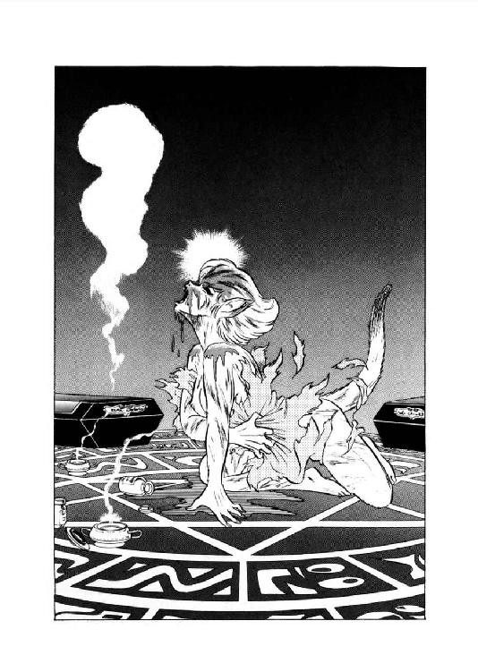
「危険!?」
反射的に立って豹娘に走り寄りそうになったルナだが、場に立ちこめる異様な気に押し留められる。その間にファルルは呪文を続けながら、人間から豹へ姿を変えてゆく。通常の一瞬の変身ではない。ごくゆっくりと、肌が変わり、筋肉が変わり、骨格が変わる。
「獣の体力で乗りきる気かっ......大胆な娘だな、まったく......ま、それで死なずに済むならいいか......」
ニグスが、ちょっと擦れた声で呟くのとほぼ同時に、ファルルは呪文を唱え終えた。鮮黄に黒い細縞、頭部から前胸部にかけて薬で紅く染めた木登振子豹は、棺の上にかなり濃くわだかまる霊体を無言で見すえている。息詰まるような数瞬の後、きれいな低音女声が評議会議場に響いた。
「ごめんなさい、みなさん。私が不覚をとったばかりに、ずいぶん苦労させてしまって。特にファルル、よく頑張ったわね」
「ミニャア」
豹が心底嬉しそうな声で、甘えるように、しかし誇らしげに一声鳴く。その声を聞いて、ルナは彼女が生命を賭けてでも招霊をやってのけようとした理由がわかったような気がした。
８
「彼の名はグレゴール・クライシス。私より六十年ほど先輩の、優秀な死霊術師でした」
魔道都市を襲った怪人の正体を訊ねられ、ファラ・ミルドレッドの霊体はゆっくりと話を始めた。
「いえ、でしたというのは間違いね。彼はまだ健在なんだから。だけど、正直なところ私はまだ信じられないのよね」
そう言って霊体はわずかにゆらぐ。姿がはっきりしてたら、彼女、間違いなく肩をすくめてたところね、とルナは思った。
「ちょうど百年前、評議員だったグレゴールは自分の魔道研究のために『戒律』を破り、その罪により斬首刑に処せられています。とにかく最大級の不祥事だから、当時の評議会は事実が外部に出ないように必死の工作をしたみたいよ。私はまだ十七歳の修業者だったから詳しい事実は知らないけど、彼が何の研究のため、何をするつもりで、何の罪を犯したのかという徹底糾明はされていないわ。まあ、魔道士を数人殺したのは確かだし、それで十分斬首刑に値するけれどもね」
「魔道士の斬首というと、やはり封じ印をかけられているわけですね？」
アルバート・エゼンの問いに、霊体は再び小さくゆらいだ。今度はうなずいているらしい。
「そのへんに手抜きはなかったわ。実際、今だって彼の額には封じ印の傷がついてるし。だから、いったいどうやって復活したのか、まるで見当がつかないのよね。何か外部から魔力がかかってるとは思うんだけど」
「それでは、奴の他に、更に強力な魔道士が黒幕にいると!?」
ブレイキー老人が、狼狽した声を出す。が、霊体の返答はごく落ちついていた。
「可能性としては考えられなくもないけど、あのグレゴールが他人の命令聞くともおもえないし。私はむしろ、魔道士じゃなくて魔道具じゃないかと思うわ。根拠はないけどね」
「なるほど......」
ソロモン・ブレイキーは溜息まじりに呟いた。敵の本名と前歴はわかったが、あまり役には立ちそうもない。
と、その時、バト・ロビスがいきなりだしぬけにぬっと立ち上がった。霊体をじろっと見すえ、押し殺したような凄味たっぷりの声で訊ねる。
「死霊術師よ。おぬしを生身に戻す手段はないのか。あるなら、すぐに聞かせい」
「ミーッ、ミニャニャーッ、ニャーッ！」
巨漢に合わせ、豹も切なげな鳴き声をあげた。霊体はぶるぶるっと大きく揺れる。
「あ、それは......いえ、ないわ。現状では無理よ。ファルルの成長を待つしか......」
「こらあっ、おぬし、俺をおちょくっとんのかあっ！」
無謀戦士の大怒号が、目いっぱい派手に爆発した。あまりの迫力に、ルナも評議員たちも声も出せない。その間にすうっと息を吸いこみ、バト・ロビスは第二弾をぶっ放す。
「白蠟屍がそれほど保存できるものではない事は、俺でも知っとるぞ！ もっと手っとり早い手段あるのだろうがっ。隠しても無駄だぞ、白状せえいっ！」
「まったく、蛮人には敵わないわね」
苦笑まじりに、霊体は溜息をついた。
「だけど本当に、まともな方法はないのよ。唯一つ、不確実な伝承があるけど、真実かどうかわからないし。もし真実なら、それはそれでとんでもなく危険なのよね」
「前置きはいい。早く伝承を聞かせてくれ」
音量こそは下がったが、無謀戦士の口調は有無を言わせない。霊体は小さくゆらぎ、話しはじめる。
「魔道都市の西方、秘密の名の内陸湖の畔に喪われた古代の神殿があると言われているの。神殿の主神は生命と死の女神で、女神に仕える巫女は宝玉をさずけられ、死霊術師の魔力を得たと伝えられてるわ。で、現在では神殿は崩壊して、女神と宝玉は地下に封じ込まれてるって話なんだけどね。問題は、この女神っていうのがどうも魔獣みたいなのよ」
「ほう」
無謀戦士の太い眉がわずかに寄った。が、次の瞬間、口元から牙のような歯がのぞく。本人は微笑してるつもりなんだよね、あれ、とルナは小さく呟いた。
「面白い。ファラよ、その神殿とやらまで、距離はどのぐらいある？」
あーあ、火に油を注いじゃった、と霊体は肩をすくめるように揺らめく。だけど、もうこうなったら止めようがない。せいぜい正確な情報を教えてやった方がいいだろう。
「確か、内陸湖までは普通の隊商で十日ぐらいって聞いたことがあるわ。カルバドク卿が詳しいと思うけど」
「うむ。で、白蠟屍はどのぐらい保つのだ？」
この問いに、霊体は一瞬口ごもった。が、すぐに押さえたような冷静な調子で答える。
「私の研究室にある保存の薬を使って、三十日が限度ね。放っておけば三日で崩れるわ」
「よし、三十日だな。待っていろ、必ずおぬしを復活させてやる」
無雑作に、しかし決然と無謀戦士は断言した。間髪を入れず、女戦士と豹も叫ぶ。
「あたしも行くわっ！」
「ミーッ、ミャオウ、ミャウッ！」
「も......もちろん評議会も全力を尽くしますぞっ」
他所者や新米に先を越され、ブレイキー評議員は多少慌て気味に宣言した。すると、霊体は軽くゆらぎながら答える。
「ありがとう。でも、みんな忘れないで。怖るべき敵が、魔道都市を狙っているのだから。彼に都市を蹂躙されちゃったら、白蠟屍をよみ返らせたところで何の意味もないのよ」
「それはそうですが、しかし......」
アルバート・エゼン評議員がそう言いかかった時、評議会議場の正面扉が紫色に輝き、扉の向こうからひきつった叫びが聞こえた。
「遠見の塔より緊急報告ですっ！ 西の森に大量の生屍人が出現っ。現在は二、三千体ぐらいですが、凄い勢いでその数を増しておりますっ。一部は都市へ動いている模様っ！」
「何いっ！」
ブレイキー老人が狼狽した叫びをあげる。死霊術師が健在なら簡単な呪文で撃退できるのだが、その魔道が使えない現在、生屍人の大群はまさしく大脅威に違いない。
「グ......グレゴール・クライシスの軍勢かっ」
「他に誰がいるってゆーのよっ！」
半ば憤然とした口調で叫びながら、ルナはすっくと立ち上がった。
「急いで防戦の用意を整えなくちゃ！ 戦闘能力のある魔道士を総動員して、城壁に配置させてっ。障壁がないから、生屍人、どっからでも侵入してくるわよっ！」
実は障壁を破壊したのは当の本人なのだが、この際そんなの気にしちゃいられない。猛然と叫ぶルナの迫力に押され、ソロモン・ブレイキー老人は多少慌て気味に他の評議員を見回す。
「う、うむ、しかし、誰か意見があるか？ 異議がなければ、評議会の総意として動員を行なってもよいと、わしは思うが......」
「しかし、指揮は誰が取るのですか？ あなたか、それともネッド評議員になるのか」
青白い顔のレイモンド・コパーマン評議員が、この時はじめて神経質そうに口を開いた。
「治安官だけならとにかく、我々を含む都市の全魔道士を指揮下に置くとなると、これは十分な討議なしでは問題が残りますな」
「しかし、討議の暇なぞありゃせんぞ」
ブレイキー老人は白い眉をしかめた。もたもたしていると、魔道都市そのものが壊滅する。と、アルバート・エゼンが素早く口を入れた。
「討議は不要です。霊体とはいえ、評議長閣下がここにいるのだから、決断を下していただきましょう」
「はいはい」
霊体が一瞬、苦笑めいたゆらぎを見せる。が、すぐにその声が艶やかにぴんと張った。とても実体のない霊が出しているとは思えない、いつもの評議長の声である。
「私の権限のすべてを、私が生身の体で復活するか、又は私の白蠟屍が崩壊するまで、ソロモン・ブレイキー評議員に移譲します。ただし、ブレイキー評議員は、魔道都市防衛司令官としてルナ・ド・リムズベル、副司令官としてロード・カルバドクとバト・ロビスを任命して下さい。これが移譲の条件です」
「了解いたしました」
ブレイキー老人は、即座にうやうやしく頭を下げた。
「条件了承の上、重任を受けさせていただきます」
「ありがとう。それでは私もそろそろ限界なので、後は皆さんにすべてお任せすることにしましょう」
そう言って、ファラ・ミルドレッドの霊体は、ふわっと空中に浮きあがる。
「皆さんと再び会えることを、心から願っています。では、また」
いかにも彼女らしい淡々とした口調で告げると、霊体はそのまま空中に溶けるように消えた。その瞬間、評議場にいた者のうち何人かは彼女の個人的な囁きを耳にしたが、その内容は伝えられた本人にしかわからない。
だが、霊体が消えたとたん、ルナの表情が目に見えて渋ったくなった。左手で髪をわさわさとまさぐり、小さく呟く。
「まいったなあ......釘さされちゃった......」
９
十何度目かの呪文に応じて土の中からのののののっと這い出てきた生屍人を見やって、グレゴール・クライシスはごくわずかではあるが眉を寄せた。生屍人は、死体というよりほとんど腐泥の凝まりで、四肢らしいものも判別できない。その姿を見て、例によって蝙蝠猫がけたたましく笑いだす。
「きゃははははっ、何っ？ 何なのっ？ 何なのこの不細工はっ？ これが生屍人だなんて言わないでねーっ！ きゃはははは、クラウド、あんた何かカン違いして、腐れスライムひっぱり出しちゃったんじゃなーい？ あーひどい、あー見苦しい、みっともなーい、みっともなーい、みっともなーいっ！」
「静まれ」
グレゴールの押し殺したような声と同時に、チャフはぴたりと嘲笑を止めた。怪人の氷のような視線が、フードで顔を隠した魔奴屍人に向けられる。
「この汚物どもを地中へ追い返せ。生屍人の召喚は、これで終わりだ」
魔奴屍人は無言のまま軽く頭を下げ、同時に不完全な生屍人はずるりと地面の下に消えた。グレゴールは、瞳だけを動かして周囲を見回し、ぼそりと呟く。
「それでは、始めるか」
彼の視線の届く限り、周辺全域が魔奴屍人の呼び出した生屍人で満ち満ちている。その数は、ざっと一万体ぐらいだろうか。大半は空ろな眼窩を宙に向けてぼーっと突っ立ったままだが、一部、勝手にうろうろとさ迷い歩いてるのもいる。あまり楽しい情景ではない。
「ザグは西より、チャフは東より攻めるのだ。私はクラウドとともに、正面に向かう。奴が現われたならば、用意の魔笛を吹け」
グレゴールが低い声で指示をするとともに、生屍人どもがのそのそと動いて、大きく三つの集団に割れる。続いて、黒い彫像のように無言で突っ立っていたザグ・ロビスが、ゆっくりとした足どりで歩きだす。生屍人集団のひとつが、彼に従って東へと移動する。静かな、しかし現実のものとは思えないほど無気味な行軍を見やり、グレゴールは冷ややかな口調で呟いた。
「心躍る光景だ」
「えええっ!? えっ!?」
蝙蝠猫が目を丸くして、素頓狂な叫びをあげる。
「グ、グレゴール様っ!? 今、何ておっしゃいましたあっ!?」
「心躍る光景だ、と言ったのだ。行くぞ」
ほとんど表情を動かさないまま、グレゴールは狂戦士とは違う方向へ歩きだした。蝙蝠猫と魔奴屍人、そして二個集団の生屍人が彼に従って動きだす。と、チャフが信じられないと言わんばかりの口調で訊ねた。
「あのお、グレゴール様あ、心躍る光景っておっしゃったんですかあ？ 本当にい？」
「そうだ」
平常通りの冷たい声で、怪人は素っ気なく言い捨てる。とてもじゃないが、心が躍っているよーには絶対に見えない。さすがに高笑いはしないものの、蝙蝠猫は疑わしそうに二、三度小首をかしげた。
「ふーん、そうですかあ。本当にそうおっしゃったんですねー。だけど、あの、グレゴール様って死霊術師のくせして生屍人とか死霊とか、お嫌いでしたよね、ね、ねえ？」
「そうだ」
猫の方には目も向けず、グレゴールはそれでも一応返事をする。北側に魔道都市の城壁がちらちらと望まれるが、彼は敵地を見ようともしない。凍りついたような視線を、ひたすら正面に向けている。習慣なのか、チャフはかまわず言葉を続けてゆく。
「ですよねえ、お嫌いですよねえ。そうなのよ、そうだったのよ。だけど、あの、そーするとまた一体どういう理由で、生屍人の行進見て、心が躍っちゃったのかしら。あたし、知りたいなー、知りたいなー、知りたい知りたい、知りたいーっ！」
「静まれ」
蝙蝠猫の声が尻上がりに甲高くなったとたん、怪人が押さえつけるような感じで呟いた。例によってさほど大きな声ではないが、猫はひっと息を吞み小さく首をすくめる。だが、その後に続いた言葉を耳にして、チャフは思わずグレゴールの表情をまじまじと見詰めてしまった。
「知りたくば、教えてやろう。私は生屍人などではなく、生屍人の正面に立ちはだかる、伝説魔獣の幻影を見ていたのだ」
「幻影......ですかあ？」
半ば反射的に、チャフが訊ねる。グレゴールは表情を動かさずに、かすかにうなずいた。
「そうだ。間もなくこの目で伝説魔獣を見れると思うと、いやが上にも心が躍るぞ。このような高揚感は、久方振りだ」
「はあ......」
どうも今いちピンと来ないな、という目付きで、蝙蝠猫はグレゴールの氷のような表情を見やる。久方振りの高揚感っつったって、ここまで平常と変わらないんじゃねーっ、と彼女が内心肩をすくめたその時、不意に怪人がわずかに頭を動かした。グレゴールの視線が、彼女の紅玉色の瞳をまっすぐ貫く。同時にチャフは、我知らずひきつりまくった絶叫をあげていた。
「グ、グ、グ、グレゴール様あっ！ その目っ！ その眼光っ！ あの時のっ、あの時のっ、あの時のおっ！ ひいーっ、ひいいーっ、お助け下さあいーっ！」
「そうだ。あの時以来だな」
恐慌を起こしてころげ回る蝙蝠猫から視線をそらし、グレゴール・クライシスは冷たい声で呟く。
「この高揚感、百年まえのあの時以来、久しく忘れていたものだ。再びこのような好機が来ようとはな。生き延びてはみるものだな」
その瞬間、ひいひいと喚きながらころげ回っていた蝙蝠猫が、凍りついたように動きを止めた。そしてそのままグレゴールを見詰め、がたがたと小刻みに震えだす。
怪人の顔には、彼女でさえ初めて見るかすかな笑いがうかんでいた。どんな忿怒の形相より怖ろしい、絶対零度の微笑が。
第二章 百年前・魔道都市の惨劇
１
「良い空模様だ」
窓ぎわに立って空を見上げながら、死霊術師グレゴール・クライシスは乾いた声で呟いた。その蒼白い顔貌を、強烈な閃光がかあっと照らし、やや間をおいて凄まじい雷鳴が轟きわたる。
「暴風雨は良い。魂が揺さぶられる」
ぼそりと呟いてから、彼はわずかに眉を顰めた。魔道都市評議会は、先日、都市全体を覆う天蓋障壁の設置を決定している。まだ計画の段階ではあるが、障壁が完成したら都市の興趣はほとんどなくなってしまうだろう。
「馬鹿どもめが」
暗い怒りをこめて呟くと、彼はマントをひるがえして窓に背を向けた。その髪は濡れた烏羽のように黒く、容貌も陰気ながらも若々しい。グレゴール・クライシス、今年で七十九歳、死霊術師としてはまったくの若手である。ちなみにこの同時点、ファラ・ミルドレッドが十七歳の乙女、ルナやバト・ロビスなんぞ、存在すらない。
窓から離れた彼は、大きな書見台の前に座り、あまり気のない視線で書物を見やる。と、書斎の扉が軽くノックされ、甲高い声が聞こえた。
「グレゴール様、只今戻りましたあ」
「入れ」
死霊術師が低く応じるが早いか、扉が重い音とともに開く。そして、大きな荷物を両手でぶら下げた猫少女がよたよたと入ってきた。
「あー重い、あーしんどい。ったく薬屋のおやじったら、上得意なんだもん、配達ぐらいしてくれたっていーと思うのにさっ。雷雨だからって不精決めこみやがってからに、ほーんと腹立っちゃうっ！」
けたたましい声でぶちぶちと文句を言いながら、浅黒い肌の少女は書斎の隅の円卓の上に、どさりと荷物を放り出す。グレゴールが冷たい声で訊ねた。
「言いつけた薬は、全部あったのか」
「はい、どーにか全部ありました。ですけど、黒睡蓮の麻酔薬はこれで全部ですって」
そういって少女は荷物の中から、黒い粉が詰まった硝子瓶を取り出す。死霊術師は、ごくわずかに眉を寄せた。
「それだけか」
「ええ。薬屋の奴、生意気なこと言ってましたよお。今時黒睡蓮なんか買ってくのは、グレゴール様ぐらいのもんだって。もっと安価で強力な麻酔薬が何種もあるのに、いったい何に使ってるんですかねー、とかざーとらしく訊くんだもん」
荷物の中から次々と瓶やら箱やらを出しながら、猫少女はけらけらと笑う。
「きゃははっ、もし黒睡蓮が本当は何に使われてるか知ったら、薬屋、きっと腰抜かしちゃうよーっ。何てったって、闇魔道の奥義中の奥義、闇魂の原料にしよーってーんだもん。普通の魔道士は、まー、ぶっ魂消るねーっ。きゃーはははははははっ......」
「静まれ」
グレゴールがいささか険しい声を出し、チャフは慌てて口をつぐんだ。死霊術師は厳しい表情で薬品を調べ、最後に黒睡蓮の瓶をしげしげと眺める。
「せいぜい五回分か......うかつな実験はできんな」
苦味を含んだ呟きを洩らすと、彼は瓶を円卓に戻した。ばさりとマントをひるがえし、ちょっと怯えた表情になっている猫少女を見やる。
「薬を地下研究室に収蔵しておけ。私は少し、調査をしてくる。何かあったら図書館に来るのだ」
「はい」
少女がこくりとうなずくのを見ずに、グレゴールはそのままつかつかと書斎から出て行った。残されたチャフは小さく肩をすくめ、ぶつぶつ独言を言いながら、円卓の上の薬品をまとめはじめる。
「うちの御主人様も、ほーんと熱心ねえ。そりゃ確かに不老不死を手に入れられりゃ、凄いとは思うけどさー。そのためなら戒律も何もまるっきり眼中なし、禁制の闇魔道にゃのめりこむ、誘拐も殺人も平気の平左ってんだから、こりゃもー一種の狂人よね。もっとも、その倫理感のなさが、御主人様の魅力なんだけどねーっと、どっこらしょっと！」
まとめ直した荷物を今度は肩にかつぎ、猫少女は書棚の一つの前に進んだ。彼女が左手をかざして短い呪文を唱えると、書棚がずずずっと壁の中にずり退がり、その床に四角い揚げ蓋が現われる。
「よいせっ、と、うぶっ！」
蓋を開けた少女は、思わず軽く眉をしかめた。死霊術師の地下研究室に通じる階段を伝わって、異様な臭気が昇ってくる。屍臭、血臭、そして何種類もの薬の臭いが混じった、慣れない者ならそのまま卒倒してしまいそーな異臭だ。しかし彼女はちょっと眉を寄せただけで、そのまま階段を降りてゆく。
「やーれやれ、昨夜の実験の時の臭気、まだ抜けてないんだ。やーんなっちゃう、っとにもー」
ぼやきながら、猫少女はどんどん地下へ降りて行った。この階段には照明の魔法はかかっていないらしく、燭台がいくつか壁から突き出て鈍い光を放っている。常人では足元が暗くて危険だろうが、そこは猫目の強み、チャフは難なく階段を降りきった。突きあたりには大きな金属製の扉があり、彼女の呪文に応じてゆっくりと開く。同時に、異臭が強烈に少女の鼻を襲う。
「うぐぐっ、こりゃたまんないわーっ」
呻きながら、それでもチャフは研究室の中に入った。広い研究室を照らしているのは数本の蠟燭だけだったが、彼女にはそれで十分間に合う。真紅の瞳でぐるっと室内を見回したとたん、さしもの猫少女も思わず立ちすくんでしまった。
臭気が抜けないどころの騒ぎじゃない。研究室の中は、ほとんど屠殺場と化していた。屍体、白蠟屍とり混ぜて、二十体以上の人体が研究室いっぱいにころがって、しかも一つ残らず頭部がない。斬られた頸部から流れ出た血だの体液だのが床一面に広がり、半分凝固してもの凄い臭気を放っている。一方、中央の台には、横に切られた生首の下半分が無雑作にごろごろと積んであった。
「ひえー、は、派手にやったもんねー、まったくーっ」
少女は、驚くというよりは、むしろあきれ返った表情で唸る。何度か実験の助手をさせられているので、昨夜研究室で何があったのかはだいたい想像がつく。よーするに、御主人様は闇魂を創ろうとして、また失敗したらしい。
「質より量って狙いだったんだろーけど、ゼロはいっくら集めてもゼロなのよねー」
彼女は、溜息まじりに呟いた。闇魔道の最高奥義の一つ、不老不死の妙薬『闇魂』。グレゴールは評議員の地位を利用して禁断の書を漁り、その製法をほぼ手にしている。ただ問題は、闇魂の主成分が人間の脳で、しかも並の脳ではだめらしい、という一点にあった。
この問題を解決しようと、グレゴールは数知れぬほどの犠牲者を誘拐し、脳をえぐって実験を繰り返している。さすがに魔道都市の中では危いので、近郊の農村を襲ったり、時にはドルミエの港町まで遠征し、老人、若者、男性、女性、果ては小児や乳幼児までも実験材料として調達してきた。しかしその努力にもかかわらず、闇魂はいまだ完成していない。
「さて、と。それはそーとして、これ、どう始末つけよーかしら」
ったく、と早くも立ち直った口調で猫少女は呟いた。慣れたせいか、それとも本来残虐性があったのか、彼女は御主人様の非道に全然嫌悪感を持っていない。
「どっちにしろ、あたし一人じゃどーにもならないわねー。と、そうだ、魔奴屍人の奴を使わせてもらおっと！」
うん、クラウドの能力を使えば簡単に片付くねっ、と少女はにまっと笑った。あの魔奴屍人には死霊術師の魔力が、不完全ながら植え込まれている。屍体に命じて自分で焼却炉に身を投げさせるぐらい、できなくはなかろう。
「そーと決まれば、まず薬を収蔵しちゃいましょっと」
強烈な屍臭も、酸鼻をきわめる光景ももはやぜーんぜん気にならない様子で、チャフは肩の荷物を降ろし、薬品の入った収蔵庫を開いた。
２
「結局、他に手段はなさそうだな」
難しい表情で呟くと、グレゴールは静かに書物を閉じた。
「それは、先刻わかっていたのだ。わかってはいたのだが......」
ぎゅっと眉を寄せ、死霊術師は立ち上がる。秘かに書庫から出してきた闇魔道の奥義書をマントの下にすっと隙し、そのまま個人読書室を出た。闇魔道書を読んでいるのを知られたら、評議員の彼といえどもかなり危い事になる。
「危険は犯してみたが、それに見合う収穫はなかったか」
苦々しげに口の中で呟きながら、彼はそのまま書庫に入ろうとした。司書たちは彼の身分を知っているから、まず止められる事はない。ところがその時、グレゴールの背に柔らかな女性の声がかかった。
「あの、クライシス評議員閣下ですね？」
「そうだが」
ごくわずかに頰を硬張らせ、グレゴールは声の主を振りかえる。彼女は対照的ににっこりと笑い、丁寧に頭を下げた。
「御無沙汰しています。シュターデン導師の門下で、このたび死霊術師の認定を受けましたローラ・パウルと申します。認定の時にお目にかかりましたが、覚えておいでですか？」
「うむ」
グレゴールはほとんど表情を変えず、小さくうなずく。確かに彼は、この娘の事をよく覚えていた。いや、それどころか、ある意味ではローラ・パウルこそが、彼が魔道都市全体で一番意識している存在かも知れない。しかし、そんな態度は毛ほども見せず、グレゴールは冷たい声で訊ね返した。
「で、私に何か用か」
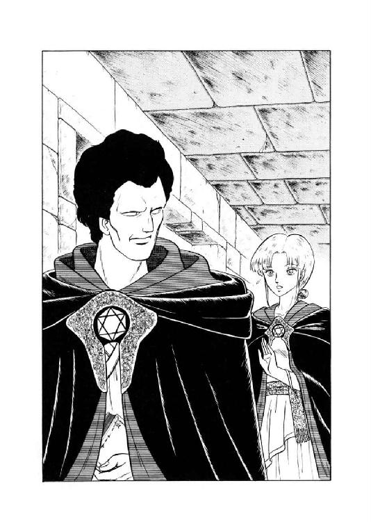
「ええ。実は前々から、お伺いしたいと思っている疑問がいくつかあるのですけれども」
真剣な表情になって、彼女は相手の顔を見上げる。その鳶色の瞳を、グレゴールはまともに見返した。冷たく鋭い、まるで爬虫類のような視線を受け、ローラの顔色がいささか蒼くなる。と、男が半ば呟くように口を開いた。
「私は忙しいのだがな」
大きくはないが、冷たい威圧を込めた声に、女魔道士は思わずびくっと震える。普通の魔道士なら怯えて退散するところだろうが、そこは最年少とはいえ正式に認定されている死霊術師、ローラは表情をひき締め直して、相手にくい下がった。
「短時間でいいんです。お話しさせていただけませんか。死霊術師として、どうしても伺っておきたい疑問なんですけれど」
「ふむ」
グレゴールは軽く眉を寄せ、相手を見やり直す。彼女と向き合ってはじめて見せる、表情らしい動きである。そしてそのまま彼は、ばさりとマントをひるがえし、ローラに背を向けた。
「この場で待っておれ」
命令口調で言い捨てると、グレゴールは足早に書庫に入ってゆく。一瞬、女魔道士は後を追いかかったが、思い直したように足を止める。
「......逃げる気なら、かまわないわ、自宅まで押しかけてってやるから......」
鳶色の瞳に決意の光をこめ、彼女は戦闘的な口調で呟いた。半ば無意識の仕草だろう、横鬢から伸ばした一房の髪を、中指でくるくるっと巻いてきゅっと引っ張る。
一方、書庫に入ったグレゴールは、積みあげられた書物の山の間を迷わずすり抜けながら、ローラをいかに扱うべきか真剣に検討していた。何しろ、彼女の導師ロイ・シュターデンは、魔道士の非違を取り締る内務監査局の担当評議員で、戒律の番人と称されている。その愛弟子で、素質は導師をしのぐと言われるローラ・パウル、下手に扱うと、これは致命傷になる事間違いない。
「......ここまで来て、内務監査官どもなどに邪魔されてたまるものか」
小さく、しかし強烈な毒を込めて、グレゴール・クライシスは呟いた。書物の小山をひとつ持ちあげ、闇魔道書を無雑作に突っ込む。そして再びばさりとマントをひるがえすと、彼は巻きあがる埃の中、入ってきた扉に向かって戻って行った。書庫には無数の出入口があり、敵に待ちぼうけをくらわすのは簡単なことだが、それでは監察局の術中にはまる。
書庫から出てきたグレゴールを見て、女死霊術師は一瞬意外そうな表情になった。だが、すぐに頰を引き締め、真剣な視線で相手を見やる。
「お時間、いただけますか？」
「長くは割けん。日没の鐘までだ」
図書館の魔法時計を見て、グレゴールは感情のない声で応じた。意図的にだろうか、相手の方には視線を向けない。
「で、どこで話をしようというのだ」
「はい。図書館の個人読書室が良いと思いますけど。よろしいでしょうか？」
「よかろう」
軽くうなずくと、彼はずらりと並んだ個人読書室の一つに歩み寄り、扉を開ける。
「さあ、入れ。疑問というのを、聞こう」
ローラを部屋に入れ、死霊術師は自分で扉を閉め、錠をおろした。何だか罠にはまってしまったような気がして、彼女はやや不安気に読書室の中を見回す。奥に机と椅子ひとそろい、手前の壁ぎわに予備の椅子がふたつ、特に何の不審もない。
突っ立っている相手には目もくれず、グレゴールは奥の椅子を回して悠然と座りこんだ。ローラも急いで、予備椅子のひとつに座る。そしてそのまま、部屋の中を奇妙な沈黙が支配した。
「いけない......気押されちゃってる......」
内心焦りながら、ローラは先輩死霊術師を見やった。一対一になってみると、冷たい威圧感がより一層凄まじい。とても、彼女自身の次に若いなんて信じられないわ、とローラは心底震えあがった。この男は普通の死霊術師じゃない。一種の怪物だ。と、その怪物が低い声で訊ねる。
「どうした。疑問があるのではないのか」
「は、はいっ」
相手が言葉を出したため、彼女の呪縛めいた感覚がわずかながら薄れた。呼吸を整え、ローラは慎重に言葉を続ける。
「クライシス評議員閣下は、不老不死の追求に御熱心だそうですね。死霊術師はむしろ死を扱う魔道士とされるのですが、どういう理由で生命を研究なさるのでしょうか」
「自分の研究が未完成のうちに、その内容を喋る魔道士はいないぞ」
取りつく手掛かりもない口調で、グレゴールはぼそりと呟いた。
「何も話す意志はない」
「いえ、研究の内容ではなく、動機をうかがいたいのです。どうして死霊術師が、生命の研究をなさるのですか」
彼女の重ねての問いに、相手はわずかに眉を寄せた。ごく一瞬ではあるが、不審気な表情になる。
「奇妙と思うのか」
「はい。少なくとも、他の死霊術師の諸先輩とは、はっきりと違います」
「ふむ」
違って当然だ、とグレゴールは口の中で呟いた。あんな腑抜けどもと同一視されて、たまるものか。
「他の死霊術師が何をどう研究しているのかについては、私はあまり関心はない」
正確に言えば眼中にないのだ、と彼は内心つけ加える。実際、私から見れば先輩方は何もやっていないに等しい。
「しかし、不老不死は古来人間が追い求めてきた、いわば究極の目標の一つだ。私がそれを狙ったからとて、奇妙な事はなかろう」
「それはそうですけれど、でも、やはり死霊術師の魔道は、死によって分離した精神と肉体を別々に扱う能力でしょう」
そう言って、ローラはまっ正面から相手を見すえた。喋っているうちに、自分の調子を取り戻したらしい。
「それに死霊術師であれば、基本的に常人の三倍以上の寿命がありますもの。あえて生命に執着するというのは、どうも......」
「たかだか二百年の寿命だ」
不意に、グレゴールが相手の言葉をさえぎった。声は低く、抑揚もないが、異様なまでに力が籠っている。しかも、彼女が思わず絶句するほど、眼の光が冷たく鋭い。やっと血の気が戻り始めていたローラの頰が、再びすうっと蒼白になる。
「たかだか二百年。大きな時の流れから見れば、一瞬にもならん。この一瞬が過ぎ去れば、どんなに偉大な存在も、空しく消えて無くなるのだ。その後に残された死霊や屍人など、無益な残骸にすぎない」
さほど大きな声ではないが、完全に相手を圧倒し、グレゴール・クライシスは言葉を継いでいった。
「死霊術師は、死者の残骸にすがり、一瞬の生命をわずかに延長することができる。しかし、それで満足してしまうのは、私の性質に合わないのだ。私は、永遠とまではいかずとも、せめて千年単位の寿命を得たい。これは死霊術師としての私の能力とは無関係の、グレゴール・クライシス個人の願望だ」
「はぁ......」
やっと間をとらえ、ローラは溜息半分に相槌を打つ。その顔を、グレゴールはまともに見すえた。
「奇妙と思うか。まあ、どうでも良い事だが。しかし、西方の果てでは、不老不死が魔道士の最低条件だと言うぞ」
「そ......それは......」
女死霊術師の顔がさらに蒼ざめ、瞳に隠しようもない恐怖が現われる。アルタイオの魔道士にとって、西方の魔道都市は重大な禁忌の対象で、その名を口にすることすら許されていない。それをこの男は、禁じられた名こそ言わないものの、明白に引き合いに出したのだ。
相手の恐怖感に気付いたのかどうか、グレゴールはいったん口を閉じる。と、その時、日没の鐘が、微音ではあるが確実な音色で読書室の中に響いた。
「あ、あの......」
「約束だ。これで失礼する」
何か言いかかったローラを制するように、彼はマントをひるがえして立ち上がる。そしてそのまま、つかつかと足早に個人読書室を出てしまった。引き留めるどころか、声をかける隙すら与えない。残されたローラはしばし呆然としていたが、やがて無言のまま大きな溜息をつく。
一方、図書館を出たグレゴールは、人気のない『城』の廊下を歩きながら、苦々しげな声で呟いていた。
「いかん。喋りすぎたか」
３
「お帰りなさいませえ、グレゴール様っ！」
苦い表情のまま自宅に戻った彼を、猫少女が騒々しすぎるほど騒々しく迎える。
「あのー、薬を収蔵する時に地下研究室掃除しときましたよーっ。だって、あれをあのままにしといちゃ、あんまりですもんねっ。そりゃまあ確かに労力はかかりましたけどお、グレゴール様のためだから、あたし頑張っちゃいましたっ。ちょっと魔奴屍人も使わしてもらいましたけど、作業の大部分をやったのは、あたしっ、あたしっ、こーのあたしですからっ......」
「わかった。静まれ」
わずかに眉を寄せ、死霊術師は使い魔を黙らせた。そのまま直接書斎に入り、物思わしげに、そして少し苛立たしげに、書見台をこつこつと叩く。その周囲を、一応口はつぐんでいるものの、明らかにもの問いたげな表情で猫少女がうろうろと歩き回る。と、グレゴールが唐突に彼女に声をかけた。
「地下研究室は、使える状態なのだな？」
「は、はいっ！」
御主人様の声に何やら普通ならぬ気配を感じ、猫少女は思わず背筋と尾をぴんと伸ばす。
「大丈夫ですっ！ 今すぐにでも実験できますっ！ はいっ、はいっ、はいっ、間違いありませんっ」
「うむ」
軽くうなずくと、グレゴールはマントをひるがえして窓際に歩み寄った。まるで何か重大な啓示を受けるような表情で、暴風雨が去った直後の奇妙に澄みきった夜空をながめる。チャフもつられて窓の外に視線を向けたが、特に何も変わったことはない。はて、と首をひねったとたん、死霊術師が空を見上げたまま、低い声で呟いた。
「今夜、やるぞ。もはや、ためらっている時ではない」
はて、何をやるのかしら、と猫少女はもう一回首をひねる。闇魂の実験材料集めなら、今さら気合を入れる事もないだろうし。だいたい、もはやためらってる時じゃないったって、グレゴール様、今まで何かためらってたんですかあ？ とてもそーとは思えないんだけどなーっ。いったい、これ以上、どんなとんでもない悪事やろーってーんですう？
だが、珍らしくも彼女は、喉元まで出かかったその問いを、口に出さずに押さえ込んだ。いや、グレゴールの放つ平時以上に異様な雰囲気に押さえ込まれた、と言った方が正しいだろう。彼は、そのまま少しの間天空を見ていたが、やがて大きくマントをひるがえし、窓に背を向ける。
「チャフ、従って来い」
「はいっ」
無雑作に命令するが早いか、グレゴールはさっさと書斎を出て行く。もちろんその背後に、影のように猫少女が従っているのは言うまでもない。
自宅を出たグレゴールは、西地区の住宅街を通り抜け、中央通りを横切った。通常の人間狩りなら大門へ曲がって都市を出るのだが、今夜はどうも違うらしい。そのまま東地区の繁華街へと入ってゆく。
「あのお、グレゴール様あ。そのあの、とりあえず目的地はどこなんですかあ？」
どうも今ひとつわけがわからん、という表情の猫少女が、ためらいながら訊ねる。だが、死霊術師の返答は目いっぱいそっけなかった。
「目的地などない」
「はあっ!?」
さすがのチャフも、これには紅玉色の目を丸くして絶句する。そこへグレゴールが一言つけ加えた。
「目的はあるがな」
「何なんです？ 何なんです？ 何なんですその目的って？ 目的がわかんないと、あたし、安心できませんよおっ！」
早口でまくしたてる使い魔に、死霊術師がじろっと視線を向ける。その瞬間全身の血液が凍りついたような気がして、彼女は命じられたわけでもないのにぴたりと口を閉じた。御主人様の邪眼は以前から凄いけど、今夜はまた一段と磨きがかかってる。これはよっぽど非道な悪事を考えてるな、とチャフは首をすくめながら思った。と、そのとたん、彼が押し殺したような声で呟く。
「どうやら目的が出てきたようだ」
「えっ!?」
緊張した表情になって、猫少女はグレゴールの視線を追った。彼が見ている路地沿いには安っぽい居酒屋が並んでいて、その中の一軒から酔漢が一人、ふらふらっと歩み出る。一応魔道士のマントを着けてはいるが、留め金が外れかかり、無様なことおびただしい。その朱に染まった丸顔に、彼女は確かに見覚えがあった。何しろ、会ってからまだ半日もたっていない相手である。
「あららららっ？ あの酔漢、薬屋のおやじじゃないっ!?」
「そうだ」
薬屋が目的なんですか、とチャフが訊ねるより早く、死霊術師はつかつかと酔漢の目前へ進み出た。
「良い晩だな、おやじ」
「へ？」
薬屋はとろんとした酔眼で、声をかけてきた相手を見やる。二呼吸ほど間をおいて相手が誰だか認識ししたらしく、まっ赤な顔に驚きの色が浮かんだ。
「こ、こりゃあ、クライシスの評議員閣下じゃありませんか。どーも、毎度ごひいきにあずかりましてっ......ととっ」
ぺこぺこと頭を下げようとして、薬屋は平衡を崩し大きくよろめく。グレゴールの瞳に氷より冷ややかな嘲りがちらっと現われたが、酔漢はまったく気付かない。
「いやー、具合良く雨もあがりまして、どうもまったく、本当に良い晩で......へへへ......しかし何ですなあ、評議員ともあろうお方が、こんな安居酒屋街においでとは、いや、ちと驚きましたよ、はははははははは......」
「今夜はお前に会いに来たのだ」
ほとんど感情を含まない声で、死霊術師は相手の笑いをさえぎった。そして、けげんそうに眼を見開いた酔漢に、ずいっと一歩詰め寄る。
「お前は、私が薬品を何に使うのか、ずいぶん興味があると聞く。今夜は特別に、用途を教えてやろう」
「へ？......ぎえっ！」
その瞬間、死霊術師の指が薬屋の喉元に触れた。凍るような感覚に彼は悲鳴をあげかかったが、もはやまともに声が出せない。あっと言う間もなく、犠牲者の赤ら顔が濁った白蠟色に変わり果てる。
「......魔道士も、普通人と同じだな。精気を吸い尽くせば、白蠟屍と化す」
呟いて、死霊術師は短い呪文を唱えた。硬直していた白蠟屍の体が、ぎくしゃくとではあるが動きだす。
「よし。目撃者はいないようだな」
「は、はいっ！」
グレゴールに視線を向けられ、猫少女は慌てて周囲を見回した。勢いがつきすぎて、体がくるくるっと回転する。
「はいっ、はいっ、はいっ、大丈夫ですっ。何もいないし、何も聞こえませんっ！」
「うむ。戻るぞ」
言うが早いか、死霊術師はゆっくりと歩きだした。薬屋の白蠟屍が無様な足どりで彼に従い、その背後に警戒心の権化みたいな表情の猫少女が続く。何しろ、下級術者とはいえ正式認定された魔道士を毒牙にかけたのだ。この現場をおさえられたら、評議員であろうとなかろうと、下手人はまず確実に斬首刑にされる。
「何があったのか知らないけど、どーやら御主人様、決定的に見境いなくしちゃったみたいねーっ」
言葉には出さず、猫少女は口の中で呟いた。と、その口元ににまっと邪悪な笑いがうかぶ。
「......何やらかすのか、期待しちゃうなっ。うふっ、楽しみ、楽しみ、た・の・し・みっ」
４
「用意できましたあっ！」
チャフが、地下研究室の滅々とした雰囲気とは、ちょっと不似合いな声で叫んだ。それに対してグレゴールが、これは完全に雰囲気に合った声で応じる。
「よし、始めるぞ」
そう言うと、死霊術師は白蠟屍に向かって呪文を唱えはじめた。椅子に座った薬屋の体がぼーっと鈍く光り、肌に生気が戻ってくる。そして、呪文が終わると同時に、彼は身も世もない悲鳴をあげた。
「ク、クライシスの旦那ーっ！ いったいこりゃ何の真似ですっ!?」
「実験だ」
ぼそっと呟くと、グレゴールはマントをはね上げ、右手を後方に伸ばす。猫少女がすかさず、その手に死神鎌を渡した。何が何やら理解不能ながら、とにかく怖ろしく危険な事態を感じ、薬屋は慌てて立とうとする。しかし、四肢は椅子に縛りつけられ、身動きもとれない。
「お前から買った薬品を使って、私は闇魂を創造するのだ。だが、そのためには薬以外にも必要な材料がある。魔道士の脳だ」
冷酷な声で告げながら、グレゴールはすいっと死神鎌の刃を振りあげた。薬屋の表情が、凄まじいばかりにひきつる。その顔に向け、死霊術師は淡々と告げた。
「薬と同じく、脳もお前に用立ててもらうぞ」
「じょ、冗談じゃないっ、人殺し――っ！」
薬屋の絶叫が終わらないうちに、大鎌の刃が一閃する。ごとん、と重い音がして、不幸な犠牲者の頭は胴から離れ床に落ちた。と、頭に続いて、何かがぼとりと床にころがる。猫少女が大きく目を見張った。
「お魚っ？」
「銀鱈だ。薬屋の魔力で、召喚されたのだ」
死神鎌を傍に置き、グレゴールは奇妙に静かな口調で言う。猫少女は一瞬ぽかんとしていたが、すぐに腹を抱えてけたたましく笑いだす。
「きゃーはははっ、きゃーはははっ、きゃーはははははははははっ！ そう、そう、そーだったのっ！ 魔道士と言やあ聞こえはいいけど、なーんと銀鱈の召喚術師とはねーっ！ そんな魔道士、いったい何の役に立つっつーのよーっ、まったくもーっ！ あー可笑しーっ、あー傑作だっ、おーなかの皮がよじれちゃうーっ、きゃーは、きゃーは、きゃはきゃはきゃは......あーくるし」
「いいかげんに、静まれ」
さすがにいささか苦味を含んだ声で、グレゴールは息も絶え絶えに笑いころげる使い魔を制止した。そして、胴から噴き出る血潮を浴びないように注意しながら、犠牲者の頭部を拾いあげる。
「チャフよ、薬を調合するのだ。できるな？」
「は、は、はい、はい、できます、やります、はい......」
笑いすぎて息をきらしながら、猫少女はかろうじてうなずいた。それでもさすがに急いで調合台に向かい、用意してあった薬を混ぜはじめる。その間にグレゴールは、手術刀と鏨を巧みに使って頭蓋骨をこじ開けてゆく。常人から見れば残虐の極地だが、彼自身にはそんな罪悪感は少しもない。単に、実験に必要な規定の作業というだけのことだ。慣れた手つきでグレゴールは犠牲者の頭から脳を取り出し、ガラスの容器に移しかえる。
「チャフ、薬はできたか？」
「はいっ、はいっ、ここにちゃーんとでき上がっていまーすっ！」
叫ぶが早いか、猫少女は二本のフラスコを御主人様に差し出した。一本には赤、一本には緑の、毒々しいまでに鮮やかな原色の液体が入っている。フラスコを受け取った魔道士はそれぞれの臭気を嗅ぎ、そして小さくうなずくと、脳を納めた容器に赤い薬を注ぎこんだ。そのとたん、脳から白い煙が噴きあがる。
「予想以上に激しい反応だな」
シュウシュウと音までたてて煙を噴く脳を見詰め、グレゴールは低い声で呟いた。
「これなら大丈夫ですよっ！ 反応が今までと違うもん。きっと成功しますよ、ねっ！ ねっ！ ねっ！」
御主人様の表情と実験材料を交互に見ながら、猫少女が興奮した声で叫ぶ。グレゴールはわずかに眉を寄せたが、騒ぐ使い魔を制止もせず、もちろん同調もせず、無言のままもう一本のフラスコを傾けた。緑の薬が容器の中に注ぎこまれ、白い煙が灰色に、そして見る見るうちにまっ黒に変わる。
「さて、どうなったか......」
わずかに上体を反らせて黒煙を避けながら、グレゴールはごく小さな声で呟いた。今までの実験では、この黒煙がおさまった後、容器の中にはほとんど何も残らない。煙を逃がさないよう密封してみたこともあったが、煤のような黒い粉がわずかに得られただけだった。
「奥義書を真に受ければ、少なくとも固形物が残らねばならんのだが......」
グレゴールはかすかに呟きながら、延々と黒煙をあげている容器を見詰める。先刻まで騒いでいた猫少女も、息を詰めて真紅の瞳を凝らしている。主人が喋っていて従者が黙っている状況は実に珍らしいのだが、二人ともそんな瑣末事、全然気づいていない。
永遠とも一瞬とも思える奇妙な時間が過ぎて、やがて黒煙がその濃度を減らしはじめた。そのとたん、しばらく静かだったチャフが、素っ頓狂な叫びをあげる。
「あ――っ！」
「静まれっ！」
絶叫に続けて何か言いかかった使い魔を、グレゴールが間髪を入れずに制止した。その語気の鋭さに驚いて、彼女は容器と御主人様をきょときょときょとっと見交す。
「でも、あの、その、これ......」
「静まるのだ」
今度は平常通りの冷たい口調で、グレゴール・クライシスは繰り返した。
「失敗か、成功か、今回ばかりは私が自分で確認する。告げてはならん」
「はあ......」
気押されていささかぼーぜんとしている猫少女を尻目に、彼はゆっくりと、恭々しいとさえ言えそうな態度で容器の中に両手を入れる。と、その両眼が、ぎらりと異様な輝きを放った。
「あった。......成功か」
「はい。そーなんです」
チャフが、彼女らしくもない小声で呟く。グレゴールはわずかにうなずき、容器の中から黒く光る固形物を取り出した。大きさは彼の片手で握り込める程度で、一見、上質石炭か黒曜石としか思えない。
「これが、闇魂ですかあ......」
我ながらいささか拍子抜けしてるなあ、と思いながら、猫少女は闇魂を凝視しているグレゴールの傍に寄った。御主人様の長年の目的が達成されたんだから、彼女は気質からすればもっときゃんきゃらきゃんと騒ぎまくって当然の状況なんだが。やっぱ、決定的瞬間で制止かけられちったからかなー、と小さく呟きながら、彼女は御主人様の表情を横目で見やる。
「あのお、おめでとうございます、グレゴール様。闇魂が見事完成したんだからあ、これで不老不死を得られたわけですよね？」
それにしちゃあんまり嬉しそーな表情してないけど、と思いながら、猫少女は怖る怖るといった調子で声をかけた。確かに眼の輝きこそ異様だが、グレゴールの表情は平常以上に凍てついた感じになっている。もっとも、嬉しそーな表情の御主人様というのも、今いち彼女の想像力の外だが。
と、その時、グレゴールが闇魂から視線を動かし、まっ正面からチャフを見すえた。彼女は横目気味に主人を窺っていたのだが、思わずまともに瞳を合わせてしまう。そして同時に、彼女は全身に血が凍りついたかのような感覚に襲われた。
「グ......グレゴール......さまぁ......」
「確かにこれは闇魂だ。しかし、残念ながら私に不老不死をもたらすほどの大きさはない」
異様な輝きなんて生やさしい代物じゃない、気の弱い奴なら衝撃死しかねない強烈な眼光で使い魔を金縛りにしたまま、グレゴールはゆっくりと呟く。どうやら意識して眼光を使っているのではないらしい。
「闇魂の効果は大きさに比例するのだ。この大きさではせいぜい二百年と少し、死霊術師の寿命と大差ない。それでは意味がなかろう」
呟いて、グレゴールは出来たばかりの闇魂をぐっと握る。
「もっとも、下級の召喚術師の脳でも、この程度の闇魂なら造れるのだ。しかるべき、真に強力な魔道士の脳なら、必ずや私の要求を満たしてくれよう。だが、その前にやっておかねばならん事がある。実用試験だ」
「テスト......？」
猫少女の舌がかろうじて動き、グレゴールはごくわずかにうなずく。
「闇魂を受け入れるためには、胸を裂いて心臓の中に埋め込まねばならん。カビの生えた奥義書だけを頼りに、自分の心臓を斬り裂くわけにもいかないからな。何としてでも試してみる必要がある。お前を使ってだ」
「え、えっ、えっ、えーっ!?」
猫少女の真紅の瞳が、ほぼ正円形に見開かれた。大慌てで、もつれ気味の舌を動かす。
「あ、あ、あのっ、あのあのっ、ほ、本気ですかあっ!? ほ、本気で、本気であの、あたしの心臓を!? か、かっさばくんですかあああっ!?」
「試験が成功なら、試験体は私とともに少なくとも二百年を生きる事になる。それを考えると、うかつな相手で試験はできん。お前しかいないのだ」
ぎらぎら光る瞳をぴたりとすえたまま、グレゴールは冷たい声で言い放った。その右手には、鋭く輝く手術刀が握られている。こ、こりゃあ本気だあっ、と猫少女は絶望的な戦慄とともに確信した。
すうっとグレゴールの左手が伸び、少女の肩を抱く。逃げなきゃ、と思うものの身体が動かない。怖ろしい手術刀が胸元に迫ってくる。チャフは半ば本能的に身をよじり、精いっぱいの哀願をする。
「いやあっ、いやいやっ、お願い、お助け下さいっ、ああああ、やめっ、やめてっ、ああっ、あああ、だめだめだめだめ、やめてっやめてっやーやーいやあうぎゃあ――っ！」
ずぶっ、と手術刀の刃先が、猫少女の左乳房の下に差し込まれた。そのまま刃は胸の中心へと裂いてゆく。血潮が勢いよくあふれ、少女の浅黒い肌をつたい、魔道士のマントや長衣にも降りかかる。
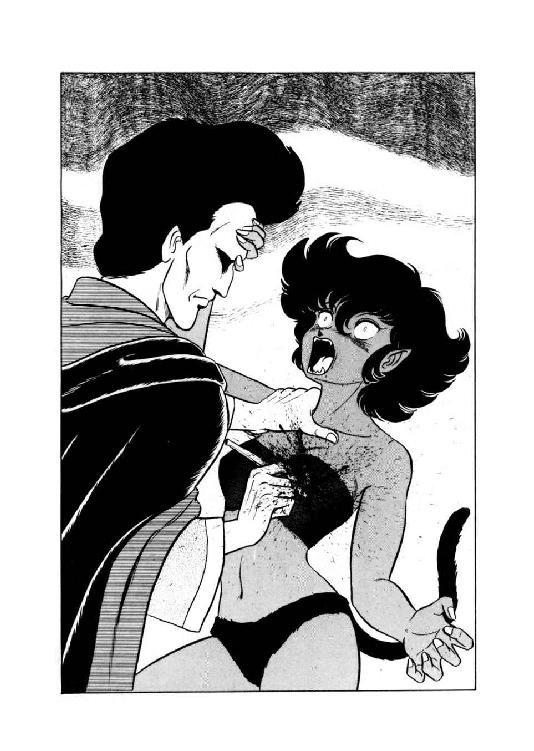
「ぎーっ、ぎひいっ、がーっ！ ぐああああああ、あーっ、あーっ、があ――っ！」
チャフの凄まじい苦悶の絶叫が続くが、グレゴールはもとより動じない。左腕でがっちりと少女を支え、右手の手術刀だけで怖ろしく巧みに心臓を露出させる。そして、どくんどくんと脈うつ器官を引き出すと、そのままずばりと刃を突き込む。たちまち噴水のように熱い血が撒き散らされ、チャフが断末魔の絶叫をあげる。
「がああああああああ......あああああ......ああああ......ああ......あ......」
噴き出る血が勢いを失ってゆくのに合わせるように猫少女の断末魔は擦れて消え、そして頭部ががくりと後方に垂れた。まったく完全な御臨終である。
血みどろになったグレゴールは、微塵も表情を動かさずに手術刀を置き、闇魂を取りあげた。ぽたぽたと血を垂らしている猫少女の心臓の裂け目に、いささか無雑作な感じで押し込む。そして、そのまま視線をすえて見詰める。一呼吸、二呼吸、何の変化もない。
「だめか......」
グレゴールが呟いた時、チャフの胸の中からぶくぶくと黒っぽい泡がわきあがってきた。そして見る見るうちに泡は傷口にあふれかえり、覆いつくす。と、完全に死んでいたはずの猫少女の体が、びくんと撥ねた。頭部がわずかにもち上がり、痙攣するような感じで口元が動く。
「あうう......うあ......あああ......あう......」
「蘇生したようだな」
冷静すぎるぐらい冷静に呟くと、グレゴールは生気の戻ってきた使い魔の瞳をのぞき込んだ。
「言葉が出せるか。気分はどうだ」
主人の素っ気ない問いが耳に入ったのか、猫少女の瞳の焦点が彼の顔に合わさる。同時に口元の痙攣が止まり、にまあっと妖しい微笑が浮かぶ。そして彼女はゆっくりと答えた。
「最高の......気分です......グレゴール様......」
５
「ローラ・パウル様ですねっ」
甲高い声でだし抜けに名を呼ばれ、若い女性死霊術師は読んでいた書物から目を離して振りかえった。
「そうですけど、何か？」
「あ、やっぱりそーだ。探しましたよお。なーにしろうちの御主人様って、そーゆーとこ無雑作なんだからあ。とにかくあたしにひょいと手紙渡して、大至急これを届けてこい、でしょ。ったく、都市じゅう飛び回らされる使い魔の身にもなってほしーもんだわ、ねえ」
きゃんきゃらきゃんと喋りまくる浅黒い肌の少女を、ローラはややあっけにとられて見ていたが、すぐに気を取り直して訊ね返す。
「あ......あの、私に何か用なの？」
「はいはいはい、そーですそうそう。ローラ・パウル様、あなた宛にうちの御主人様、グレゴール・クライシスからの手紙があります。お受け取り下さい」
少女はにまっと笑うと気取った仕草で頭を下げ、取り出した白い封筒を相手に差し出した。受け取って見ると、確かに表には彼女の名が書かれ、グレゴールの紋章で封蠟がしてある。
「んでもって、御返事をいただいて来るよう申しつかっておりますので、とにかく内容を御覧下さいな」
「一般読書室で？」
ローラは、わずかに眉を寄せて周囲を見た。くくっ、と少女が小さい声で笑う。
「別に誰も注目してませんよ。それに、ちょっと急いでるんで、早いとこ御返事ほしいんですよね」
「わかったわ」
意を決したような表情で、彼女はぴっと封筒の端を裂いた。中から手紙を引き出して読み進むにつれて、その表情に驚愕の色が濃くなる。傍に立った猫少女は、腕を組み、口元に薄い笑いを浮かべて女魔道士の表情を見やっている。
「さて、御返事はいかがでしょう？」
手紙を読み終えたところを見はからって、チャフは軽い調子で声をかけた。が、ローラは即答せず、そのままじっと手紙を凝視している。そりゃそうよね、と猫少女はわずかに舌を出して笑った。
「どうなさいますか？ もし何でしたら、御返事はなかったということでもよろしいですけどお？」
「いえ、返事はしましょう」
少女の親切ごかした言葉に、ローラはきっぱりと首を振る。真剣そのものの、やや蒼ざめた表情で、彼女は嘲笑じみた笑いをうかべた猫少女を見すえた。
「クライシス評議員閣下に伝えて。御招待、感謝しますとね。今夜、確かに伺います」
「はい。承りました」
猫少女は軽くうなずきながら、小さく笑う。洞察力のない者には無邪気な微笑と見えるだろうが、ローラの目には凄まじいばかりの悪意の嘲笑と感じられる。だが、それでもあえて、彼女は相手に軽く一礼した。
「閣下によろしく」
「はーい、確かにっ」
表面上はあくまで礼儀正しく、深々と礼をして、紅玉色の瞳の猫少女ははずむような足取りで去ってゆく。その背を見やって、ローラは小さな溜息まじりに呟いた。
「......ちょっと無謀だったかしら。でも、こんな好機二度とないだろうし......」
一方、ローラから返事をもらった猫少女は、一目散にクライシス邸に戻るが早いか、例によってけたたましく報告を開始する。
「グレゴール様っ！ 来ますっ、来ますっ、来ますよっ。ローラ・パウルの奴、今夜確かに伺います、だってーっ！ ふーっくっくっくっくっくっ、いー度胸してるっつーか、はあっきり言って、馬鹿ねーっ。きゃははははははははーっ、飛んで火に入るカモネギちゃーんっ！ きゃーはははっ、きゃーはははっ、きゃーははははははははっ！」
「静まれ」
冷然と使い魔を制止すると、グレゴールはやや憂いをおびた声で呟いた。
「そうか、来るか。ならば何にせよ、相応の礼儀を尽くさねばなるまいな」
「くっくっくっ、そーですねえ」
おかしくってたまらないと言いたげな表情で、猫少女は横から御主人様を見やる。
「どーんな歓迎しましょうか。どーせ最後は斬首して脳えぐっちゃうわけだけど、その前にたっぷり恐怖を味わってもらいたいなー。それに苦痛もねーっへっへっへっへっ、屈辱なんつーのも面白いんじゃないかしらっ。うーっ楽しみっ、楽しみっ、楽しみねっ！」
「いや、彼女に対する饗応は、一つしかないだろう」
低く呟くと、グレゴールはばさりとマントをひるがえして椅子から立ちあがった。その顔を、チャフがきょととんと見上げる。
「どーなさるんですう、グレゴール様？」
「私の信条を、じっくりと話して聞かせてやるのだ。それが何よりの供養になる」
うむ、とグレゴールは腕組みをして重々しくうなずいた。
６
「今夜はわざわざ御招待いただきまして、有難うございます」
書斎に入ったローラは、そう言って丁寧に頭を下げた。椅子に座ったグレゴールも、ごくわずかにではあるが返礼する。正面に腰かけた相手を、彼はじっと見すえた。
「昨日の続き、ということで話をしよう。よいかな？」
「は、はいっ」
ローラはいささか狼狽気味にうなずく。いつも冷酷でとっつき難い先輩死霊術師が、今夜は奇妙に礼儀正しい。しかしまあ奇妙といえば、今まで誰一人招き入れた前例のないこの屋敷に、彼女をわざわざ呼んだという事実自体が、ほとんどセンセーショナルなくらい奇妙なのだ。そしてその奇妙な御招待に応じてしまった以上、今さらいちいち狼狽してても始まらない。彼女は呼吸を整え直すと、にこっと微笑む。
「お願いします。昨日の続きということで」
「よかろう。今夜は時間もある」
呟くと、グレゴールはローラから視線をはずし、窓の方を見やった。そして意外なほど穏やかな声が、その薄く血の気のない唇から流れ出す。
「昨日、永遠を求める願望は死霊術師の能力とは無関係だ、と言った。動機については確かにそうなのだが、実際に不老不死を研究するとなると、やはり自分の能力の及ぶ範囲から始めることになる。私の場合、最初に手をつけたのは複製体の研究だった。私と同じ肉体、同じ能力、同じ精神を持つ存在を造りあげ、記憶を引き継いでゆくことによって永遠の存在となる。そう考えた私は、魔奴屍人を改造して自分の複製体を造ろうとした」
「魔奴屍人を、ですか？」
ローラは思わず質問を入れた。精力補給の源泉として死霊術師なら必ず使用する魔奴屍人だが、それを改造するなんて魔道は聞いたことがない。だが、グレゴールは淡々と言葉を継ぐ。
「死霊術師と称している者の大部分は、魔奴屍人を精力の貯蔵樽としか見ていないようだがな。しかし真剣に研究すると、魔奴屍人もなかなか興味深い存在ではある。私はいろいろ実験を重ね、私の死霊術師としての能力をほとんど備えた魔奴屍人を造ることに成功した。だが、それが限界だったな」
そう言ってグレゴールは軽く息をつき、後輩の方へちらと目をやった。彼女は真剣そのものの表情で、彼の言葉に聞き入っている。これなら良かろう、と彼は談話を続けた。
「しょせん魔奴屍人といえど、魂を持たぬ屍人にすぎん。能力は持たせることはできても、意志、そして記憶に至っては結局どうにもならなかった。しかし私は魔奴屍人の脳を研究しているうちに、複製体を造るよりもはるかに直接的な不老不死の可能性が存在することを知った。それは闇魂と呼ばれる、失われた古代の秘法なのだが、聞いたことがあるかね？」
「いえ、ありません」
でも何だか禁じられた闇魔道を連想させる言葉ね、とローラは内心小さく呟く。とは言え、もし本当に闇魔道の用語だったら、こんなに明白に他人に言うだろうか。判断がつけられず、ローラはわずかに眉を寄せた。その間にも、グレゴールの談話は続く。
「そうか。まあ、そうだろう、秘法中の秘法とまで言われる代物だからな。まあ、正確に言えば闇魂は不老不死をもたらす魔具ではない。大きさに依るが、二百年から千年ぐらいまで、闇魂を用いた者の生命を保つだけだ。しかし、現状では千年の生命となれば、これは求める価値がある。私は魔奴屍人の研究をすべて投げ出し、闇魂の創造に全精力を注いだ。それがもう、十五年ぐらい前のことになる。以来、私は研究につぐ研究、実験につぐ実験を重ね、ついに先日闇魂の秘密をつかむことに成功したのだ。この秘密、聞きたいかね？」
「ええ、もちろんです！」
ローラは勢いよくうなずいた。多少なりとも探究心のある魔道士なら、当然の反応だろう。グレゴールは静かに、ゆっくりとうなずき返す。
「よかろう。まず闇魂を造るためには各種の薬に加え、人間の脳が必要となる」
「えっ!?」
思わず目を見張ったローラに、グレゴールはわずかにとがめるような視線を向けた。
「驚くことはなかろう。死霊術師とて、人間の屍体から魔奴屍人を造っているではないか。闇魂を造るために屍体の中のごく一部分が必要と聞いて、余人は知らず、死霊術師の貴女がひるんでは困るな」
「はい......すみません」
確かに正論はおっしゃる通りですね、とローラは頭を下げながら内心呟く。だけど、死者をそのまま魔奴屍人にするのと、脳だけえぐり出して薬の原料にするのでは、感覚的にだいぶ違うような気がする。だが彼女はあえてそれを口に出さなかったので、グレゴールは再び談話を続けた。
「それでは話を元に戻そう。闇魂は人間の脳を素材の一つとするが、人間であればどんな奴の脳でも良い、というわけにはいかない。古代の奥義書によれば『力有ル者』の脳でなくてはならないのだ。私は試行錯誤の末、とうとうこの『力有ル者』の正体を解明した。それは、魔道の力を持つ者、即ち魔道士のことだったのだ」
「そ、それでは......」
ローラの声がぶるぶるっと震える。話の内容もさる事ながら、今まで比較的穏やかだったグレゴールの目が、再び異様な光を帯びはじめたのだ。爛々と輝く瞳で彼女を身やり、彼はわずかにうなずきかける。
「うむ。千年の生命の根源となる闇魂は、魔道士の脳からのみ造ることができる。素材となる魔道士の能力が強ければ、それだけ大きくて効果の高い闇魂を造ることができるのだ。これが、私のつきとめた闇魂の秘密だ」
「グレゴール・クライシスッ、あなた、あなたはっ......」
蒼白になって、ローラは叫びかかった。だがその時、グレゴールの邪眼光がまともに彼女を射すくめ、一瞬のうちに全身を金縛りにする。同じ死霊術師とは言え、実力の格がまるで違う。
「ローラ・パウル。貴女には感謝している」
眼光とはまるで不釣合な穏やかな声で、グレゴールは硬直状態の彼女に語りかけた。
「たとえ貴女が内務監察局の回し者であっても、だ。何しろ貴女は、私の手元に千年の生命をもたらしてくれるのだからな」
彼の感謝の意味を、ローラが正確に理解する時間があったかどうか。いつの間にか彼女の背後に忍び寄っていた猫少女が、この時、邪悪そのものの嘲笑をうかべて、死神鎌を振りあげたのである。そして、刃がぶんっと振りおろされるのと同時に、グレゴールは立ちあがってマントをはねあげ、深々と非の打ち所のない礼を行った。
「ともあれ、御静聴、ありがとう」
７
グレゴールがローラの脳に緑の薬を注ぎこんだとたん、耳障りな音が地下研究室全体に響きわたった。何者かが屋敷の門をぶち破った、という警報である。
「あれれれれっ、グレゴール様っ、これは、あの、まさか、手が回っちゃったんでしょうかっ!?」
「うろたえるな」
狼狽しかかる使い魔に冷静な声をかけ、グレゴールはばさりとマントをひるがえして扉に向かった。
「よいか。万一の時はその闇魂を確保した上で、手筈通り研究室を焼き払え」
「は......はいっ！」
緊張した猫少女の声を背に、グレゴールは足早に書斎に上がる。隠し扉を閉じると同時に、玄関の方から大きな破壊音と聞き覚えのある怒声があがった。
「グレゴール・クライシス！ どこだ！ 隠れても無駄だぞ、出てこいっ！」
「別に、隠れたつもりはない」
書斎の扉を開き、グレゴールは冷ややかに怒声の主を見すえる。
「それより、そちらこそ何の真似だ、シュターデン評議員。夜中にいきなり他人の屋敷に押し入るとは、秩序を愛するあんたらしくもないじゃないか」
「公務による捜査だ」
内務監察局担当で、ローラの導師でもある死霊術師ロイ・シュターデンは、炎のような視線でグレゴールをにらみ返した。
「ローラはどこだ。どこにいるっ！」
「私は知らん。とにかく、ここにはいない」
冷淡の極みのような相手の返答に、ますます憤激したらしい。シュターデンはずかずかとグレゴールの鼻先に詰め寄った。
「とぼけるな。貴様が彼女を呼びだした事実は、ちゃんと調べがついているんだ。言いのがれは許さんっ！」
「招待したのは確かだが、彼女は来ていない」
毛ほどの動揺も見せずに、グレゴールは相手の目を見すえる。二人の死霊術師はわずかの間そのまま至近距離でにらみ合っていたが、すぐにシュターデンがぎょっとしたような表情になった。
「何か嗅うと思ったら、これは血の臭いじゃないかっ！ 貴様っ、まさかローラを毒牙にかけたかっ!?」
「死霊術師の屋敷で屍臭や血臭がしたからといって、いちいち騒がれてはたまらんな」
あくまで冷静に、いささかうんざりしたような調子さえ加え、グレゴールはまさしくぬけぬけと言い放つ。シュターデンの奥歯がぎりっと鳴った。
「よかろう。内務監察局の本部で、ゆっくり事情を訊かせてもらうぞ。そして、屋敷も徹底的に調べあげてやる。連行しろっ！」
担当評議員が胴間声をあげるが早いか、二人の内務監察官がグレゴールの両脇にぴたりと着く。
「クライシス評議員、本部まで御同行願います」
「否、とは言えないようだな」
一応まだ敬語を使ってはいるが、下手に抵抗しようものなら即座に攻撃呪文がとんでくるだろう。一対一ならとにかく、監察官五人に死霊術師までいては喧嘩を売っても勝算はない。グレゴールは表情ひとつ変えずに、二人の監察官にはさまれて自邸を出た。その背を憎悪に満ちた視線で見送ると、ロイ・シュターデンは残る三人の部下に大声で命じる。
「書斎を徹底的に調べろっ！ 奴は書斎か、ここに通じる場所に居たのだっ。必ず手がかりがあるっ！」
「はっ！」
すぐさま内務監察官たちは、グレゴールの書斎にずかずかと踏みこんでいった。と、一人が緊張した声をあげる。
「シュターデン様っ、血痕ですっ。これは、ずいぶん新しい。まだ乾ききっていません」
「何っ！」
死霊術師はぐいと眉を寄せ、書斎に入った。部下に示されるまでもなく、絨氈に大きな汚痕がついているのが見える。血痕が椅子の一つを中心として広がっているのに気付き、彼の表情が激しくひきつった。
「この椅子の上で......殺されたのか......」
誰が殺されたのかは、もはや問うまでもない。ああ愛弟子よ、何という無謀な行動をしたんだ、と彼は悲痛な呟きを洩らす。
「そうだ、せめて彼女の霊を招喚して、事情を聞かねば......」
本当は遺体が必要なのだが、これだけ血があれば招霊できるだろう。死霊術師は暗い表情で呪文を唱えはじめた。床から白い靄のようなものが、ゆっくりと昇ってくる。
だが、霊体がはっきりした姿を形成するより早く、壁際に並んだ書棚の一つが底部から猛烈な煙を吐きはじめた。近くにいた監察官がまともに煙を吸ってしまい、げほげほと咳こむ。
「何だっ!?」
別の監察官が、慌てて煙を吐く書棚に走り寄る。と、まるで接近を待ちかまえていたかのように、煙を吐いていた書棚だけではない、壁際の書棚全部がいきなり凄まじい勢いで燃えあがった。
「ぐわあああっ！」
「ぎゃあっ！」
書棚側にいた二人の監察官が、あっと言う間もなく炎に包まれる。死霊術師ともう一人の監察官は、救助の余裕などあるわけもなく、必死の思いで窓に突っ込んだ。かろうじて庭にころがり出た二人の耳に、炎の唸りに混ざって同僚の断末魔の絶叫が聞こえる。
「くくっ......グレゴールめっ、やりおったなあっ......」
今や轟々と燃えさかる屋敷をにらみすえ、ロイ・シュターデンは悪鬼のような形相で呻いた。彼奴め、証拠を消すために屋敷を焼き払う用意をしていたと見える。
「シュターデン様っ、庭は危険です。早く外へっ！」
「うむ、わかっ......おおっ！」
早くも炎が回って焼け陥ちる寸前の屋敷を見やって、死霊術師は思わず絶叫した。完全に炎に包まれた書斎に、誰かがいる。もちろん、生者がいられるわけがない。あれは、死霊だ。彼の理性はそう判断したが、感情はそうもいかなかった。
「ローラ......」
思わず前に出かかる死霊術師を、部下が仰天して止める。炎の中の死霊は、彼の方を見て、小さく笑った。招霊呪文は中断しているのに、どうして彼女が姿を現わしたのか、それは死霊術師にもわからない。
そして次の瞬間、クライシス邸はぐわらぐわらと轟音をあげて焼け陥ちた。炎の固まりがいくつも庭に飛び散り、ロイ・シュターデンの周囲にもぼとぼと落ちる。しかし彼は動こうともせず、焼け崩れた屋敷をじっと見すえている。むろん、そこにはすでにローラの死霊はない。
「シュ、シュターデン様っ、危険です、避けないと......」
「許さん」
轟々と燃える炎をにらみすえ、死霊術師は低い声で、しかし力をこめて呟いた。
「許さんぞ、グレゴール・クライシス。貴様を、貴様にふさわしい地獄へ送ってやる。覚悟するがいい」
ローラを殺した賠償は安くないぞっ、と彼はぎりりっと奥歯を鳴らす。斬首だ。貴様に下される判決は斬首刑以外ない。
８
「評決が下ったぞ。斬首刑だ」
ロイ・シュターデンは鋭い口調で囚人に告げた。腹立たしいことには、囚人は動揺する気配すら見せない。
「早いな。ろくに取り調べもしないで斬首刑か。まあ、文句の言える立場でもないが」
呟いて、グレゴールは額に刻まれたＸ字型の封印に触れた。逮捕されたその夜のうちに、抗弁する間もなく魔道封じをかけられてしまっている。この封印を解く方法は事実上ないわけで、たとえ死刑にならなくても、もはや魔道士としては死んだも同じなのだ。
「貴様はローラ・パウルを殺した。それだけで、斬首の理由としては十分だ。なぜ殺したのか知りたくないわけではないが、どうせ喋る貴様でもあるまい」
内務監察局担当評議員は憎悪をこめて囚人を見すえる。その視線を、グレゴールは冷ややかに受け止める。これでは、どちらが処刑される側なのか、よくわからない。
「何しろ評議員閣下の犯罪だ。もたもた審議していては、動揺が広がらんとも限らんからな。迅速に処理するに越したことはない」
「なるほど、すると処刑は明朝か。それとも日没まで待つのかね」
まるで他人事のように、囚人が訊ねる。いまいましいが、大した奴だと評議員も認めざるを得ない。
「日没と同時に、刑を執行する。何か望みがあるなら、今のうちに言っておけ。できる範囲でかなえてやる」
「特にない」
素っ気ないほどあっさりとした答えに、シュターデンは思わず不快げに眉を寄せる。
「言い残すことは？」
「それも、ない」
グレゴールは冷ややかに首を振った。最後の最後まで小面憎い奴、と処刑する方は小さく呟いたが、ふと思いついたように囚人を見すえる。
「貴様がなぜローラを殺したのか知らんが、もし彼女が内務監察局から任務を受けていたと思っているなら、それは誤解だぞ」
「ほう」
グレゴールの視線が、はじめて相手の方を向いた。だが、表情はまったく動かない。シュターデンは少し早口になりながら、言葉を継ぐ。
「実際のところ、あの晩ローラが私あてに残していった書置きを見るまで、私は彼女が貴様と接触しているなどとは、思ってもいなかった。もし知っていたら、何としてでも止めただろう。彼女には、いや正直言って私にも、貴様がいかに危険で気違いじみた男か、まったく認識できていなかったのだ」
そう言って、シュターデンは、改めて憎むべき殺害者をにらみすえた。
「ローラが貴様と接触したのは、彼女自身が死よりも生命に魅かれていたためなのだ。ある意味では、彼女は貴様を師と仰いでいた面さえある。それを、そのローラを、貴様は冷酷無残に殺してしまったのだっ！」
「......いずれにしても、私には関係のない事だな」
氷よりも冷ややかな声で、グレゴールは低く、しかしはっきりと呟いた。あまりの冷血ぶりに、シュターデンは思わず絶句する。
「き、き、貴様ぁ......」
「他に言う事がないなら、そろそろ姿を消してもらえないか、シュターデン評議員。正直なところ、貴公はいささかうっとおしい」
とても死刑囚とは思えない態度で、グレゴール・クライシスは冷淡に言い放つ。評議員の顔が憤怒で赤く染まったが、彼はそのまま言葉を出さずに勢いよく背を向ける。と、その背に、囚人が冷静な声をかけた。
「そうだ、ひとつ望みがある。私の死刑執行人には、ギイ・ガイゼリックを頼みたい。彼の腕前なら、まず仕損じはないだろう」
「わかった」
背を向けたまま答えると、シュターデンは護衛役の監察官とともに、グレゴールの独房から去りかかる。が、扉の前まで来た評議員は足を止め、振りかえらずに呟いた。
「グレゴール・クライシス。もっと早く、貴様を処刑しておくべきだった。ここまで貴様が怪物だとわかっていればな......」
そう言って、シュターデンは独房を出て行った。扉が閉まると同時に、囚人は面白くもなさそうに呟く。
「わからなかったのは、内務監察局の無能の責任だろうが。馬鹿馬鹿しい」
この皮肉っぽい一言が、魔道都市の記録上ではグレゴールの最後の言葉とされている。翌日の日没直前、彼は予定通り斬首刑に処されたが、処刑場では一言も口をきかなかった。死刑執行人は囚人の希望通りギイ・ガイゼリックが務め、見事に一撃で首をおとしたと記録されている。
この事件の後、ロイ・シュターデンは内務監察局担当の重職を辞して、事実上の無任所評議員となった。そして以後目立った業績もなく、時々失った愛弟子を嘆きながら、ほとんど無意味に年齢を重ねてゆくことになる。
しかしそれは後日のことで、少なくともグレゴール・クライシスに関する事件は斬首刑で始末がついた、と魔道都市では判断していた。
もちろん、それは誤解だった。
９
グレゴール・クライシスが処刑されたその日、魔道都市周辺は夜に入ってから激しい雨に見舞われた。都市から少し離れた『墓森』にひそんでいる猫少女と魔奴屍人の頭の上にも、ざあざあと雨が降りかかってくる。
「ったくもー、うっとおしいなーっ」
びしょ濡れの体をぷるぷるぷるっと振るわせながら、チャフは小声で毒づいた。
「だけどまあ、雨の晩に墓森まで出て来る酔狂人もそーは居ないだろうから、有難いといえば有難いけどねっ」
もし邪魔者が出てきたら問答無用で殺すだけね、と彼女は真紅の瞳を妖しく輝かせる。でも今夜ばかりは、事態を荒立てずに済ませられれば、それに越したことはない。と、猫少女の鋭い聴覚が、荷車のガラガラという音をとらえる。
「来た来た来たっ！」
小さく、しかし鋭く呟くと、チャフは魔奴屍人に木立ちの中に隠れるよう命じた。続いて彼女自身も蝙蝠猫の姿になり、茂みの中にもぐり込む。
やがてやかましい騒音とともに、牛羚羊に牽かせた荷車が森の中に入ってきた。樹木と粗末な墓標の間を、かなり奥まで乗り入れて停める。乗っているのは魔道士が一人に下級工人が二人、それに細長い白木の棺がひとつ。あの中に御主人様が、と蝙蝠猫は息を詰めて棺を見すえる。
下級工人たちは荷車から降りると、慣れた感じで黙々と墓穴を掘り始めた。魔道士はその傍に立って、彫像のようにじっと作業灯を掲げている。誰もまったく口をきかず、牛鈴羊すら鳴き声をたてない。聞こえるのはざあざあという雨音だけ、いかにも極秘裏に処刑された邪悪な死霊術師の埋葬に、ふさわしい雰囲気ではある。
やがて人間の身長の半分ぐらいの墓穴が完成し、下級工人たちが棺を降ろした。どさどさと土を覆せ、墓標を置く。陰鬱な作業をごく手際良く済ませると、彼らは再び荷車に乗って去って行った。
「よーし、行った行った、行っちゃったっ！」
荷車の音が消えるが早いか、茂みの中から蝙蝠猫が這い出る。ぶるっと身を震わせて少女の姿になると、甲高い声で命令を下す。
「急いで生屍人を呼び出して、グレゴール様の棺を掘り出させるのよっ。さあっ、急いで急いで急いでっ！」
彼女の命令に従い、魔奴屍人は小さく呪文を唱える。場所が墓地だけあって、たちまちかなり人間の姿を留めた生屍人が六体ほど、土の中から起きあがってきた。そして召喚者の指示に従い、たった今作られたばかりの墓を掘り返しはじめる。猫少女は腕を組み、尻尾を苛立たしげに動かしながら、生屍人のぎこちない作業を見すえている。
「まったくもう、この一瞬一瞬が貴重だっつーのに、のたくらのたくらのたくらのたくら.........もし万一にも手遅れになろーもんなら、生屍人たち、無事じゃ済ませないからねっ！」
死人をどうすれば無事じゃ済ませない処分になるのか、そこらへんは彼女にもよくわからない。だが、処分を思いつくより先に、生屍人たちは棺を掘り出し、墓穴から引き上げた。ばりばりと棺の蓋を引きはがしたところで、猫少女が鋭く叫ぶ。
「ストップ！ そこまでよ。後はあたしの出番なんだから、生屍人たちはさっさと退くのっ！」
彼女の命令を受けて魔奴屍人がすっと手を動かし、生屍人たちはよたよたと棺から離れた。背負った袋を素早く降ろして脇に抱えると、猫少女は蓋を剝がれた棺に走り寄る。
棺の中の死体には頭部がなく、魔道士のマントと長衣をまとっていた。ただし、胸のマント留めの中央に嵌め込まれているはずの六芒紋章は、無残にえぐり取られている。魔道士資格を剝奪された者を葬る場合の、形式通りの衣装だ。
しかしもちろん、猫少女は衣装などには目もくれない。鋭く光る真紅の瞳で棺の中を見わたすが早いか、死体の足元に置かれた丸っこい包みにとびついた。包んである布を引き裂くようにほどくと、案の定、中からグレゴール・クライシスの生首が現われる。
「御主人様......」
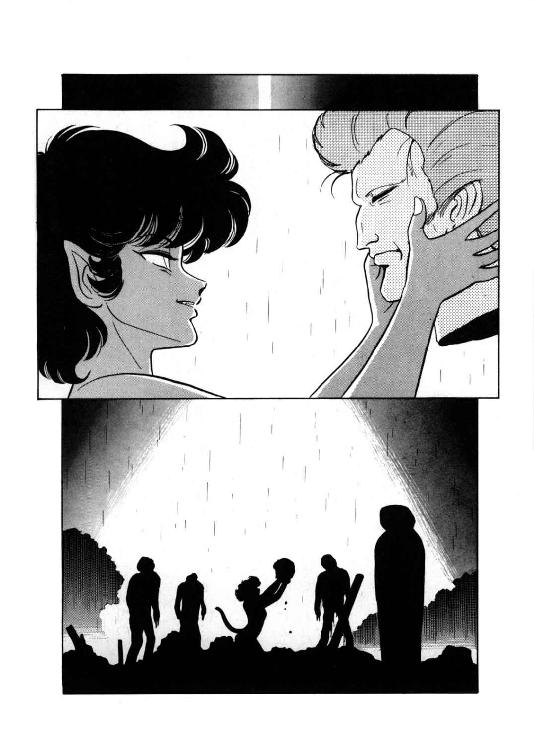
さすがに一瞬息を詰めたが、それは本当に一瞬だけのことで、猫少女はすぐさま作業にかかった。袋の中から魔法針と魔法糸を取り出すと、器用な手つきでグレゴールの頭部を胴体に縫いつける。執行人の技量が良かったためか、斬り口は見事なまでにぴったりと合う。
「さあてと、ここまでは順調、と。でも、正念場はこれから先なのよねーっ」
頭部の縫いつけを終えたチャフは、彼女にしてはひどく深刻な表情で、死体の服を脱がしにかかった。マントをはずし、長衣をはだけると、血の気のうせた上半身が露わになる。猫少女は短刀を取り出して、死体の左胸をざくりと裂いた。血と体液がわずかににじみ出るが、すぐに降りそそぐ雨滴に流される。
「さあってと、頼むわよ、ローラ・パウル。あんたの闇魂で、見事、御主人様を復活させてちょーだいねーっ」
本人の霊が聞いたら憤然としそうなセリフをぬけぬけと言うと、チャフは乳児の頭部ほどもある黒い凝固物を袋から出した。肋骨を外して心臓をほぼ完全に裂き、半ば強引に、死体の胸にローラの脳から創られた闇魂を押し入れる。
「さて、あとは傷口がふさがるのを待てばいいはず......そのはずなんだけどな......そう、そのはずなのよ......はずなんだってばあ......」
死体の胸の大きな裂創をじっと見詰め、猫少女は落ち着かない口調でぶつぶつと呟く。しかし、いくら見詰めていても、何の変化も起こらない。いささか苛立たしげな表情になった猫少女は、とうとう魔法針と魔法糸を再び取り出し、死体の胸の傷を縫い合わせてしまった。しかし、作業が終わっても、やっぱり死体はぴくとも動かない。
「やっぱり、ちょっーとばっかり無理だったのかなあ......」
珍らしくも気弱げに、チャフが呟く。だが次の瞬間、彼女はきっと顔をあげ、誰がいるわけでもない闇に向かって、けたたましくも挑戦的にまくしたて始めた。
「いーえ、大丈夫っ、大丈夫っ、ぜーったい絶対絶対大丈夫っ！ 無理なことなんて、ないないないないないないない、絶対になーいっ！ 闇魂の効力はねーっ、そーんな生やさしい代物じゃないんだからっ。ええ、なんたって闇魂の効力で生きてるこのあたしっ、このあたし本人が言うんだから間違いないっ。グレゴール様は復活するっ。闇魂の効力で復活するのーっ！ するったらするったらするったらするーっ！ 絶対するのーっ！」
「やかましい......静まれ......」
地の底から響くような幽かな声が耳に入り、チャフは反射的にぴたりと口を閉じた。そしてそれからくわっと目を見開いて、御主人様の顔を見おろす。
「グレゴール様っ！」
「どうやら......私は、生きている......ようだな......」
擦れた声で呟くと、グレゴール・クライシスはゆっくりと目を開いた。蒼白な顔の筋肉がひきつり、いくつもの深い皺を刻んでいる。さらに、彼の髪が残らず銀髪になっているのに気づいて、猫少女は小さく息を吞んだ。
「そうか......闇魂の......効力だな......」
呟きながら、グレゴールはいかにも大儀そうに上体を起こす。猫少女は大慌てで横っ飛びに跳びのき、背後から御主人様を支える。長衣を着込み、マントを羽織り、使い魔の手を借りながらも、グレゴールはまっすぐに立ち上がった。右手がゆっくりと上がり、額の傷に触れる。
「封印は......そのままか。能力は使えんが......贅沢は言うまい。死から......それも斬首刑死から......私は戻って......きたのだからな」
「そうそうそうそうっ、そーですよっ！」
猫少女が激しく、けたたましくうなずく。
「何てったってかんてったって、生命あっての人生ですもんねっ！ 死霊術師の能力なら、魔奴屍人に命じて発揮させれば用は足りるしっ。そりゃーもうっ、白髪になろーが皺ができよーが、生きてる者の勝ちっ、勝ちっ、絶対勝ちっ！」
「......白髪になったか。確かに......皺も増えたようだな」
右手の指で顔を撫でながら、グレゴールはわずかながら憮然とした口調で呟いた。チャフが、やや狼狽したような表情になる。
「いえ、でも、あの、その、やっぱりその、いえむしろ、そう、あの風格が増したっていう感じもしますしっ、なかなか渋くて、それはそれでまたそのそのその......」
「まあ良い。......とにかく、私は生きている。......これからも、生きるだろう」
呟いて、グレゴールは周囲に控えている生屍人たちを見回した。
「クラウド、この生屍人どもに私の棺を埋め戻させるのだ。魔道都市の無能魔道士どもには、私は死んだと思わせておいた方が良かろう」
やっと以前の冷たい声に戻って、グレゴールは魔奴屍人に命令する。そして、わずかに口元を歪め、小さくつけ加えた。
「......当分の間はな」
10
「来ましたっ。来ました来ましたっグレゴール様っ！」
蝙蝠猫の姿のチャフが、ばたばたとまい降りながら例によってけたたましく報告する。
「蛮人の戦士ですっ。もの凄くでかい斧剣持って、まっすぐこっちへ向かって来ますっ！」
「また、馬鹿者が来おったか」
冷ややかに呟くと、グレゴールは脇机の上に乗っている黒い小型曲刀を取り上げた。
「戦士では、闇魂の原料にもならん。さっさと『魂喰らい』で片付けてしまえ」
「はーいっはいはいはい、わっかりましたあっ」
空中でくるりと回転したかと思うと、チャフは少女の姿になり、軽々と床に着地する。御主人様から魔剣『魂喰らい』を受け取って、猫少女はにまーっと邪悪な笑いをうかべた。
「ふーっふっふっふっふっ、久しぶりに腕力自慢の戦士が殺せるぞおっ。大男のごっつい戦士が、正々堂々の決闘で手も足もでないまんま小娘になぶり殺される。その絶命する間際の口惜しそーな表情が、実に笑いもんなのよねーっ。きゃはははははははっ、今日の蛮人戦士はどーんな表情して口惜しがるかしらっ！ 尊大そーな奴だけに、楽しみっ、楽しみっ、た・の・し・み・ねーっ！ きゃはははっ、きゃはははっ、きゃーはははははははははははっ！」
「騒いどらんで、さっさと行かんか」
白く薄い眉をわずかに寄せてグレゴールがそう言った時、外の方から雷鳴のような喚き声が轟いてきた。
「コラアーッ！ 誰カ居ルカーッ、居ルナラ出テコーイッ！ 俺ハざぐ・ろびす、南方最強ノ戦士ニシテ冒険者、幾多ノ怪物ヲ斃シテキタ勇者ダッ！ コノ地ニ邪悪ナ魔道士、人ノ精ヲ喰ラウ妖怪ガ棲ムト聞キ、コノ腕デ成敗シテクレントヤッテ来タノダァッ！ 誰カ居ルナラ、サッサト出テコンカアーッ！」
「あららららっ、あの蛮人、もうそこまできちゃったのっ!?」
ちょっと狼狽気味に呟くと、猫少女は研究室から跳び出しかかる。だが、戸口の所でくるっと振りかえり、御主人様ににやりと笑いかけた。
「グレゴール様、もしよろしかったら、あたしの闘いっぷり、御覧になりませんかあ？ どーせすぐ外でやらかすんだし、戦士がひきつりまくってひっくり返るの、なかなか面白い晒し物ですよっ！」
きゃんきゃらきゃんと言うが早いか、猫少女は身をひるがえして外へ跳び出す。グレゴールはちらりと手元の書物に目をおとしたが、小さく眉をしかめると、軽く頭を振って立ち上がり、ゆっくりと研究室を出た。
彼が魔道都市を離れてから、そろそろ三十年が過ぎようとしている。あれから彼は使い魔と魔奴屍人を連れて南方へ下り、沿海都市国家群から内陸へ入った山の中に小さな研究室兼隠れ家を構えていた。以来、彼は研究室からほとんど外に出ず、魔道都市にいた頃よりも更に熱心に魔道の研究にいそしんでいる。
とはいえ、南方には奥義書どころか、一般的な魔道書すらろくに存在しない。自然、グレゴールの研究は闇魂の応用法を中心とするものになった。その産物の一つが、かすり傷からでも敵の生命力を根こそぎ奪う魔剣『魂喰らい』である。グレゴールは魔剣を、彼を討とうとやって来た、魔道を学んだ冒険者の脳から造った。
何しろ主人は研究室に籠っているが、従者のチャフとクラウドは、割合頻繁に沿海都市国家群や更に南方の都市に出没している。グレゴールに命じられて薬の原料を調達に行ったり、魔奴屍人の魔力補充のため遊女を吸いに行ったり、単なる気晴らしだったり、出没の動機はいろいろだが、必ず出没のたびごとに数人の犠牲者を出さずには戻らない。そのため、災厄の魔道士グレゴールの名は一部で有名になっており、冒険者の目標の一つになっている。もちろん、実際にグレゴール主従に挑んだ不幸な冒険者たちは全員返り討ちにあい、一部の者は研究材料にされてしまった。
「とは言え、南方では研究もはかどらん。冒険者をあしらうのも、はや飽いた」
つまらぬ、と珍らしくも少々愚痴っぽく呟きながら、グレゴール・クライシスは隠れ家の玄関扉を開ける。と、そのとたん凄まじいばかりの怒鳴り声が、まともに彼に叩きつけられた。
「貴様ガ邪悪ナ魔道士カアッ！ コンナ小娘ヲ差シ向ケルトハ、サテハ貴様、コノざぐ・ろびすヲ馬鹿ニシテオルナアッ！ フザケタ真似ヲスルト容赦センゾッ！ 小娘ヲ後退サセテ、自分デ俺ト勝負ヲセンカアッ！」
「......これは、これは......」
グレゴールの目が、ほんのわずかではあるが、驚いたかのように見開かれる。巨漢の蛮人戦士はぶんぶんぶんぶんと斧剣を振り回して猫少女を威嚇牽制しながら、呼吸ひとつ乱すことなく彼を怒鳴りつけたのだ。馬鹿力と言ってしまえばそれまでだが、とにかく凄まじい体力には違いない。
「しかも、チャフが攻撃を封じられてしまうとなると、これは単なる馬鹿力戦士ではないようだな......」
冷たい声で呟いたグレゴールは、いきなりそこで音量を上げて使い魔に命令する。
「チャフよ、攻撃するのだ」
「えっ!? えっえっえっ!?」
『魂喰らい』を手に、緊張した表情で敵を見すえていた猫少女は仰天したように振りかえった。
「えっ、でも、あの、蛮人、思ったより隙がなくって、その......」
「攻撃するのだ。三度は言わんぞ」
グレゴールの口調にはまさしく問答無用の冷酷さがありありと感じられ、さすがのチャフもぶるっと身を震わせ口を閉じる。そして『魂喰らい』を構え直すと、意を決したように蛮人戦士の手元に跳び込んだ。
「はっ、はっ、ははっ、はあっ！」
「ムンッ、ムンッ、ムオオッ、ムンッ！」
猫少女が鋭く突き出す黒い曲刀の切先を、蛮人は見事に防御する。かすり傷でも致命傷になると知っているはずはないのだが、重い斧剣を巧みに使い、敵の攻撃をかすらせもしない。その激しい攻防の最中に、蛮人はまたも大声で怒鳴った。
「小娘、後退セイッ！ 魔道士、勝負ダアッ！ 余リニモナメタ真似ヲスルナラ、コノ小娘、本気デ叩ッ斬ルガ、ソレデモ良イノカァッ！」
げげっ、蛮人、今まで本気じゃなかったとでも言うのっ、と猫少女は内心たらーりと冷汗をたらす。と、そこへ、その冷汗をも凍らせるような調子の、御主人様の声が聞こえた。
「チャフよ。決着をつけるのだ」
「はいっ！」
どーせ四の五の言っても始まらない。チャフはせいぜい威勢良く返事をすると、右腕をいっぱいに正面に伸ばし、『魂喰らい』の切先をぴたりと強敵に向けた。そしてそのまま、まったく無雑作に突っ込んでゆく。蛮人戦士の陽焼けした顔が、激怒の表情にぐわっと変わる。
「捨テ身ダトッ！ ナメルナアッ！」
「ぎゃあ――っ！」
斧剣の刃部分がまともに右肩から胸を裂き、猫少女は当然ながら凄まじい悲鳴をあげた。だが同時に、斬られた右腕を左手でつかみ、ちょうど薙刀のように先端の刃を相手に叩きつける。戦士はのけ反ってかわそうとしたが、切先がわずかに頰を裂いた。
「貴様アッ、イッタイ何ノ真似......ムムウッ!?」
その瞬間、ザグ・ロビスの鋭い目が驚愕でまん丸くなる。確かに斬りとばしたはずの敵の右腕が、まるで何の傷も受けていないかのように、きちんと肩に着いているではないかっ！
「その少女に武器は効かん。斬ったところですぐつながる。残念だったな、蛮人戦士よ」
「ナ......何ノッ、勝負ハコレカラダッ！」
グレゴールの冷ややかな声に猛然と怒鳴り返し、蛮人戦士は再び斧剣を構え直した。妖怪めっと呟き、猫少女をにらみすえる。と、その巨岩のような身体が、不意にぐらりと揺れた。
「ナ、ナ......何ダッ、コノ脱力感ハッ......」
「ほう、強いな。まだ口がきけるか」
グレゴールが冷ややかな口調で呟く。続いてチャフが、けたたましく嘲笑しだす。
「きゃーはははっ、きゃーはははっ、ざーんねーんでーしたわねー戦士どのおー。『魂喰らい』で切られたら、どーんな浅手でも、致命傷っ、致命傷っ、おしまいなーのーよっ！ きゃーはっはっはっはっはっはっ、どーですう、たかが小娘に敗れ去った御感想は？ やっぱり口惜しい？ 悲惨と思う？ そーよねーそーよねーそーでしょーそーでしょー、悲惨よねーっ、ほーんと悲惨ねーっ、きゃははははははははははっ、みじめっ、みじめっ、みーじーめーっ！ 悲惨な最期ーっ！ きゃーは、きゃーは、きゃーはははははははははははははははっ！」
「静まれ」
ぼそりと呟いて使い魔を制し、グレゴールは今や蒼白になっている蛮人戦士を見やった。左手で傷ついた頰をおさえ、生命力が噴き出るのを止めようとしているが、むろん、何の役にも立ちはしない。
「グ......グヌヌッ......オノレッ......」
「戦士よ、もはやこれまでだ。いかにお主が超一流の力と技を誇ろうとも、偉大なる魔道の前には抗う手段はない」
グレゴールは、例によって冷然とした声で言い放つ。
「今のお主を救える手段はただ一つ、お主を傷つけた魔道と同質の魔道の力、すなわち、闇魂を受け入れる以外、ない」
「だーく......そうるダトオッ......」
とうとうがくりと膝をつき、戦士は苦しげに呻いた。それでも目は、憑かれたように魔道士を見すえている。その視線を平然として受け止あ、グレゴールは軽くうなずいた。
「さよう。この少女も闇魂を受け入れておるからこそ、お主の斬撃をくらっても死なんのだ。また闇魂は不老不死をももたらす。受け入れた者は、いかなる形の死にも屈することがない」
むしろ淡々とした口調で、グレゴールは信じられないほど魅力的な話をする。ザグ・ロビスの表情が歪み、視線が揺れだす。
「ナゼ......俺ニ......闇魂ヲ......？」
「このまま殺すには惜しい戦士だ、と思っただけのことだ」
グレゴールの声が、やや突き放すような感じになった。
「お主が闇魂を受け入れれば、真に比類なき超戦士になろう。しかし、望まぬなら無理にとは言わん」
言い捨てて、グレゴールは背を向けかかる。そのとたん、戦士が血を吐かんばかりの叫びをあげた。
「待テエッ！......イヤ、待ッテクレッ......頼ム......」
「ふむ」
表情を動かさずにグレゴールが振りかえり、命令通り沈黙していた猫少女がにまあっと笑う。この時から、グレゴール・クライシスの一党は四人になった。
そして更に七十年後、この怖るべき四人は魔道都市を震憾させることになる。
第三章 轟炎大激闘！
１
「いやーはっはっはっはっはっはっ、いいお天気ですねー」
雨こそ降っていないがどんよりと曇った空を見上げ、魔道士スミス・チョーサーはにこやかに笑いはじめた。
「いやー、どうも、本当にいいお天気で。こんないいお天気は久しぶりですねー、はっはっはっはっ、いやー実にいいお天気ですよ、はっはっはっはっはっはっはっはっ、うん、実にいい、いいですねー、はっはっはっはっはっはっはっはっはっはっはっはっはっ」
「とても正気にゃ見えないわね」
縞兎娘がまるで身もフタもない感想を述べる。確かに、と思わないでもないが、ルナはとにかく小声で少女を叱りつけた。
「何言ってんのよっ。チョーサーさんは戦闘の時に雨にならないように、一所懸命に魔力を使ってるんだから。茶化すなんてもっての他なのっ！」
だいたい、彼に雨雲を払う魔力を使ってもらいたいと頼んだのは、当のルナである。生屍人を主力とするグレゴール軍団に対して、彼女は火攻めを使う作戦だが、その時雨に降られたらどーにもならない。そこで趣味の武具屋の店主で、雨雲を散らす魔道士スミス・チョーサーの出番となったわけだが、依頼主にしてもまさか彼があーゆーふーに魔力を使うとは思ってもいなかった。
「はっはっはっはっはっ、いやー、実にいいお天気ですねー、まったく。いや、はっはっはっ、いいお天気というのは、実にいいですねー、はっはっはっはっはっはっはっ」
一人で曇天を見上げて、魔道士は本当に気持ち良さそーに笑っている。本人の説明では、これをやっているうちに、天候の方がその気になって晴れてしまうのだと言うのだが、はたして本気にしていーんだろうか。
と、その時、空を見上げていた烏猫が叫んだ。
「あっ！ 雲が晴れてくっ！」
「えっ？ あ、本当だわ......」
確かに、魔道士の笑いにその気になったのかそれとも呆れ果てたのか、とにかく厚く垂れ込めていた雨雲は見る見る薄れ、切れ目から明るい陽光が射してくる。
「いやー、どーもどーもどーも、はっはっはっはっはっはっはっ。とりあえず、何とかなったよーですねー」
相変わらずにこにこ笑いながら、魔道士がルナの方へ戻ってきた。彼女はぺこんと頭を下げる。
「御苦労様でした、ミスター・チョーサー。心から感謝いたします」
「いやー、はっはっはっはっ、お役に立ててよかったよかった。武具は実用にならないのが看板ですけど、魔道能力の方はそういうつもりじゃないもので、いや、はっはっはっはっはっ。これでまあ、五日ぐらいはいいお天気が続くでしょう」
そう言って、若い魔道士は楽しそうに声を出して笑う。
「はっはっはっはっ、いや実はですね、私、いささか不安だったんですよ。私の魔力というのが、あんまり連続して使うと、時々裏目に出ることがあるんですね。はっはっはっはっはっはっはっ。いやー、雲に向かって笑っていると、『えーかげんにせーいっ！』という声がして轟雨になってしまう事が、いや、冗談ではなしに、ありまして。そうなったらどうしようかと、いやーはっはっはっはっはっはっはっはっ、緊張しました」
「はあ......」
とーてー緊張してるとは見えなかったけどなー、とルナは思わずチョーサーの屈託なさそーな笑顔をまじまじと見詰めた。と、その背後から雷鳴のような声がかかる。
「おいっ、小娘っ、天気は良くなったようだが、まだ何かあるのかっ？」
「えっ!? いえ、何も......」
慌てて振りかえったとたん、彼女は無謀戦士のいささか腹立たしげなしかめっ面と、まともに目を合わせてしまった。
「それならさっさと降りてこい。もたもたしとると生屍人が城壁まで来てしまうぞ」
不機嫌そうに言うと、巨漢は物見台から会議室へ降りてゆく。ルナは急いで彼の後を追い、烏猫と少女が彼女の脇をとことこと走る。そして最後尾にスミス・チョーサーが悠然と続く。物見台から降りる寸前に彼はゆっくりと振りかえり、雲ひとつなくなった晴天を見上げて満足そうににっこりと笑った。
「いやー、本当にいいお天気になりましたねー。よかった、よかった、はっはっはっはっはっはっはっはっ、いやー、はっはっはっはっはっはっはっ、もひとつおまけに、はっはっはのはっ」
「......やっぱ正気じゃないわねー」
階段の途中で少女が小さく呟き、とたんにルナが振り返ってにらみつける。だが幸い、本人の耳には入らなかったらしい。
ルナが会議室に降りてゆくと同時に、長身の青年が声をかけた。バト・ロビスと並んで防衛副司令官に任じられた、カルバドク卿ミル・ユードである。
「司令官、天気のほうは？」
「ばっちりよ。ミスター・チョーサーが見事にやってくれたわ」
そう言いながら、ルナは円卓についた。少女と烏猫は大人しく、彼女の後方に控える。
「そうすると、作戦の基本は、火攻だね」
「そうね。それと、できるだけ遠距離攻撃でけりをつける事ね。生屍人相手に接近戦するほど馬鹿な話、ないもの」
そうでしょ、無謀戦士、とルナは副司令官に目を向けた。あんたは接近戦したいんだろーけれど今回は厳禁にしてもらいたい、と彼女が言いかかるより早く、バト・ロビスの方が口を開いた。
「そうなると、主力は火箭弓兵、それに火炎呪文の使える魔道士だな。一応、全員に松明を持たせておいた方が良かろう」
「は？......あ、そ、そうね」
無謀戦士がいきなり、やたら理にかなった意見を言いだしたので、ルナは一瞬目を白黒させる。青年が小さく苦笑したが、巨漢はかまわず言葉を継ぐ。
「火炎呪文以外にも、使える魔道はあるはずだ。例のお調子者の飛行竜、それに、先刻ちらりと見たのだが、彫像戦士を使う魔道士がいるようだな。遠距離攻撃で討ち洩らした生屍人の相手をさせるのに、ちょうど良かろう。それに、万一、生屍人に肉薄された場合に備え、抗毒薬の用意も忘れてはならんぞ」
「は......はい......」
何なのよ、この有能な指揮官っぷりは、とルナは内心完全にあきれかえった。あたしの出る必要、まるでないじゃない。
と、バト・ロビスはいささかあっけにとられた表情のルナを、迫力にあふれた視線でぐいと見すえた。
「そして、何より忘れてはならんのは、だ。敵は生屍人だけではない、という事だ。わかっとるかあっ！」
「は、はいっ！」
ルナは思わず、背筋をぴっと伸ばして返事をする。こりゃ気迫が違うわ、と背後の少女が、苦笑まじりに小さく呟いた。
２
「ギルバート、出番よっ！」
女戦士の鋭い声にうながされ、魔道都市最強の召喚術師、と自称することを黙認されている魔道士ギルバート・エゼンは、ふっ、と気取った笑いをうかべた。
「まかせておきたまえ、レイピア・ロナ。未公認とはいえ第二等中級、評議員級の高等術者であるこの私が、たかが生屍人を仕損じるわけもなかろう。ふっふっふっふっ、はっはっはっ、はっ、わーははははははははは」
「笑ってる場合じゃないでしょーが、この大馬鹿っ」
レイピアが例によって尖った声で、能天気魔道士を叱りつける。
「油断するんじゃないわよっ！ 獣人谷でごろた石にされた失敗、まさか忘れちゃいないとは思うけどっ？」
「忘れる、と言っても石化されてる間は記憶がないのだよ、残念ながら」
気の効いた冗談を言ったつもりで、馬鹿はふっと笑って前髪を払う。レイピアの柳眉が、たちまちきりきりきりきりっと逆立った。
「ろくでもない呆言吐かしてないで、さっさと飛行竜を召喚したらどーなのっ！ それだけがあんたの能力なんだからっ！」
「わ、わかったよ、今、呪文唱えるから、ちょっと待ってくれ」
相手の見幕にたじたじっとなった魔道士に、女戦士は更に言葉を叩きつける。
「間違えるんじゃないわよっ！ 黄金飛行竜じゃない、普通の飛行竜を大量に召喚するんだからねっ！ 北王国で使った、群雲召喚よっ！ わかってんのっ！」
「わかってる、わかってる、大丈夫だったら。とにかく静かにしてくれよ」
なおも鋭い目でにらみつける女戦士を不安気にちらちら見ながら、ギルバート・エゼンは呪文を唱えはじめた。その姿を見やって、ミル・ユードは小さく苦笑する。
「ギルバートも、余計な事言うから......」
それに、彼女もだいぶ気が猛ってるな、と彼は内心で続けた。しかしまあ、レイピアが怒るのも当然で、ギルバートがどじを踏もうものなら、彼ら全員の生命はもちろん、魔道都市自体が危うい。
攻撃側が兵力を三方向に分けたため、防御側も三方向をそれぞれ守らざるを得なくなっている。西側をバト・ロビス、東側をルナ、そして大門のある南側を彼、ミル・ユードが担当しているのだが、兵員の絶対数がどうにも足りない。
そこで、南側ではギルバートの飛行竜に全面的に頼る作戦にして、火箭弓兵も火炎呪文の魔道士も一人も配置しない状況になった。約三千体の生屍人に、守備が三人、凄まじいといえば凄まじい。
「さて、この大勝負、どうなるか......」
青年がいささか大貴族らしからぬ、悪戯っぽい表情で呟いた。彼の視線の先で正面の森が不気味にがさがさと揺れ、数体の生屍人がふらふらとさまよい出る。来るな、とミル・ユードが思った瞬間、ギルバート・エゼンの滅多に聞けない気合のはいった叫びがあがった。
「出でよ、飛行竜！ 群雲の如く！」
「やったあっ！」
空間が裂け、まさに群雲の如く無数の飛行竜が躍り出るのを見て、レイピアは思わず歓声をあげる。ギルバートは例によって、ふっと気障ったらしく笑ったが、この時ばかりはその笑いが頼もしく見えてしまう。我ながら現金なもんね、とレイピアは秘かに苦笑した。
「ゆけっ、我が忠実なる下僕たちよ。生屍人どもを一体残らず、火炎弾で消しとばせっ！」
召喚者の命令一下、飛行竜軍団は今しも森から姿を見せた生屍人の大群めがけ急降下雷撃を開始する。無数の火炎弾が降りそそぎ、直撃をくらった生屍人はぐちゃりと潰れ、悪臭をあげて燃えあがる。
しかし、何しろ生屍人は数が多い。飛行竜の攻撃をまぬがれた連中が、のそのそと坂を登り、大門に迫る。そこへすかさず、魔道士が叫ぶ。
「反復攻撃っ！」
急降下から上昇に移っていた飛行竜が、なめらかな曲線を描いて、再度生屍人に襲いかかる。何しろ飛行竜はまるっきり損害を受けていないのだから、これは勝負にならない。三度、四度と反復して攻撃がかけられ、三千体の生屍人は一体たりとも大門にたどり着くことなく、完全に壊滅した。
「飛行竜遣いか。厄介な敵がおったな」
最後の生屍人が潰れて燃えあがるのを森の中から見やって、グレゴール・クライシスはほとんど感情のない声で呟く。
「多少危険を冒してでも、排除しなくてはならぬかも知れぬ。一応、考えておくか」
そう言いながら、グレゴールは大門の上に見える小さな人影を、傍の魔奴屍人に指し示す。
「記憶せよ、クラウド。お前のもう一つの能力を使うことになるやも知れぬ」
一方、敵の大将が自分に目をつけているなどとは知らぬが仏、ギルバートはこれ以上格好のつけよーがないほど格好をつけて、しきりに女戦士に話しかけていた。
「どうだね、私の飛行竜軍団の破壊力は。あれの急降下雷撃に対抗できる存在は、この地上にそう多くはないと思うよ。まあ、生屍人などでは、まるっきり相手にとって不足だがね。ふっふっふっふっ」
ふっ、とお得意の笑いをうかべると、魔道士は左手でさっと前髪を払う。長年の研究によれば、この時顔をわずかに傾け押さえ気味の微笑をうかべると、最もかっこいー表情ができあがるはずだ。
「実際、反撃もしない、動作も鈍い、火炎に弱いと三拍子そろった生屍人が相手ではな。我が飛行竜にとっては、遊びにすらならないよ。願わくば、次はもう少し手応えのある敵と出合いたいものだね。ふっふっふっふっふっ、はっはっはっはっはっはっ、わーははははははははははははははは」
おやおや大した威勢だな、とミル・ユードは高笑いする魔道士を見やって苦笑をうかべた。二体の魔獣にそれぞれこてんぴしゃんにされた過去は、すでに忘却の彼方らしい。
と、得意気に笑うギルバートを黙ってじーっと見ていたレイピアが、奇妙に穏やかな声を出した。
「ギルバート、いい事を教えてあげましょうか」
「ん、何かね？」
さすがに笑いを止めて彼女を見やった男に向かって、女戦士はまじめくさった表情で言葉を続ける。
「あなた、喋るのと笑うの止めてごらんなさい。知らない相手には、好男子で通るわ」
「な、何だそれ？」
ほめられたのか、けなされたのか、一瞬判断がつかず、ギルバートは世にも奇妙な表情で立ちすくんだ。その脇をするりと抜け、レイピアはミル・ユードの傍に寄る。
「案外、あっさり済みましたね」
「作戦が図にあたった時は、こんなものさ」
あたらなかったら大惨事だったな、と思いながら青年は答えた。
「それにまだ、油断はならない。叔父上が言ってた通り、敵は生屍人だけじゃないからな」
「はい。彼にそう言っておきます」
そう言って、レイピアはぼーっとしている魔道士の方へと身をひるがえす。ミル・ユードは、再び正面へと視線を戻して呟いた。
「東と西は、どうなってるかな。......救援に行かなきゃならないような苦戦になってなければいいけど」
気にならないわけじゃないが、増援要請でもない限り、自分の部署を離れるわけにはいかない。とりあえずは完勝したが、下手に南から防備を動かして、生屍人を再召喚でもされたら、あっさり突破される。それじゃ完全な愚劣指揮官だ。
「......まあ、魔獣戦士に無謀戦士だ。たいていの状況なら切り抜けてくれるさ」
青年が呟いた時、風を斬り裂くような鋭い高音が、東の方から聞こえた。
３
「火箭弓兵、用意っ！」
雷鳴のような声で叫ぶと、バト・ロビスは魔道都市にあった一番でかい大弓をぎりぎりっと引き絞った。
「照準よりも発射数だっ。適当な距離で、どんどん射ていっ！」
怒鳴りながら、巨漢はばびゅーんと火箭をぶっ放す。矢は見事に生屍人の一体に命中して炎の塊に変えたが、射手は目いっぱい渋い表情になった。彼の怪力に耐えられず、発射と同時に弓がへし折れてしまったのである。
「うーぬ、何という軟弱な弓だ。南方の剛弓とは比較にならん」
しかし、戦場で文句を言ったところで始まらない。バト・ロビスはやむを得ず弓を放り捨て、斧剣を引き抜いて喚きだす。
「射てーっ、射て射てーっ！ 生屍人どもを城壁に近づけるなあーっ！」
「あ、あのー、それはいささか無理ではないかと、あの、自分は思うのでありますが......」
短弓に火箭をつがえながら、獣人戦士のラドリ・ティロがひきつった声を出した。その顔をじろりと見て、無謀戦士は凄味の凝固物のような声で囁く。
「わかっとるわい。無駄口叩かず、射て射てっ！」
「は、はっ！」
ティロが反射的に敬礼し、つがえた火箭がぽとりと落ちる。慌てて拾う部下を、巨漢は苦い顔で見やった。
もちろん、ティロに言われなくても、火箭弓兵で生屍人を阻止できるとはバト・ロビスだって思っていない。何といっても三千余体の生屍人に対して、弓兵は百人に満たないのだ。魔道都市全域をあたっても、八十余しか弓が集まらなかったのだから仕方ないが、とにかくこれじゃどーにもならない。急造弓兵の獣人戦士や下級工人は、案外びしびしと火箭を当てているが、しょせん限度というものがある。恐怖を知らない生屍人たちは、炎に焼かれる仲間を避けながら、のったのったと城壁めがけて迫り来る。
と、今まで沈黙を守っていた長衣にマントの魔道士たちが、弓兵の間にすっと進み出た。その中の一人が、ばさりとマントをはね上げる。魔道都市最強の火炎呪文魔道士、アルバート・エゼン評議員は、よく響く低音で叫んだ。
「火炎隕石弾！」
彼の一言の呪文に応じて、空中に巨大な火球が出現したかと思うと、最も生屍人の密集している場所に轟音とともに落下する。続いて他の魔道士たちが火炎呪文を生屍人どもに叩きつけてゆく。たちまち城壁の外側は火の海と化す。
その時、評議員ががくりと膝をついた。魔力を使う前とはうって変わって、顔色が死人のように蒼白になっている。片手をついてかろうじて立ち上がると、背後から野太い声がかかった。
「手を貸そうか、評議員」
「いや、大丈夫だ」
蒼白な顔に微笑らしき表情をうかべ、魔道士は城壁の内側寄りにゆっくりと退がる。この気取り屋が、と戦士は腹の中で呟いた。
「見事な魔道だったな」
「一発勝負だ。これで、五日は半死半生になる」
苦しげな笑みをうかべ、アルバートは恋敵の巨体を見すえる。
「魔道の炎は、威力は大きいが後が続かん。今の攻撃で魔道士の半分は限界、三撃目が出せる者は十人とおるまい。戦闘は、これからだぞ」
「言われんでも、わかっとる」
ぶすっとした口調で言うと、バト・ロビスは魔道士に背を向けた。そのとたん、アルバートは力尽きたように座りこむ。まったくどこまでも格好をつけおって、と巨漢はもう一度腹の中で呟く。
魔道士の火炎攻撃の後、城壁の外には五百体ほどの生屍人が残っていた。敵の八割強を斃したわけだが、こちらの魔道士も全員へたり込んでしまい、回復に少なくとも一日はかかる。弓兵が残り少なくなった火箭を射かけるが、目標が減ったせいか、近距離なのに命中しない。
「......狙って命中させていたわけでは、ないからな」
指揮官は、わずかに苦笑いを混じえて呟いた。下級工人たちはもちろん、獣人谷から急いで呼び寄せた獣人戦士たちも、弓兵としての技能は皆無に等しい。
これは好む好まざるにかかわらず、松明持って接近戦しかないか、と城壁に手をかけ始めた生屍人を見おろし、バト・ロビスは渋い表情になった。と、そこへ、まるっきり場違いとしか思えない、能天気な声がかかる。
「きゃい きゃい、みーんなやられちゃってますう、すっごーい 」
」
「ばっかっねーっ、魔力の使いすぎで伸びてるだっけじゃない。さ、早く都市側に降ろしたげなくちゃ」
「あ、えー男めっけっ！ あたし、この男性運んじゃうっ」
きゃいきゃいと騒ぎたてる女の子たちに、さしもの無謀戦士も目が点になった。だが、彼女たちに続いて、彫像戦士を従えた魔道士が上がってくると、その目がくわっと開かれる。
「来たか、ゴーレム遣い！ 待ちかねたぞ！」
「鋼鉄人が一体、石人が二体、陶人が五体、これで目いっぱいです」
あんまりまともに巨漢を見ないようにしながら、魔道士は早口で言った。何しろ、この戦士とほとんどそっくりな狂戦士に殺されかかったのが、つい昨日のことだ。逃げ出したくなる足を無理矢理おさえ、ネッドは彫像戦士たちに命じる。
「松明に火を灯せっ。城壁を降りて、生屍人を焼き討つのだっ！」
「きゃー、導師さま、決まってるうーっ！」
へばった魔道士を運びながら、女弟子の一人が囃したてた。人の気も知らんで、と呟いたものの、導師だって悪い気持はしない。
彫像戦士たちは命令に従って、剣を松明に持ち換えると、城壁を外側へと降りて行った。鋼鉄戦士と石戦士は、降りるというより滑り落ちるように生屍人のまっただ中へ飛びこんでゆくが、衝撃に弱い陶戦士はそうもいかない。人間並みに城壁の石に手足をかけて、そろそろと降りてゆく。こうして、三対五百、陶戦士が到着してからは八対五百の戦闘が始まった。
とはいっても、この戦闘は小人数の方に絶対の有利さがある。生屍人の屍毒は彫像戦士にはまったく効かないが、彫像戦士の松明は確実に生屍人を焼き、その人数を減らしてゆく。しかも動作は格段に彫像戦士の方が早く、頭上からは、今いち狙いが不正確とはいえ、生屍人だけに効果のある火箭が飛んでくる。こりゃ、勝てない方がどうかしてるな、とマリオン・ネッドは彫像戦士の戦いっぷりを見ながら呟いた。と、その背後から、落ち着いた声がかかる。
「ネッド評議員、人手が要ると聞いたもので、手伝いに来ましたよ」
「やあ、マーリン君か」
ネッドは振りかえり、上司の息子に笑顔を見せた。彼は、仲間の若手魔道士たち数人を伴っている。戦闘に直接役立つ魔力は持っていないが、消耗した魔道士を運ぶぐらいの事ならやってくれるだろう。
「それじゃあ、うちの女弟子たちを手伝ってやってくれないか。へばってる火炎呪文の魔道士たちを、都市側に降ろしてほしいんだ」
「わかりました。で、戦況はどうです？」
若々しい顔に好奇心を露わにして、マーリンは評議員に訊ねた。同時に、彼にくっついてきた若手魔道士も、わっと一斉に口を開く。
「ねーねーねー、ミル・ユード様の部署はここじゃないの？ え、違う？ あらららら、こりゃどじっちゃったわ。でもまあとりあえず、ここの戦況どーなってますかー？」
「こーら、ギネヴィアー、お前は我が妹ながら軽はずみでいかんなー。誰がどこの部署についているかなどという情報は、きちんと確認しておかなくてはいかんぞー。だいたい、このわーたしに訊ねれば済む内容ではないかー。何しろわーたしは、魔道都市で最高の情報中継業者なのだーからな。わーは、わーは、わーははははははははははは。ところで戦況は、どんな具合ですかな？」
「いやー、はっはっはっはっはっはっ、いいお天気になりましたねー。はっはっはっはっ、いいお天気は、いいですねー。はっはっはっはっはっはっはっはっはっはっはっ、ところで戦況はいかがですか？」
な、何なんだこいつらは、とおもいながらも天性ひとの良いマリオン・ネッドは戦況の説明を始めた。
「火炎呪文の攻撃で、生屍人は九割がた消滅したようだね。残った奴らを、私の彫像戦士と火箭弓兵が始末しているところだよ。まあ、ほとんど勝負はついた、と言っていいんじゃないかな」
「......いや、どうやら勝負はこれからのようだぞ」
正面をにらんでいたバト・ロビスが、押し殺したような声で呟く。
「ゴーレム遣いよ、お主はあれに見覚えがあるだろう」
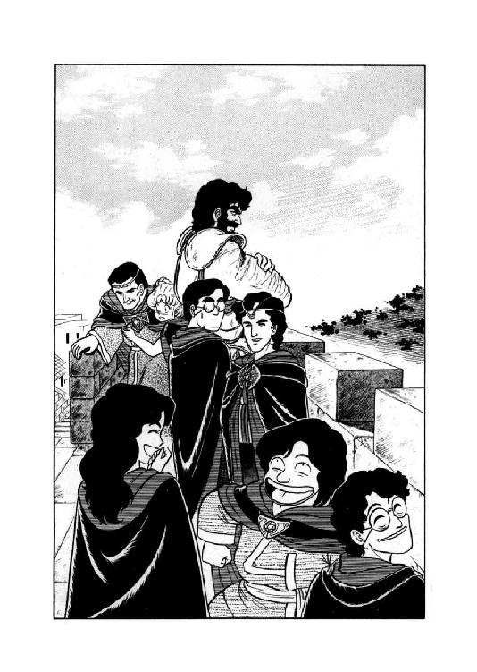
「あれ？」
いったい何だ、と魔道士はけげんそうな表情で振りかえる。そして、無謀戦士がにらみすえている対象を視界に入れた瞬間、彼の全身の血が凍りつく。
「で......でた......」
黒い鎧、巨大な斧剣、そして見違えようのない、あの巨体。ほとんど悪夢の産物としか思えない。ゆっくりと森から歩み出て来る人影を見やって、マリオン・ネッドは今にも卒倒しそうな声で呻いた。
「でた......でてきた......狂戦士......」
４
「あれが......あれが噂の狂戦士か......」
屍肉が焼ける異臭がたちこめる戦場を、ゆっくりと城壁へと進んで来る巨漢戦士を見やって、マーリン・ブレイキー青年が呻くような声を出した。
「凄いな......城壁の上から見てるだけで、背筋が寒くなる」
「......私は昨日、狂戦士に殺されかけたんだ」
評議員が、がたがたと震えながら呟く。
「冗談じゃない......二日続けて狂戦士にでくわすなんて......災難なんて生やさしい事態じゃないぞ......」
「こら、しっかりせんか」
バト・ロビスが、わずかに眉を寄せ、魔道士に苦々しげな声をかける。
「誰もお主に、あれと闘えとは言っとらん。それより、彫像どもをきちんと操縦してやれ。闘うにしろ、逃げるにしろ、作戦があるだろうが」
「そ......そうですね......」
かろうじてうなずくと、ネッドは彫像戦士を後退させた。が、狂戦士は彫像戦士には目もくれない。全身から死と破壊の気配を放ちながら、ずん、ずん、ずん、と城壁に近づいて来る。弓兵たちも、完全に気押されてしまって、ろくすっぽ火箭を射てない。
「こ、このまま、狂戦士が登ってきたら............お、恐ろしい惨事になるんじゃないでしょうか......」
「いや、登っては来るまい」
ひきつりまくって口走る魔道士に、バト・ロビスは腕組みをしたまま答える。
「登ってくれば、そこに隙ができる。防衛側にすれば攻撃の好機だが、奴はそこまで甘くはなかろう。俺が、もし奴なら......」
無謀戦士がそこまで言った時、ぐわーんと大きな破壊音がして、城壁が小刻みにびりびり揺れた。城壁際まで来た狂戦士が、怪力まかせに斧剣を叩きつけたらしい。バト・ロビスの両眼がくわっと見開かれる。
「やはり、城壁をぶち破りに来たか。ならば、もはや待つには及ばぬな」
「そ、そんな、でたらめな......」
いくら魔法障壁がかかっていないとは言え、都市の城壁を単身で破ろうなんて、もはや非常識を通り越してる、とネッドは呆れ果てて呟いた。だが、蛮人戦士相手に常識の非常識のと言ったところで始まらない。やる、と言ったら彼らはやってしまう。それが証拠に、また城壁がどかん、ばりばりと揺れてるじゃありませんか。狂戦士は本気で城壁をぶち破る気でいる。そして、放っておけば、本当に突破してしまうだろう。
「ど、どうするんです、これ......？」
「他に手段はない。俺が闘う」
低い声で呟き、無謀戦士はずんばらりんと斧剣を抜いた。続いて、弓兵をつとめている獣人戦士たちが、大将に続こうと弓を置いて剣を抜き、あるいは獣変身にかかる。だが、そのとたん、バト・ロビスが有無を言わさぬ口調で、彼らに命じた。
「接近戦をするのは、俺一人だ。お主らは火箭で援護せい。よいなっ！」
「し、しかしですのお......」
何やら抗弁しかかった甲猪男を、無謀戦士がじろりとにらみつける。
「獣人戦士が狂戦士の前に出てみろ、一撃で斬殺されるだけだ。火箭でも射っとった方が、まだ助太刀になるわい」
言い捨てて、巨漢は手下たちに背を向けると、ずいっと前に出た。そのとたん、また城壁が破壊音とともに震動する。
「よいかっ！ 絶対に来るでないぞおっ！」
ぐおおおおおおおっと咆哮をあげ、愛用の斧剣を振り回し、無謀戦士は猛然と城壁を馳け降りてゆく。その背を見送ったギネヴィア・オフィーリア・コンスタンツェ・ポーランが思わずぐっと拳を握りしめ、唸った。
「こ、この戦士、かあっこいいーっ！」
「おや、ギネヴィアー、お前の趣味は長身の美青年、できれば長い黒髪つきではなかったんかい？」
意外そうな表情で訊ねる兄貴を、女魔道士は半ば反射的にぽこんと殴る。
「名前で呼ぶなっつーとろーがっ。ま、それはとにかく、あたしの趣味は外見だけで決めてるわけじゃないのっ。黒髪だろーが顔が良かろーが、ギルバート・エゼンみたいな性格は願い下げだし、性格が美しければ、極端な話、蛮人でも怪物でも傾倒しちゃわないとは限らないのよっ」
力説する妹に、兄貴はえらそーに腕組みをしてうなずく。
「うーむ、要するに、まるで節操がない、と」
「うるさい」
今度はだいぶ力を込めて、女魔道士はチャーランの頭をぼこりと撲った。と、そこへスミス・チョーサーが笑顔で声をかける。
「いやー、はっはっはっはっはっ、盛り上がってるところ、誠に恐縮なんですがねー。バト・ロビス氏と狂戦士の激闘が、そろそろ始まるんじゃないかと思うんですよ。やはりこれは、結果がどう出るにしろ、とにかく一見の価値はあるのではないかと、いやー、はっはっはっはっは、これは私の判断ですがね」
「そーだった、そーだった、兄貴と漫才やってる場合じゃないのよねーっ。バト・ロビスの大将に、熱い声援を送ってあげなきゃ きゃあ きゃあ」
「な......何ちゅう軽い奴らだ......」
マリオン・ネッドは半ばぼーぜんとして呟いた。魔道都市の命運を賭けた死闘が、若手魔道士にかかると、ほとんど見世物と化してしまう。と、そこへレディ・ポーランに輪をかけて、騒々しい声が加わった。
「あれえっ？ 皆さん、どーしたんですかあー？ 外で何か、やってんのかなっ？」
「わーっ、何あれ、すっごーいっ！ 城壁を馳け降りてくなんて、うっそみたーいっ！」
「きゃいーん、すっごい、すっごーい」
へたりこんでいる魔道士たちを運ぶ仕事も完全に忘れ果て、ネッドの女弟子たちは若手魔道士に混じって、きゃあきゃあきゃあと死闘の見物を始める。悲痛なまでに緊張して火箭を放つ獣人戦士たちとは、対照的と言うのも情ない。マリオン・ネッドは眉を寄せ、額をおさえて疲れきった声で呟いた。
「わかっとらんな......こいつら」
５
「来タカ。小僧ッ子メガ」
咆哮を上げて城壁を馳け降りてくる弟の孫の姿を見上げ、黒い狂戦士ザグ・ロビスは小さく呟いて身構えた。すでに二度にわたって斧剣を交え、小僧が一族の名に恥じぬ技量と力量の持ち主である事はわかっている。
「久シ振リニ、良イ戦闘ガデキソウダ」
狂戦士の黒い顔の中で歯がぎらりと光り、同時にその右手がぶうんっと空気を薙いで唸った。斧剣を投げつけて来たのだ、と判断するより早く、バト・ロビスの斧剣が電光のように動く。凄まじい衝撃と耳障りな衝突音を残し、狂戦士が投げつけた斧剣がはじき飛ばされる。
と、ザグ・ロビスの黒い巨体が素早く動いて、落下する自分の斧剣を把んだ。そして、勢いよく着地した敵と、十分な間合いをとってにらみ合う。両者の視線ががっきと交差した時、バト・ロビスが詰問するような口調で叫んだ。
「情け無や、大伯父御！ 故郷ではすでに伝説とまでなっている勇者が、生き腐れと化して死霊術師の手先になり下がるとは！ この場で縁者に会ったが幸い、潔く討たれて成仏せえいっ！」
「ヌカセ、小僧ガッ」
狂戦士も、油断なく斧剣を構えながら、負けじとばかり怒鳴り返す。
「俺ガ生屍人ニ成リ下ガッタ、ダト？ 馬鹿者メ、俺ハ成リ上ガッタノダ。不死ノ超戦士、人間ヲ越エタ勝利者、ソレガコノ俺、ざぐ・ろびすダッ！ ソレヲ、今、思イ知ラセテクレルワッ！」
「思い知るのは、貴様の方だーっ！」
喚きながら、無謀戦士がだだだだだだーっと斧剣を大上段に構えて突進する。ほとんど同時に、狂戦士も敵に向かって走り出す。こちらは、斧剣をほぼ水平に構えている。
「うおおおおおおおおおおおーっ！」
「グオオオオナオオオオオオーツ！」
どどどどどどどと地響きをあげ、二人の巨漢戦士が猛烈な勢いで接近し、交差する。脇に構えたザグ・ロビスの斧剣が、ぎゅんと小さな弧を描いて繰り出される。頭上に斧剣を振り上げているバト・ロビスは、受けもかわしもできない。刃が鎧もろとも胴を裂くか、と見えた瞬間、無謀戦士の巨体がばぁん、と宙に跳ね上がった。
「何イッ!?」
狂戦士の攻撃は、わずかに敵の足先をかすめて空を切る。勢い余って体勢が崩れたところへ、バト・ロビスの全体重を乗せた一撃が、頭上から叩きつけられる。
「もらったあ――っ！」
「マダ、ダ――ツ！」
ぶんっと狂戦士の体が半回転して、斧剣が斧剣を受け止めた。しかし、さすがに受け止めの体勢が整えられず、衝撃をもろにくらって背中から地面に叩きつけられる。そこへすかさず、バト・ロビス得意の連続斬撃が、息つく暇もなく襲いかかる。
「だあっだあっだあっだあっ、でやでやでやでやでやでやでやでやでやっ、でーいっ！」
「グワワワッ、グワワーッ、グワワワワワワーッ！」
ほとんど野獣のような咆哮をあげ、バト・ロビスは斬りまくり、ザグ・ロビスは転がってかわしまくる。肩、背、腕に数発の斬撃が入ったが、いずれも彼らにとっては浅手の傷でしかない。
と、バト・ロビスの斬撃にわずかな隙を見たか、狂戦士がいきなり手にした斧剣を敵に叩きつけた。むろん、横なぐりにぐわきーんと撥きとばしたが、その間にザグ・ロビスはごろごろごろごろっと転がって立ち上がる。
「ヤルナ......小僧......」
「斧剣なしでどうする気だ、大伯父御」
バト・ロビスが、唸るような声で訊ねた。
「拾わせてやるほど、俺は甘くないぞ」
「武器ハ、有ル」
そう言いながら狂戦士は鎧の腰から一本の小型曲刀を抜き出す。
「マサカ、コレヲ使ウコトニナルトハナ」
「......ファラを斃した剣か」
無謀戦士の口調に、きしむようなものが混じる。ザグ・ロビスは、ほとんど沈鬱と言えそうな表情で、曲刀をまっすぐに構えた。
「『魂喰ライ』、俺ノ魂ヲ喰ラッタ剣ダ。貴様モ、コノ魔剣ノ餌食ニナルガイイ」
「黙れいっ！」
一喝すると、無謀戦士は猛進して間合いを詰める。だが、敵が突っ込んでくると同時に、彼はずざざざざざざざざと斜めに進行方向を変えた。『魂喰らい』の間合いを避け、斧剣をぶん回す。しかし、狂戦士は難なくその攻撃をかわし、素早く間合いを詰める。半ば本能的に、バト・ロビスは後方へ跳んで距離をはずした。ザグ・ロビスが白い歯を見せて、にやりと笑う。
「怖イカ、『魂喰ライ』ガ」
「ぐ、むむうっ......」
唸るような、呻くような声を出し、バト・ロビスは魔剣を構えた狂戦士をにらみすえた。そのまま一呼吸、二呼吸、両者動かない。
と、ザグ・ロビスがじりっ、と一歩前に出た。バト・ロビスは、それに対して半歩ほど退がる。さらに一歩、狂戦士が前進し、バト・ロビスは後退する。
「臆シタカ、小僧」
呟くと同時に、ザグ・ロビスは『魂喰らい』をかざして突進した。たちまち間合いが詰まるが、バト・ロビスは金縛りにあったかのように動かない。決まったな、とザグ・ロビスが思ったその瞬間、いきなり相手が叫んだ。
「かかったなっ！」
「何ッ!?」
まさに紙一重の間合いで、バト・ロビスが斧剣をはね上げる。『魂喰らい』を握った狂戦士の腕が、肘を突き上げられ、斬りとばされる。ザグ・ロビスはそのまま勢い余って前のめりになるが、その顔面に無謀戦士の左の鉄拳が完璧な迎え打ちとなって叩きこまれる。どごっ、と鈍い音がして、黒い狂戦士はまともに後方へ吹っ飛んだ。
「グゥムムムム......」
「これまでだ。成仏せえいっ！」
ぐわっと斧剣を頭上に振りかぶり、バト・ロビスは尻餅をついた狂戦士に正面から斬りかかった。斧剣の刃が、ざくりと頭部に喰い込んだ時、あろう事か、ザグ・ロビスはにやりと嘲笑をうかべる。
「コレマデナノハ、貴様ノ方ダ」
「何を......ぐわっ！」
背後から跳び上がった蛇のような物体が、バト・ロビスの左腕をかすめる。反射的に斧剣を引き抜いて叩き落とした物体は、何と、ザグ・ロビスの斬り離された右腕だった。むろん、しっかりと『魂喰らい』を握ったままである。
「『魂喰ライ』ノ負傷ハ、カスメタダケデ致命傷ダ。残念ダッタナ、ばと・ろびす」
頭部をほぼ唐竹割りにされながら、狂戦士は平然と笑う。そして、左腕にかすり傷を負っただけのバト・ロビスは、蒼白になってがくりと膝をつく。
「む......無念っ......」
これで、これで終わりかっ、とバト・ロビスは薄れる意識の中で歯嚙みをした。これで終わりでは、あまりに空しいではないか。敵の武器を叩きとばし、利腕を斬り頭部を割り、あげくの果てにかすり傷を負わされて敗退するとは......。
６
「ぐおおおおおっ！」
バト・ロビスが膝をつくと同時に、最強最悪の獣人戦士リム・ガーグは、長弓を放り出して山羆に姿を変えた。
「大将っ、いま、俺が行ぎまずっ！」
「待つのだ、ガーグ！」
城壁を降りようとする山羆を、ラドリ・ティロが慌てて止める。
「バト様が自ら、絶対に来るなとおっしゃったのを、貴様、忘れたのかっ！」
「忘れだっ！」
城壁から身を乗り出して、山羆は吠えた。
「俺は、馬鹿だがんな、忘れだよっ！」
言うが早いか、彼は転がるようにして、城壁の外側へ身を躍らせた。並の人間ならとうてい生きてはいられない身投げだが、彼は山羆男で、しかも変身している。ごろごろごろごろどっすーんっと城壁を転がり落ちるや、即座にすっくと立ち上がった。これには、さすがの狂戦士も、わずかながら意表をつかれた表情になる。
「山羆......ノヨウダガ......？」
彼は獣人族の存在も、獣人族が無謀戦士の配下であることも知らない。いきなり城壁から転がり落ちてきた山羆に警戒の目は向けたものの、特に構わずに、斬られた右腕を拾ってくっつける。
だが、続いて斧剣を拾おうと身をかがめたとたん、山羆はのそのそと瀕死のバト・ロビスに歩み寄り、どっこいしょっと掛け声をあげて背中に担ぎ上げてしまった。これは放っておくわけにはいかない。狂戦士は拾い上げた斧剣を手に、難なく山羆の前方に回り込んだ。
「オイ、熊公。貴様、ソレハ何ノ真似ダ？」
「ぐ......ぐあ」
とっさに野獣を装ったのか、それとも単に言葉が出てこなかったのか、ガーグは間の抜けた唸り声をあげて後ずさる。ザグ・ロビスはわずかに眉を寄せた。
「軍用羆カ？......アンマリ聞カンガ、マア、何デモ構ワン」
呟くと同時に、狂戦士はぶんっと斧剣を振るった。その一撃を何とか山羆が避けられたのは、短期間ながら大将に武術の稽古を受けたのと、相手が彼を野獣と見てなめたためだろう。大きくのけ反って刃をやりすごすと、山羆はそのまま一目散に逃げ出した。だがもちろん、あっさり逃してくれるような狂戦士ではない。素早く追いすがると側面に回り、斧剣の鋭い一撃を叩きこむ。
「ぐぎゃああああっ！」
絶叫があがり、山羆の右後脚がざくりと裂けた。だが、彼は屈せず、どすんと四つん這いになって走り続ける。見上げた根性ではあるが、だからと言って、それだけで逃げきれるもんじゃない。片脚を引きずって必死で走る山羆に易々と追いついた狂戦士は、今度は頭部を狙って斧剣を振り上げた。
その瞬間、狂戦士と山羆の間に鋼鉄戦士が割って入る。がぎいんっ、と派手な金属音があがり、鋼鉄戦士の胴体が見事にへしゃげるが、その間に山羆とバト・ロビスは狂戦士の攻撃範囲から脱出する。
「逃ガスカアッ！」
横なぐりの一撃で鋼鉄戦士を完全に吹っ飛ばし、ザグ・ロビスは山羆を追って走り出す。
その前途に陶戦士が立ちはだかるが、斧剣に一閃で文字通り粉微塵にされる。
「わあっ、やっぱりだめだあっ！」
城壁の上で、マリオン・ネッドが悲鳴のような声をあげた。覚悟はしていたが、やはり彫像戦士では狂戦士の相手はできない。とは言っても、このままでは山羆もバト・ロビスも確実に殺される。火箭で援護しようにも、もはやほとんど矢が尽きてしまっている。
「......このまま見殺しってのは無情だし......かと言って降りてったら、犬死だし......どうすりゃいいんだ......」
五体目の陶戦士に続いて石戦士も粉砕され、マリオン・ネッドは悲痛な表情で頭を抱えた。と、その時、マーリン・ブレイキー青年が城壁の突端に進み出る。
「他に手段はない......他に手段はないっ。一発勝負っ！」
日頃の穏やかな調子とはうって変わった厳しく激しい口調で叫ぶと、マーリンはそのまま城壁の上から身を躍らせた。
「お、おいっ！ マーリン君！」
完全に予想外の青年の行動に、ネッドが仰天して馳け寄ったが、すでに彼の身体は空中にとび出している。山羆男や無謀戦士、彫像戦士ならばいざ知らず、普通の生身の魔道士が城壁の上から墜ちたらまず助からない。
「いったい何のつもり......おおっ！」
墜ちてゆくマーリンの姿を目で追っていたネッドが、思わず叫んだ。彼の体がいきなり黄金の光に包まれたかと見るや、そのまま小さな光輝球に変化したのである。
「出たっ マーリン必死の亜空間移動っ！」
女魔道士が、いささか無責任な歓声をあげた。光輝球は軽やかに宙を飛ぶと、逃げまくる山羆と追う狂戦士の間に、すいっと入っていく。
「ムッ？」
半ば反射的に狂戦士が斧剣を一閃させたが、光輝球は斬られた様子もなく、そのまま山羆の横にぴたりと並ぶ。そして次の瞬間、光輝球は若い魔道士の姿に戻った。
「何ダ、貴様ハーッ！」
「わーっ！」
狂戦士の怒号を聞くより早く、マーリンはひきつりまくった形相で山羆と一緒に走り出す。振り向くと、黒い巨漢が冗談抜きで怒濤のように押し寄せてくる。城壁の上から見ていた時とは桁が確実に一万倍は違う、と彼は心底戦慄しながら思った。
「他に手段はないっ、他に手段はないっ、最初っからわかってたけど、他に手段はなーいっ！」
ほとんど悲鳴のような声をあげ、魔道士は横を疾走する山羆にとびつく。この時始めて、山羆は並走者に気がついた。
「あ、何だあっ？」
「逃げるよーっ！」
絶叫とともに、魔道士、山羆、そして昏倒している巨漢戦士の体が一斉に黄金の光に包まれる。ほとんど彼らに追いすがりかかっていたザグ・ロビスが、ぐわわわわっと眼を見開く。
「オノレッ！ 逃ガスカアーッ！」
土煙を巻きあげて狂戦士は激走したが、時はすでに遅かった。小癩な敵どもは間一髪、光輝球と化してふわりと宙に浮く。
「デデーイッ！ デイッデイッデエーイッ！」
憤怒の気合をこめてザグ・ロビスは斧剣を振り回すが、先刻同様、まるで手応えがない。光輝球はそのままふわふわと上昇し、城壁の上へと逃げてゆく。
狂戦士は心底いまいましげに光輝球を見送っていたが、やがて、再び城壁の方へ進んで行った。その口元から、低い呟きが洩れる。
「トニカク、誰ニモ俺ハ止メラレンノダ。コノママ、城壁ヲブチ破ッテクレル」
と、その時、風を斬り裂くような鋭い高音が、遠くからかすかに聞こえた。
７
「ルナ様、本当に大丈夫ですか、お一人で？」
烏猫が、さすがにいささか心配そうな声で訊ねる。その頭を、ルナはぽんと軽く叩いた。
「大丈夫よ。あたしを誰だと思ってるの」
「それはそうですけど、体調もまだ完全じゃないって聞きましたし......それに、魔獣変身はしない作戦だって、おっしゃいましたから、どうも、ちょっと......」
そう言って、烏猫は小さく首をかしげる。ま、心配するのも無理ないわね、とルナは軽く苦笑をうかべた。何しろ、東側の守備は事実上彼女一人、あとは烏猫と縞兎娘、豹娘と土竜男に下級工人が十人ほど配置されているが、誰も松明以外に武器を持っていない。
もちろん、ルナが魔獣態になっていれば、他にまったく補助兵力がなくても戦力として十分以上だろうが、その作戦はファラさんから堅く禁じられている。彼女が調べた秘伝承によると、魔道都市の地下深くには最強最悪の存在、魔獣王が封じこめられている可能性があるのだそうだ。何しろ強力な魔獣王を封じているから封印も強力で、ルナが一回変身したり、黒蛇魔獣が来襲した程度では破れないようだが、何度も重なればどうなるかわからない。くれぐれも魔獣変身は、万策尽きた時以外は控えてほしい、とファラさんは霊体になってまでわざわざ釘を刺している。
「......ま、あそこまで言われちゃ、あたしも考えちゃうわよね。本当に魔獣王とやらが解放されちゃったら、それこそ一大事だし。何とか魔獣変身抜きで、決着をつけなきゃね」
呟いてルナは、小さく肩をすくめた。そーゆー理由で彼女は現在、人間態のままで三千余体の生屍人を撃退すべく、城壁から降りて森の近くまで出ている。先刻までは下級工人たちが彼女の指揮のもとで作業をしていたが、今は全員引き揚げて、残っているのはルナとロコだけだ。
「まあ、魔獣と合体する前だって、猛将ルナといえば結構有名だったんだから......あら？」
苦笑まじりに呟いていたルナの表情が、その時、不意に鋭くなった。
「来たようね」
魔獣聴力が、がさがさと藪をかきわける音を聞きつける。生屍人の行動は人間よりはるかに静かだが、やはり霊体ではない以上、森の中を進めば多少の音は生じるものだ。
「ロコ、作戦開始よ。計画通り、しっかりやってね」
「は、はいっ！」
いささか慌て気味に烏猫は翼を広げ、ばさばさと大きな羽音をたてて宙に舞い上がる。その音が十分に遠ざかったのを確かめて、ルナは鎧の腰脇に付けた小さな箱を開いた。中には茶色の細紐が何本も入っている。魔道都市では日用品として売られている、魔法の火口紐だ。彼女が火口紐をまとめて箱から引き抜いたとたん、森の中からそれこそ無数と言っていいぐらいの生屍人が姿を現わした。その不気味な群衆を見回し、ルナはわずかに眉を寄せる。
「やれやれ、生屍人も気の毒に。せっかく静かに死んでたのにね。ま、今、楽にしてあげるから。ちょっと熱いけど、勘弁してよ」
まんざら冗談でもない調子で言うと、彼女は火口紐を勢いよくびゅっ、と振った。そして、火のついた紐を無雑作に生屍人たちの足元へ放る。その瞬間、地面がいきなり凄まじい炎をあげて燃えあがった。
「リムズベル流、秘術、火災防御陣っ！」
後方へ跳ねあがって炎を避けながら、ルナは高らかに叫びあげる。なに、実際のところは地面に発火油を流して火をつけただけの作戦だが、こう言うとなかなか格好がよろしい。
「だけどまー、火炎陣は予想以上に図にあたったみたいね」
体を焼かれながらも次々と火炎地帯に入ってくる生屍人軍団を見やって、ルナは半分感心したような声で呟いた。人間ならよほどの勇者か馬鹿でない限り、自分から炎の中に突っ込んではこない。だから火炎陣を張っても、炎が消えるまでの足止めにしかならないのだが、恐怖を知らない生屍人は炎の中へ平気で突っ込んで、結局損傷をくらっている。
「これなら何とか、火炎だけで勝負がつくかも知れな......あらららら」
多少楽観的な予想を言ったとたん、数体の生屍人が火炎を突っ切って来るのが、ルナの視界に入った。軽く吐息をつき、彼女は剣の脇に差しておいた長松明を引き抜き、火をつける。
「やっぱ、甘かったか」
呟くと、ルナは長松明を構えて走り出した。火炎防御陣を突破できた生屍人は数えるほどしかいない上、かなり損傷を受けている。松明の炎が鮮烈に舞い、半焼けの生屍人たちはたちまち炭の塊となってぼろぼろと崩れてゆく。十体余りの敵をたちまち片付けると、ルナはわずかに眉を寄せ、空を見上げた。その耳に、聞きなれた声がとびこんでくる。
「ルナさまあーっ！ どこですかあーっ！」
「ここよっ！」
ルナは長松明を振って叫んだ。
「どうしたのっ？ ちゃんと火はつけたの？」
「ええ、作戦通り、一か所も抜かさず、火をつけて来ました」
多少あえぎ気味の声で報告しながら、ロコは素早く高度をおとす。
「で、防御陣は、予定通り張れたんですけど、生屍人、お構いなしに、火の中に、突っ込んで来まして。大半は、そのまま焼け崩れ、ましたけど、何体か都市側へ、突っ切って来ちゃいまして」
「わかったわ。焼け残りは、あたしが引き受けましょう。御苦労だったわね」
ルナはにこっと笑って、使い魔にうなずいてみせた。この機動力のある有翼猫が次々と火をつけて回ったから、三千体の生屍人を包囲する規模の火炎防御陣が張れたのである。そのため、彼はおそらく死にもの狂いで飛び回らなければならなかったに違いない。
「城壁の上に戻って、休んでて。万が一にも生屍人が城壁にとりついたら、防戦要員は一人でも多い方がいいしね」
そう言って、ルナは悪戯っぽくにやっと笑った。
「もっとも、生屍人が城壁に着く前に、あたしが叩いちゃう予定だけど」
「はい、安心してます。ですけどルナ様、あの、くれぐれも気をつけて下さいよ」
いかにも心配そうに女主人を見ながら、烏猫は再び翼をうち振って上昇する。やれやれ、あたしもずいぶん信用なくしたなあ、とルナは小さく苦笑した。やっぱり先日、最終的には助太刀のおかげで勝ったとはいえ、黒蛇魔獣相手に大苦戦してしまったせいだろうか。
「ソレハ、敵モ魔獣ダッタカラダゾ」
走り出したルナの頭の中で、魔獣が不本意そうな声をあげる。
「タトエ不自然ナ形態ダッテ、生屍人如キニ苦戦ナンゾシテタマルカ。烏猫ノ奴ニ、ヨク言ットイテクレヨ」
「それは生屍人を斃して、状況に余裕ができてからにするわ。とおりゃあっ！」
火炎陣ぎわを猛然と突っ走りながら、ルナはびゅんっびゅんと長松明を振るい、目についた生屍人どもを叩き崩す。戦闘というより、ほとんど害虫駆除の感覚だ。最初の位置から右、即ち南へと疾走した彼女は、火炎の終わる地点に着くまで、少なくとも八十体の生屍人を冥界へ送り返してやっている。
「よーし、今度は北方向ね」
呟くと、ルナはくるりと振りかえった。火炎陣の火勢は多少弱くなっているが、生屍人もおおむね炎の中で焼け崩れたようだ。あとは、北側半分の防御陣を突破した生屍人を始末してやれば決着がつく。
「行くぞーっ！」
再生途中の尻尾をマントの下でぴこっと振り、ルナは大きく北へと跳躍する。走るより少し早いし、伸び伸びと体を動かせるので気持ちが良い。ファラさんには心底申し訳ないけど、生屍人相手の戦闘なら、魔獣戦士にとっては適度な運動ね、と彼女はちろっと舌を出した。
ぴょーんぴょーんぴょーんと跳ねてゆくとやがて、半焦げになりながらも城壁へと進む、生屍人の群れが視界に入る。人数は百余体ぐらいかな、とルナは見てとった。火炎防御陣を抜けてから再集結をしたらしく、南側半分の生屍人より、多少まとまった隊列らしきものを組んでいる。
「まあ、まとまっててくれた方が、手間がかからなくていいけどね」
呟いて、ルナは長松明を構え直すと、生屍人の群れに殴り込んだ。たちまち三体ほどが叩き崩されるが、さすがに隊列を組んでいるだけあって、周囲の生屍人が反撃にかかる。
「おっと！」
四方八方から突き出される腕を、ルナは素早く跳躍してかわす。炎をくぐってきたため、生屍人の屍毒は蒸散しているはずだが、やっぱり生屍人に触わられる、つーのは、彼女といえども気色が悪い。跳びさがりながら彼女は長松明を振るい、さらに数体を叩き崩す。
だが、なにしろ生屍人は退くことを知らない。百体近い人数が、潰されても崩されてもお構いなしに、わらわらわらとルナを囲んでつかみかかってくる。最初はいちいちその腕をかわして反撃していた彼女も、何だかだんだん面倒臭くなってきた。
「ね、肉体。生屍人の攻撃が、魔獣戦士に効くと思う？」
「思ワンネ」
頭脳体の問いに、肉体はあっさり、きっぱり、疑問の持ちよーのない口調で断言する。ルナも思わずうなずいて、呟いた。
「そうね。じゃ、てっとり早く決着つけましょ」
言うが早いか、彼女は猛然と長松明を振るい、次々と生屍人を叩き崩してゆく。つかみかかられてもあえて避けず、本体を潰して腕を払い落とす。つかまれた部分にちょっと汚い痕跡が残るが、それもすぐに消え、もちろん何の消耗もない。
「やっぱりね」
呟いて、ルナは更に積極果敢に攻撃を続け、見る見るうちに生屍人の包囲が薄くなる。と、その時、彼女の背でびっ、と音がして、後方から強く引かれる感触が伝わった。マントをつかまれた、と判断するより早く、彼女は体を反転させて背後の敵に長松明を叩きこむ。マントをつかんだ生屍人はあっさり一撃で崩れ去るが、反転した時にマントが裂け、大部分ちぎれ取れてしまった。ルナはちょっと眉を寄せたが、すぐに次の敵へと長松明を向ける。
その時だった。まったくだし抜けに、彼女の頭上からけたたましくも毒々しい、悪意に満ち満ちた嘲笑が降ってきたのである。
「きゃーははははっ、きゃーははははっ、きゃーっはははははははははっ。こいつ、この女、尻尾があるよー！ どーも人間離れしてると思ったら、きゃはははははは、尻尾がありやがんのーっ！ きゃーは、きゃーは、しっぽ、しっぽ、しっぽーっ！」
「なっ......？」
周囲の生屍人の存在を一瞬忘れ、ルナはあっけにとられた表情で空を見上げた。
８
「きゃははははははは、尻尾よ、尻尾よ、尻尾があるの、よーっ！ きゃーい、きゃーい、きゃいきゃいきゃーい、みっともなーい、みっともなーい、みっともなーい尻尾おーっ！ きゃーはは、きゃーはは、きゃーははは、笑っちゃうねーっ！」
相手の頭上にかなりの高度をとって、蝙蝠猫は目いっぱい耳障りな声で、きゃんきゃらきゃんと笑い転げている。憤りと呆れを混ぜこぜにしたような表情で空を向いたルナが、何か言い返しかかったが、そのとたん生屍人どもにわらわらと把みかかられてしまう。
「このっ！」
長松明を振り回して生屍人を叩きのめすと、ルナは素早く宙に跳んで包囲を抜けた。そのとたん、また蝙蝠猫の嘲笑が降ってくる。
「きゃーははははは、尻尾が跳ねたわーっ、跳ねしっぽよー！ きゃは、きゃは、きゃは、きゃは、おっかしーっ！」
「やかましいわねっ、この化猫っ！」
生屍人どもから多少距離をとって着地したルナは、猫に向かって憤然と怒鳴りあげた。攻撃するにはちょっと敵の位置が高すぎるから、とりあえず口で言い返すしかない。
「他人のこと尻尾呼ばわりする割には、あんただってしっかり尻尾があるじゃないっ！」
「あーら、あたしは猫の体に猫の尻尾だもーん。ちゃーんと調和ってもんが、ありましてよーっ」
そう言うと、蝙蝠猫はいかにも軽蔑したような笑いを、喉の奥でくっくっと洩らす。
「それに比べて、あんたのは、なーに？ 人の体に、ト・カ・ゲの尻尾じゃないの。くっくっくっ。調和もなければ品位もない、ただの下品、ただの恥、ただのグロテスクっていうのが、自分でわかんないのかしら？ くっくっくっくっ、ほんとーに、救いよーのない美的感覚のなさねーっ。同じ尻尾っていったって、あたしとあんたじゃ品格が違うのよ。比べるだけでも、おこがましい。言わせていただければ、迷惑というものですわね。ほーっほっほっほっほっほっほっ」
取り澄ました口調でそこまで言って、チャフはぷーっと噴き出した。そして後は、腹を抱えて大爆笑になる。
「きゃーはははっ、きゃーはははっ、トカゲッ、トカゲッ、トカゲの尻尾ーっ！ なんて、なんてなんてなんて、下品なのーっ！ みっともなーい、みっともなーい、どうしよーもなあーいっ！ あー恥ずかしい、あーひどい、よくあんたそんな尻尾ぶら下げて、平気な顔して生きてられるわねーっ！ あーたしだったら、死んじゃうなっ！ えー、もう、女として恥ずかしーもん、死んじゃう、死んじゃう、きーっと死んじゃうっ！ きゃはははっ、きゃはははっ、きゃーはははははははははっ、恥知らず、恥知らず、恥知らずのしっぽーっ！ 生き恥おめおめ晒しもーんっ！」
「ぐぐぐぐぐぐぐぐっ......」
まさしく言いたい放題言いまくられ、ルナは顔面を真っ赤に染めて絶句した。何か言い返してやりたいが、敵の嵐のような罵詈雑言の前には、まるで言葉が出てこない。そこへ生屍人がわらわらと寄って来る。彼女は結局無言のまま、凄まじいばかりの勢いで生屍人どもを張り倒しにかかった。そこへまた、チャフが容赦なく罵声を浴びせる。
「きゃーっ、きゃーきゃーっ、暴れてるっ、暴れてるっ、尻尾女の大暴れよーっ！ とーても女とは思えないわ、ねーっ！ あー、やだやだ、やっだっわーっ。食人鬼の雌だって、もー少し何とかなってんじゃなーいー？ きゃーはははっ、きゃーはははっ、きゃーははははははははっ！」
「あ、あの蝙蝠猫っ、黙って聞いてりゃいい気になりやがってえっ......」
城壁の上からチャフをにらみすえ、烏猫が爆発寸前の声で呻いた。
「もう許せん。同じ使い魔、同じ有翼猫同士、ルナ様の代わりに、僕が蝙蝠猫を討ちとってやるっ！」
「つまらん真似は、やめておけ」
翼を広げかかったロコを、土竜男がぶっきらぼうな口調で止める。
「あいつは普通の蝙蝠猫じゃない。翼を畳んだまま豹と互角に組み打ちをする、特別製だ。うかつに突っかかってみろ、烏猫なんかたちまち半分に裂かれちまうぞ。それでいいってんなら、止めんがね」
「みゃみゃみゃっ、みみみみみ、みーっ、みーみゃおんっ！」
土竜男の脇から豹娘も口を添えた。何を言ってるのか例によって良くわからないが、とにかく忠告しているらしい、烏猫は翼を半分ほど広げたまま、口惜しげに敵を見すえる。
「でも、このまま蝙蝠猫に言いたい放題言わせといたんじゃ......」
「放っておけ」
土竜男が面白くもなさそうに、断言した。
「悪口ぐらいでどうこうなるほど、やわなルナ公女でもあるまい」
「どーかしらね。あの娘、心理面、案外もろいだよね」
にやっと笑って、縞兎少女が口を出す。
「ま、ちょいとあたいが攻撃してみるわ」
「攻撃してみるって......どうやって？」
敵は空中にいるんだぜ、と言いかかった烏猫に、少女は片目をつぶって見せた。
「蝙蝠猫と同じ武器を使うのさ。悪口雑言は、あたいの得意技なだから」
「そ......そうだった......」
これは凄絶な闘いになるっ、と戦慄するロコを尻目に、リルは城壁の突端まで進むと、両手を拡声器にして叫ぶ。
「おいっ！ コウモリ猫っ！ 化猫っ！ 舐め猫っ！ 不幸の黒猫っ！ 聞こえていたらこっち向きなっ！」
「な、何よっ!?」
いきなり予想外の方向から、わけのわからん雑言をかけられ、笑いころげていた蝙蝠猫はきょととんと城壁の方を向いた。今だっ、と縞兎娘は先制にかかる。
「あたねーっ、図々しーのもえーかげにしなよっ！ ルナはね、あー見えたって半分は人間なだからっ。それに比べてあたは何よっ、猫とコーモリの合成体じゃないっ。人間様のこと笑おーなぞ、百年早いわっ！」
「えっ!? えっえっえっ!?」
思わぬ横槍に、チャフは狼狽して翼をばたつかせる。しめしめ、こいつ攻撃力はあるけど防御が弱いな、とリルは内心にんまり笑った。
「やいっ、コウモリ猫っ！ あたらなぞは、魔道の力で造られた使い魔のくせして、でかい面して昼日中そこら飛でじゃないよっ！ 使い魔は使い魔らしく、夜中に墓場でもあさってりゃえーのっ！ それをまーずずーしく人間様の前にみっともねー姿さらして騒いでるなざ、こーの恥知らずっ！ 露出狂っ！ 発情猫っ！」
本人がルナを攻撃した言葉におまけをつけて、リルは容赦なく罵言を叩きつける。傍の烏猫がかなり傷ついたよーだが、この際巻き添えなぞに構っちゃいられない。
「発情猫とは何よっ！ あたしがいつ発情したってゆーのよっ！ いーかげんなこと、言うんじゃないわよっ！」
何とか体勢を立て直そうと、チャフは必死の反撃を試みる。と、リルがふんっ、と鼻で笑う。
「ほーお、ほーお、発情してなくて、それなの。そーれじゃ、発情期になったら、どうなる事やら。考えただけでも、あさましーわ。さすがは畜生のあさましさねーっ」
「じゃかましいっ！」
思わず喚いてしまってから、蝙蝠猫は内心舌打ちした。あたしともあろー者が、もろに相手のペースに乗せられてる。チャフは知るわけもないが、相手は生まれながらの娼家育ち、性的な罵言では彼女といえどもかなうわけがない。
とにかく形勢不利と見て、チャフは攻撃点を変えることにした。まずは、多少ひきつりながらも、とにかく笑い声をあげる。
「ふふっ、ふふふっ、ふっ、ふふっ。あんたなんて、いっくら威張ったって、どうせあの尻尾女の手先でしょっ。手先じゃなくて、尻尾先かしらっ。みっともないわね、きゃはははははははっ」
「今の、冗談のつもり？ ぜーんぜ面白くないわよ。よくまーそれを、自分で笑えるわねー。さすが変態コーモリ猫、感性が腐り果てて、きっとぐじゃぐじゃに糸引いてだよ。あー気色悪い」
真顔で眉をひそめるリルに、チャフは危うく再び怒鳴りそうになった。しかし、ここで怒ってしまったら、それこそ完全敗北になってしまう。彼女はかろうじて呼吸を整え、どうにか笑い声をあげた。
「ふっ、ふっ、ふふ、ふっ、尻尾先女が、何をえらそうーに。トカゲの子分に四の五の言われる筋合いじゃないわ。どーせあんたら、尻尾女が窮地になったら、ぷっつり切られて放り出される運命なのよ。きゃはははははは、みじめなもんねーっ！」
「あた、何か誤解してない？」
リルは真顔のまま、わずか首をかしげる。
「あのねー、あたが尻尾尻尾って言ってるルナは、あたいのこと護衛してくれてのよ。今だって、あたいを守ろうとして、無器用なりに一所懸命、生屍人と闘ってだから。そこへあたが腐れ頭味噌の変態発情コーモリ猫の分際で、くっだらねー罵言ぎゃあぎゃあ喚くから、黙ってられなくなってあたいが出てきたのよ。わかった？」
「えーっ!?」
チャフは思わず空中でのけ反った。そーすると、この少女はとんでもない大物という事になるのだろうか。とてもそうとは見えないが、魔道がからむと、外見なんか全然あてにならなくなる。それに、チャフをもたじたじにするこの鋭い毒舌、やはり只者とは思えない。
「くくくっ......仕方ないっ、今日のところは引き分けにしておいてやるわっ！」
「いーえ、あたいの勝ちよ」
蝙蝠猫の精一杯の捨てゼリフに、リルは冷酷に応じる。
「だーれがあたみたいな、腐れ外道の脳味噌糸引き、変態発情淫乱発狂、下劣で下品で恥知らず、墓場あさりのコーモリ猫と引き分けるってーのよ。まぁーったく、身の程ってもを知らないだから。いんちき魔道で造られた馬鹿な畜生っつーのは、どーにも救いよーがないわねっ！」
「お、おい、リルー......」
烏猫がさすがに情けなそーな声を出し、少女は小さく肩をすくめた。
一方、蝙蝠猫はリルの罵声を背に浴びながら、いったんは森の方に引き揚げかかる。だが、そこで気が変わり、高度を落としながら鋭くカーブを切った。何にせよ、このままではどーにも腹の虫がおさまらない。さほど弁の立たない尻尾女を嘲弄して、ウサを晴らそう、という思惑である。
「やーいやーい、尻尾女っ。おまえ、あの小娘に使われてんだってねーっ。恥ずかしくなーいのっ？ それとも知能が低いのかなーっ？ きゃははは、きゃははは、ばーか、ばーか、ばぁーかぁーっ！ 馬鹿しっぽーっ......あら？」
嘲笑を止め、チャフは小さく首をかしげた。すでに生屍人は全滅したらしく、尻尾女は城壁の前に長松明を持って立っている。そして彼女が旋回して来るのを見るが早いか、ルナは松明を捨て、冑を解き、短衣も下着も素早く脱いでしまう。
「......狂ったかな？」
不審気に蝙蝠猫が呟いた時、全裸のルナが静かに口を開いた。
「リルにやり込められてそのまま逃げるなら、勘弁してやってもいいと思ったけど、ぬけぬけと戻って来るようじゃ、やっぱり生かしちゃおけないわね」
そう言って、ルナはきっとチャフを見すえる。彼女の紺色の瞳に、狂気にも似た瞋恚の炎が噴きあがった。
「くたばれっ、性悪猫っ！ ヴァルガー・チェーンジッ！」
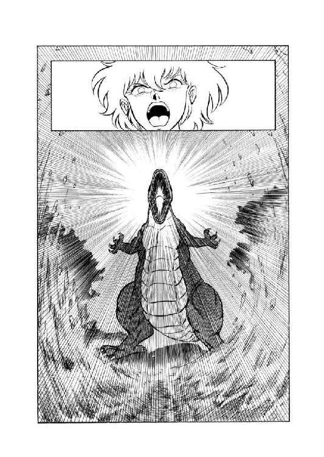
「ひ、ひえーっ！」
その瞬間、チャフは空中で腰を抜かし、森の中へ墜落する。目の前にいきなり大激怒している巨大二足直立竜が出現したのだから、当然といえば当然だろう。
しかし、墜落しながらも、彼女は打ち合わせ通り、首から下げた用意の魔笛をくわえて吹いた。風を斬り裂くような鋭い高音が、耳障りにキーンッと鳴り響く。続いて魔獣戦士が、対照的に低く轟く咆哮をあげ始めた。言わずと知れた、破壊叫の用意である。魔獣変身のあおりで縞兎の姿になったリルが、大きく肩をすくめて呟いた。
「こりゃあ、ルナの奴、完全に逆上しちまってるわ。ったく、大惨事にならなきゃいーけどねー」
９
「魔笛が鳴ったな。東の側か」
呟くと、グレゴール・クライシスは静かに、しかしかなりの速度で、森の中を東へと移動を始めた。その背後に、影の如く魔奴屍人が従う。
「魔獣ヴァルガー、どれほどの存在、どれほどの力か。心躍るぞ」
例によってまったく表情は崩さないが、彼の口調には確かに興奮の響きがある。と、そこへ遠雷のような、重々しい轟きが聞こえてきた。
「雷鳴か？......いや、雲はない。これはもしや、魔獣の咆哮か」
何と、心を揺さぶる力強き轟音よ、とグレゴールは厳粛な表情で呟く。彼らが進むにつれて、轟音はどんどん大きくなっていったかと思うと、いきなりぷつんっと消える。
「むむ......」
グレゴールはわずかに眉を寄せた。ここまで来て、魔獣に消えられては何にもならない。だが次の瞬間、さしもの妖人もわずかではあるが、表情に驚きの色をうかべた。彼らの右手前方の木々が、だしぬけに微塵に砕けて吹っ飛んだのである。同時に地面が大きくえぐれ、びりびりと強い震動が走ってゆく。
「これは凄い......」
魔獣のしわざか、とグレゴールは平常よりほんの少し大きく目を見張り、粉砕された木立ちを見やった。と、左側の木々の間から、ころがるような勢いで、蝙蝠猫が突っ走り出てくる。
「ひーっ、ひーっひーっ、こ、こ、殺されるーっ。あふ、あふひっ、ひわわわーっ」
「どうしたのだ。落ち着け」
なかば泡を吹きながらわけのわからん言葉を口走る使い魔に、グレゴールは冷静そのものの声をかけた。そのとたん、今度は左側の木立ちが粉微塵になって吹っ飛ぶ。
「おち、おち、おち着いてる場合じゃありません、グレゴール様！ 早く、早く逃げないと粉微塵にされちゃいますったらーっ！」
チャフが悲鳴のような叫びをあげるが、グレゴールはまるで動じない。逃げるどころか、たった今吹っ飛ばされた木立ちの方へ、すたすたと進んでゆく。
「グレゴール様あっ！ だめっ、だめっ、だめですよーっ！ 魔獣の奴、完全に逆上しちゃって、周囲構わず破壊波ぶっ放してんですからっ！ あぶないっ、あぶないっ、危険すぎまーすっ！」
元はといえば自分の悪口雑言が魔獣戦士を逆上させたのもころっと忘れ、蝙蝠猫は必死になって御主人様を止める。そこではじめて、グレゴールは激しい表情で振り返った。
「静まれ。魔獣を怖れるなら、おぬしは逃げてもよいぞ。だが、私は他ならぬ魔獣を見るために来たのだ。止めだてするな」
きっぱりと言い放つとばさりとマントをひるがえし、グレゴール・クライシスは何のためらいもなく歩を進めてゆく。そのすぐ後方に魔奴屍人が続き、そのまた陰に隠れるように、渋々ながら蝙蝠猫が従う。逃げてもいいと言われたからって、本当に逃げたら後でえらい事になる。もっとも後があればの話だけどね、とチャフは苦っぽく呟いた。闇魂の回復力だって、全身を闇魂もろとも一瞬のうちに粉微塵にされてしまったら、おそらくどうにもなるまい。御主人様は、それを誰よりも良く知ってるはずなんだけど......。
と、グレゴールの前進がぴたっと止まった。彼の目の前で木立ちが大きく裂け、地面が深くえぐられる。ぎえーっ、間一髪ーっ、とチャフは思わず呻いてしまった。だがグレゴールは、その破壊によって開けた視界の先を、微動もせずに見すえている。
「これが、魔獣ヴァルガーか......」
グレゴールの唇がわずかに動き、呻きとも呟きともつかない声を洩らす。
「何と、凄まじき活力よ......これこそ、私の求めていた無限の活力だ」
「そ、そーですかあ......」
それは良うございました御主人様、と蝙蝠猫は半べそ声で呟いた。だから、早いとこ引き揚げましょうよー。魔獣を見たんだから、もう、気が済まれたんじゃないんですかー。
だが、グレゴールは魔獣戦士をじっと見すえたまま動かない。もしこの時、ルナがもうちょっとでも冷静だったら、確実に彼の一行は発見されていただろう。
しかし実際には、彼女は見事なまでに大逆上していた。北に東に南に、とにかく手当たり次第のでたらめに、破壊叫をぶっ放しまくっている。山を削り森を吹っ飛ばし、地形そのものを変えてしまいそーな大破壊に、城壁の上の連中は、恐怖を通り越して、あきれかえって立ちすくんでしまう。
「凄いだろーとは思ってたけど......やっぱり凄いね」
リルが、ほとんど感心したような口調で呟いた。すでに姿は、人間態に戻っている。
「逆上するにしても、さすがは伝説魔獣、豪快っつーか凄絶っつーか......でも、いつまでやってるつもりなだろ、この大破壊」
「俺が知るか」
土竜男が、例によって不機嫌そうに応じた。
「ま、今の状態では、まだ公女殿下、理性を残してるようだな。何しろ、城壁に向かって一発も撃ってない。本当に逆上しちまったら、西も東もないだろう。とは言っても、何のはずみで城壁に直撃が来ないとも限らんし、避難するべきなのかも知れんがね。ま、いいか」
「よ、よくないですよっ！」
泡をくって叫んだ烏猫が、慌てて翼を広げる。
「何とかして、ルナ様のこと、止めなくちゃ！」
「まあ、せいぜい試してみるんだな。結局、彼女に近づけるのは、翼のある烏猫だけだし、他に方法もあるまい」
ニグスがいかにも投げ遣りな調子で激励すると、続いて豹娘が何となく真剣な感じで口を入れた。
「みーにゃにゃっ、にゃおにゃご、みみみっ、にゃみっ！」
「その心配はなかろう。いくら烏猫だって、そのぐらいの判断力はあるさ」
案じ顔のファルルに、土竜男が面倒臭そうに答える。何だか気になって、烏猫は翼を広げてから訊ねてみた。
「あのファルルさん、何の心配してたんですか？」
「烏猫に、彼女に接近する時は背後から行けと忠告してるのさ。前方から行ったら、破壊叫に巻きこまれかねん」
そう言ってニグスは、じろっと烏猫を横目で見やる。
「そのぐらいは、わかってるんだろうな」
「......御忠告、感謝します」
軽く頭を下げ、烏猫はばたばたっと翔び立った。その後ろ姿を見やって、土竜男は軽く眉を寄せる。
「あいつ、わかってなかったのか」
「多分ね」
そう言ってリルがくすっと笑う。
「ロコの奴はね、利巧なよーでいて、結構肝心なとこが抜けてのよ」
大きなお世話だ、と烏猫は翔びながら小さく呟いた。そして豹娘の忠告通り、背後から魔獣戦士の頭部に接近する。と、そのとたん、ルナが上体をひねって彼を見た。形相も凄まじいが、それにも増して目の光が尋常じゃない。ロコの全身に、ぞわっと戦慄が走る。
「おのれはっ！」
斬りつけるような女主人の声が飛び、烏猫は危うく腰を抜かしかかった。が、次の瞬間、ルナの表情が、まるで仮面でも外したように変わる。平常通りのあっけらかんとした表情に戻って、彼女は小さく苦笑した。
「なあんだ、ロコか」
「はい......ロコです......」
吐息まじりに、彼はうなずく。どうやらルナ様は、烏猫と蝙蝠猫を一瞬見誤まったらしい。確かに言われてみれば、外見はおそろしく良く似ている。えい、まぎらわしい、とロコは空中で一回転して少年の姿になった。そのまま魔獣の頭上に着地し、女主人の傍に寄る。
「あの、ルナ様、大丈夫ですか？ その......だいぶ興奮なさってたようですけど」
「え？......あ、そーね。そーみたいね。ちょっと、憤激しちゃったみたい」
手ひどく破壊された周囲の状況を見やって、彼女はややきまり悪そうに、苦笑した。
「肉体、このへんで止めにしましょう。とりあえず、気は済んだでしょ？」
「マア、お互イニナ」
そう答えると、魔獣は破壊叫の乱射を止め、ばくん、と口を閉じる。
「久シ振リニ能力ヲ使ッタカラナ。スッキリシタヨ。頭脳体モソウダロ？」
「まあね。とにかく人間態に戻るわよ。ロコ、ちょっと離れてて」
うなずいた猫少年が、再び烏猫に戻って翔び立つのを待って、彼女は掛け戻し錠を吞みこんだ。たちまち巨大直立竜の姿が消え、尻尾付きの乙女に変わる。
「攻撃は、これまでにする気のようだな」
魔獣が消えた地点を見やって、グレゴールは静かな口調で呟いた。この距離、この位置関係では、人間態のルナはちょっと視界に入らない。
「まあ良かろう。私は、この目で見た。確かに魔獣は存在するのだ。生命を永らえてきた甲斐があったと言うものだな」
そう言うと、グレゴールはばさりとマントをひるがえして、魔道都市の城壁に背を向けた。
「とりあえずは、引き揚げるぞ。ここは、じっくりと策を練らねばなるまい」
「はぁーい」
とにもかくにも助かったぁ、と内心吐息をつきながら、蝙蝠猫はとことこと御主人様に従って歩きだす。と、そのとき、グレゴールがわずかに眉を寄せ、呟いた。
「ザグ・ロビスはどうした。魔笛が鳴ったら、ただちに集合するように、言っておいたはずだぞ。なぜ、来ない」
「彼の事だから、まーた夢中になって戦闘してるんじゃないですかあ。何せやっこさん、戦闘の他には能がないんですもん。ここぞとばかり、暴れまくってんだと思いますよお」
けらけらけらっ、とチャフが目いっぱい軽く笑う。しかしもちろん、グレゴールは気難しげに眉を寄せている。その口元から、ぼそりと小さな呟きが洩れた。
「よもやとは思うが、な」
10
魔笛の音を耳にしたザグ・ロビスは、一瞬動きを止め、考え込むような気配を見せた。だが、彼は城壁際から去ろうとはせず、間もなく再び、城壁に向かって斧剣を振るい始める。
その間に、マーリン・ブレイキーの光輝球は城壁沿いにふわふわと上昇し、マリオン・ネッド評議員や若手魔道士、獣人戦士たちが待つ城壁の上にたどり着いた。そのとたん、黄金の光がぱっと散り、魔道士、山羆、巨漢戦士の三人が、転がり出るような感じで姿を現わす。
「マーリン！」
「僕は大丈夫、無傷だ。彼らに手当てをしてやってくれ」
汗まみれになった荒い呼吸をつきながらも、マーリンは女魔道士に落ち着いた声をかけた。
「山羆くんの脚の傷がひどい。急いで血止めを頼む。戦士殿の方は例の魔剣の傷だけど、白蠟屍にはなってないから、何とかできるんじゃないかな」
「ーん......どっちにしても手持ちの薬じゃ足りないわね。店から持ってこなくちゃ」
緑色の液状薬を山羆の脚の傷に振りかけながら、ギネヴィア・オフィーリア・コンスタンツェ・ポーランは、濃い眉をわずかに寄せる。
「んー、でもねー、山羆の傷はとにかくとしてもよ、『魂喰らい』でくらっちゃった傷を治療できるほどの薬、あたしの店にあったかなー......ーん......」
「薬など不要っ......小剣を持ってこいっ......」
いきなり、失神していたはずの無謀戦士が、呻くような、しかしかなり明瞭な声を出した。
「スミス・チョーサー、おぬしの店に、火を噴く小剣があったろうっ......あれが良い。持ってこいっ......」
「『白熱剣』ですか。それは、持ってこいとおっしゃるなら、持って来ますけどね」
そう言って、晴天魔道士ははっはっはっと楽しそーに笑う。
「でもあれ、御承知かとは思いますが、実用品じゃありませんよ。確かに火は噴きますけど、そのとたん使用者が火傷してしまいますから、いやー、はっはっはっ、困った剣です」
「いいからっ......持ってこいっ......」
平常なら怒鳴りつけるところだろうが、さすがにそこまでの元気はなく、バト・ロビスは苦しげに呻いた。
「代金が要るなら......すぐにでもくれてやる......早く持ってこいっ......」
「いえ、実用に使うんでしたら、代金は要りませんけどね。まあ、とにかく取ってきましょう。はっはっはっ」
「あっ、ちょっと待てよ、チョーサー！」
笑いながら立ち去りかかった魔道士を、レディ・ポーランが慌てて呼び止める。
「冗談じゃないわよ、あんたの方向感覚、確かギルバート・エゼンと互角でしょ。一人で歩かせたら、平気で一日中でも迷ってるんだから。どのみちあたしも薬を取ってこなきゃならないし、一緒に行くわ」
早口に言うと、女魔道士は傍に居合わせたネッドの女弟子の一人に、わずかに薬の残ったフラスコを押しつけた。
「あんた、この薬で戦士さんの傷の手当をしてちょうだい。もしかすっと効果ないかもしれないけど、ま、その時はその時でよろしく頼むわ」
「はーい、やってみますうー」
少女がうなずくが早いか、女魔道士は悠然としている魔道士を引っぱるようにしてその場を去る。フラスコを受け取った見習い娘は、巨漢戦士の脇にちょこちょこっと近寄り、まだわずかに白煙をあげている傷に、無雑作に薬をぶっかけた。そのとたん、シュウウウッと激しい音がして傷口から薄青い煙があがり、バト・ロビスの顔がぐわっと歪む。
「ぐぐぐ......むむむむむ......」
「きゃー、やっだー、うっそー、あたしの責任じゃないもーん」
少女はフラスコを持ったまま口に両拳をあてて、たじたじと退がる。マリオン・ネッドはわずかに眉をしかめ、吐息をついた。
「大丈夫ですか、戦士殿」
「ぐうむ......何の、何のこれしきの負傷っ......」
苦痛に顔をひきつらせながら、無謀戦士は斧剣を支えに何とか立ち上がろうとするが、下半身に力が入らず、がくりと膝をつく。それでも白蠟屍になっちまわないだけ大したもんだが、と魔道士は妙に冷静に思った。これでは『白熱剣』とやらが到着しても、あの狂戦士に反撃とはいくまい。これは、他の部署に伝令を出して、救援を頼んだ方が正解だろう。
「あんまりもたついてると、狂戦士が本気で城壁をぶち抜きかねんからな」
呟いて、ネッドは女弟子の一人に救援を求めに行くよう指示しようと、声をかけかかった。と、その時、いきなり東方訛りの奇声があがる。
「はーいっ、お客さんっ、お待たせしたあるね、ボンジュール！」
「な、な、何だー!?」
びっくり仰天して立ちすくむ魔道士たちの前に、まったく唐突に白衣に調理師帽の男が躍り出た。右手に包丁、左手に大皿、鉄鍋を背負った謎の料理長である。
「おお、料理長か。どうした」
「どうしたじゃないあるよ、ムッシュー。わーたし、お客さんに食べてもらおうと、究極の強精料理、心をこめて調理したあるよ。元気の出ない時、これ、最高あるね。ボンジュール！」
高らかに叫ぶと、料理長はぱっと包丁を投げ上げ、右手の指を二本、ぶいっと突き出した。同時に左手の大皿がふわっと宙に浮き、空いた手が落下してくる包丁を把む。そして半瞬後、料理長は右手で大皿をぴたっと受け止め、恭々しく無謀戦士の前にささげる。調理長っつーより、ほとんど曲芸師だな、と魔道士はあきれて呟いた。
「ふむ、究極の強精料理か」
大皿に盛られた薄切りの肉片のようなものを、バト・ロビスは一枚つまんで口に放りこむ。その瞬間、彼の目がぐわわっ、と大きく見開かれた。
「う、うまい、ぞーっ！」
力強い咆哮をあげて、無謀戦士は一気にどどーんっと立ちあがる。
「うおおおおおおおおおっ、活力が、みなぎるぞおおーっ！」
「お、おい、本当かよ......」
薬も受けつけない魔剣の傷が、肉片一枚食べただけで治るなんて、そんな馬鹿な、とネッドは今度こそ心底あきれかえって呟いた。しかし現実に、治ってしまっているんだから仕方がない。と、料理長が得意げに、ほーっほっほっほっと笑う。
「ほーっほっほっほっ、病も傷も食を以て治す。これ、東方の料理道、奥義のひとつ『医食同源』の技術あるよ、ボンジュール！」
「うーん、何だか良くわからんが、とにかく凄いことは間違いない」
アチャラカ・スチャラカ・チャーラン・ポーランがえらそーに腕組みをして唸った。と、思ったとたん、彼の手がひょいと大皿に伸びる。
「というわけで、ひとつお相伴を。わはははははは......しゃぎゃあー！」
へらへら笑いながら肉片を口に放りこんだとたん、魔道士の鼻と耳からぶーっと血が噴き出た。続いて口からぶわっと泡が噴き出し、チャーラン・ポーランは卒倒する。
「おいおい、生きてるか？」
まったく、意地汚いのも時には致命傷だな、と苦笑しながら、マーリンは情報中継業者のだらしなくひきつった表情を見おろした。ぶくぶく泡を噴きながら、チャーランは譫言のように呟く。
「うむむむ......見事な攻撃だぁ......」
「馬鹿言ってる元気があるなら、死なないな」
ま、死んでも別に構わんが、とマーリンは肩をすくめた。と、料理長がやや厳しい表情になって、泥鰌髭をひねる。
「困った人あるね、ムッシュー。真の料理は食べる人の味覚に合わせ、臨機応変、千差万別に味つけするものあるよ。だから、わたしのお客さんの好む料理、他の人に良いとは限らないある、それを理解できずにつまみ喰いとは、言語道断、お話にならないあるよ、ボンジュール！」
そーゆー問題なのかなあ、と思いながら、マーリンは大皿の肉片をひとつつまみ上げた。もちろん、口に入れるような真似はしない。
「あのう、ミスター・シェフ、よろしかったら教えていただけますか。これ、いったいどーゆー料理なんです？」
「これか。これ、天下の珍味、魔獣の漬け干しあるよ、ムッシュー」
そう言って、料理長は莞爾と笑う。
「先日の騒ぎで仕入れた黒蛇魔獣のお肉、秘伝のタレに漬けて、陰干ししたあるね。これぞ天下一品、他所では絶体に味わえない、究極の強精料理あるよ、ボンジュール！」
「はぁ......魔獣料理ですか、これ......」
そりゃ確かに、滅多にゃ喰えんわな、と納得して、マーリン・ブレイキーは肉片を皿に戻した。
11
「はーい、持ってきましたよー。これが御注文の『白熱剣』です」
にこにこしながら、スミス・チョーサーはがっしりとした造りの白い小剣を差し出した。バト・ロビスは左手で剣を受け取り、ぐっとにらむと、むんっと気合を入れる。たちまち剣は巨漢の左手もろとも炎に包まれるが、彼は眉ひとつ動かさない。
「これは、使えそうだな」
呟くと、無謀戦士はふっと気合を抜いた。同時に『白熱剣』の炎も消える。
「気に入った。もらうぞ。価格はいくらだ」
「いやー、はっはっはっはっ、お気に召したのなら、差し上げますよ。代金は要りません」
満面に笑みをたたえ、魔道士は当然のように言い放った。おやおや、またか、と山羆の傷に包帯を巻いていた女魔道士が小さく苦笑する。
「代金は要らん、だと？」
「ええ、何しろ私の扱う商品は全部、実用に適さない趣味の武具ですからね。それがあなた、実用品で代金もらっちゃ、スミス・チョーサーの名にかかわりますがな。いやー、はっはっはっ、はははのは」
不審げな戦士に向かって、魔道士はいかにも嬉しそーに笑う。おちょくっとるわけでもなさそうだが、と無謀戦士はちょっと首をかしげたが、元来そーゆー事にこだわる性格ではない。
「それでは、遠慮なくもらって行くぞ」
無雑作に『白熱剣』を剣帯にはさむと、バト・ロビスはのしのしと城壁の突端に進んだ。そして、うおおおおおおと咆哮をあげると、再び城壁下の狂戦士に挑戦すべく、どどどどどどどと馳け降りてゆく。
「チョーサー、まーた商品、無料で贈呈しちゃったわね。これじゃ商売、あがったりじゃない。大丈夫なの？」
女魔道士がちょっとからかうような口調で訊ね、チョーサーはにこやかに笑いながら頭を搔いた。
「いやー、はっはっはっはっはっはっ、実はあんまり大丈夫じゃなかったりして。いや、実際私は、商売には向いてないんじゃないかと、思ったりもするんですねー。いやー、はっはっはっはっはっはっ、困ったもんです」
例によって、困ってるよーには見えないわねー、と呟きながら、レディ・ポーランは城壁の下をのぞいた。無謀戦士が疾風怒濤の勢いで垂直に近い城壁を馳け下り、狂戦士はさすがにやや意表をつかれた様子で、上を見詰めている。まさか、『魂喰らい』で傷を受けた戦士が、元気いっぱいに復活して来るとは思わなかったらしい。
「しっかし、戦士さんも、また見違えるよーに元気になっちったわねー。薬が効いたのかしら？」
「いや、魔獣を喰ったのさ」
マーリン・ブレイキーがにやりと笑って応じる。女魔道士がきょとんとした表情になって訊ね返そうとした時、城壁の外にどどーんと着地したバト・ロビスが大音声で喚きたてた。
「戻って来たぞおっ！ 大伯父御っ！」
「......オノレ、小僧ッ子ガ......」
呻くような声を出し、狂戦士は斧剣を構え直す。
「何故ダ......何故、貴様ニハ『魂喰ライ』ガ効カンノダ？ 俺デスラ、斃サレタコノ魔剣ガ......」
「馬鹿めーっ！ 気合が違うわ。気合があっ！」
傲然と言い放って、無謀戦士は大きく斧剣を振りかぶる。完全に狂戦士を見下した構えだ。
「さあっ、どっからでも掛ってこーいっ！」
「オ、オノレェッ！」
これまた腕をいっぱいに伸ばした大きな構えをとって、狂戦士は敵に向かって突進する。ずだだだだだだっと勢いをつけ、斧剣を叩きつけるように振り回す。
「むんっ！」
気合を籠めて、バト・ロビスは斧剣を振りおろした。巨大な鋼鉄の塊が、凄まじい勢いで衝突し、紫色の火花と耳障りな金属音をあげる。ほとんどはじかれるように、二人の巨漢戦士の体が斧剣の交差点を中心に半回転して、位置を替える。
「ヌオオッ！」
咆哮をあげて、狂戦士はいったん右手の斧剣を手元に引いた。しかし、同時に左手が素早く『魂喰らい』を抜き、円運動を描いて突きかかる。その漆黒の小型曲刀を、バト・ロビスは斧剣を横なぐりに振って阻んだ。
「モラッタッ！」
叫んで、狂戦士は斧剣をまっすぐに突き出す。と、バト・ロビスの左手に握られた小剣が、斧剣の切尖を巧みにはじく。
「ウヌッー!?」
「自分のみが双刀を使うと思ったら、大間違いだぞ、大伯父御っ！」
叩きつけるように叫ぶと、バト・ロビスはそのまま左手の小剣を突き込んだ。その瞬間、小剣がぶおおっ、と猛烈な炎を噴き出す。
「グワワッー！」
「くらえっ、『白熱剣』ッ！」
噴き出た炎が、もろに狂戦士の顔面を灼く。とっさに右腕で顔を防御したところへ、右手の斧剣が唸りをあげて叩きこまれる。危うく後方に跳んだものの、ざっくりと左腕を斬り飛ばされた。だが、バト・ロビスは、得意の踏み込んでの連続斬撃にかかろうとはしない。その場に足を止め、牽制するように斧剣を敵に向けたまま、ゆっくりと低い姿勢に構える。
「？」
「同じ戦法で、二度はやられん。......そこだっ！」
斬り飛ばされた左腕が『魂喰らい』を握ったまま跳ね出ようとする機先を、バト・ロビスの『白熱剣』が素早く制した。低い姿勢から、なおも身を沈めるような構えで、無謀戦士は炎をあげる小剣を、びくんびくんと跳ねる腕に突き立てる。筋肉と血液、そして骨までもが黒い煙を噴きあげて、縮むようにして熔けてゆく。
「やはり、腐敗屍肉であったか」
バト・ロビスがわずかに眉を寄せて呟いた時、片腕を失った狂戦士が大きく跳んだ。この低い体勢では受けきれないととっさに判断し、無謀戦士は横っとびに身をかわす。だが、着地した狂戦士は斧剣を投げ捨てると、すでに指だけになっている左手が把んでいた『魂喰らい』を拾いあげる。
「斧剣を捨てたか。一族の誇りも、一緒に捨てたと見たぞ。もはや貴様は大伯父御にあらず、単なる迷った屍体に過ぎんっ！」
「何トデモ喚ケ。大伯父ダカラトイッテ、手加減スルワケデモ無イクセニ」
苦笑さえ浮かべて、狂戦士は『魂喰らい』をまっすぐに構えた。
「片腕デ斧剣ヲ使ッタトコロデ、貴様ニハ勝テン。イチカバチカ、魔剣デ心臓ヲ抉ッテクレヨウ」
呟くが早いか、狂戦士は一本の黒い矢と化して突進を開始する。もちろん、鏃となるのは、魔剣『魂喰らい』だ。無謀戦士はわずかに重心をおとし、不動の姿勢で斧剣を構える。うかつに避けると、体勢の崩れにつけ込まれかねない。
「捨て身で来るかっ......しかし、それが通じるほど、俺が甘いと思うなよっ......」
バト・ロビスが声に出さずに呟いた瞬間、狂戦士が捨て身の突きを入れて来る。斧剣が閃光のように動き、魔剣の刃を受け止め、阻む。そして、斧剣の陰から、渦巻く炎をまとった『白熱剣』が伸び、狂戦士の右腕を灼き熔かす。ザグ・ロビスは半ば反射的に『魂喰らい』で炎を払った。そのとたん、『魂喰らい』の刀身から、黒い煙がぶわっと噴きあがる。
「シ、失敗ッタッ！」
「命運尽きたなっ！ 屍妖怪っ！」
威勢良く叫びながら、無謀戦士はぶんぶんぶんっと『白熱剣』を唸らせ、突き込む。その度毎に、狂戦士の体からじゅっ、じゅっと音をたてて肉が熔け削がれてゆく。炎を浴びてしまった『魂喰らい』は、もはや小型曲刀というより、細錐のような形になっている。そして、半ば自暴自棄で突き出したとたん、『白熱剣』でまともに受けられてしまい、魔剣『魂喰らい』の刀身は一瞬のうちにじゅうっと鈍い音をたてて蒸発した。
「コレマデカ......」
「これまでだ。成仏せえいっ！」
叫びざま、バト・ロビスは大きく振りかぶった『白熱剣』で、狂戦士の体を灼き熔かしながら両断する。黒い煙が盛大に噴きあがり、ザグ・ロビスの巨体はシュウシュウと音をたて、熔け崩れた。
「勝った。......少なくとも、とりあえずは、な......」
呟くと、バト・ロビスは斧剣を腰に戻した。だが、左手の『白熱剣』は、炎こそ消してあるが、そのまま油断なく構えている。
「さて、大伯父御、本当にくたばりおったのか、どうか......」
何せ、我らロビス一族は、生命の交換分を三つ四つは持っている、と言われるぐらいしぶとい一族だからな、と無謀戦士はちょっと他人事のように呟いた。
第四章 闇からの逆襲
１
「どうやらザグ・ロビスめ、不覚をとったようだな」
地面にうち捨てられた斧剣を見やって、グレゴール・クライシスは薄い眉をわずかに寄せた。すでに周囲は夜の闇に覆われているが、この怪人の視力には影響がないらしい。
「チャフよ、彼の闇魂が残っていないか、探すのだ」
「はいっ」
真紅の瞳を妖しく輝かせ、蝙蝠猫は注意深く地面を探査しはじめる。
「ったくもー、何が狂戦士ザグ・ロビスよ。あっさりこんと倒されちゃって、あたしらに余計な手間かけさせるんだから......あ、あれかなっ？」
ばたばたばたばたっと蝙蝠猫が移動し、そしてすぐけたたましい声をあげた。
「あった、あった、ありました、グレゴール様っ！ 大部分熔けちゃってますけど、ザグ・ロビスです！ 闇魂は......あ、大丈夫、そのまま残ってるっ。だけど『魂喰らい』は だけになっちゃってるみたいですね」
だけになっちゃってるみたいですね」
喋りながら体をくるっと回転させ、チャフは少女の姿になり、闇魂と『魂喰らい』を拾いあげる。
「グレゴール様、どーなさいます、これ？ 『魂喰らい』は刺殺針にでも造り直せばいいけど、狂戦士をまるまる再生するのは、かなりの大仕事になりますよお。それならむしろ、この闇魂で新しい魔剣を造っちゃったらどうかしら。魔剣『狂戦士の魂』なんちゃって。きゃはははははは、いいと思いません？」
「そうもいくまい。クラウド、彼の身体の残骸と、例の鉄のかたまりを拾っておくのだ」
魔奴屍人に命じて、グレゴールはさっさと歩きだす。その傍にとととっと走り寄って、蝙蝠猫が念を押すような調子で訊ねた。
「仮の拠点へ戻られるんですか？」
「そうだ」
妖人は、まったく表情を動かさずにうなずく。魔道都市を襲撃するにあたって、彼らは都市からさほど遠くない山中の洞穴に拠点を用意しておいた。拠点には、再生術に必要な薬品類や器物もすべて揃っている。戻るのは当然だろう、と言いたげな御主人様の顔を横から見上げ、猫少女は小さく首をかしげた。
「拠点に戻って再生術を始められると、早くても五日はかかりますよね。その間は、魔獣と魔道都市、放置しておかれる予定なんでしょーか？ あたしは、ここが押し時じゃないかなー、と思ったりしてるんですけど......」
「私も、そう思う」
ぼそり、という感じでグレゴールが呟き、猫少女の目が見事にまん丸くなる。
「そ、それじゃどーして？ どーして戻っちゃうんですか？」
「押し時なのは確かだが、もはや力押しはできん。狙いを定め、秘やかに作戦を進める必要があるのだ。そのためにも、いったんは拠点に戻って周到な準備をせねばならん。決して、あきらめたわけではないぞ」
そう言って、グレゴールはじろりと使い魔を見すえた。その眼光の鋭さに、猫少女は思わずわずかに身をすくめる。
「次の作戦では、お前とクラウドに働いてもらう予定だ。覚悟しておけ」
「はい......」
表情をひきしめ、猫少女は小さくうなずいた。だが、すぐにその口元に邪悪そのものの忍び笑いが浮かぶ。
「くふふふふふふふ......そーかあ。次の作戦は、あたしが主役かあ......へっへっへっへっ......どーやら、魔奴屍人を自由に使わせてもらえる様子だし、こいつは面白い作戦になりそーだわ。どんな具合に魔道都市を引っ搔き回して、あの尻尾女をきりきり舞いさせてやろーかなっ......うふふ、楽しみ、楽しみ、た・の・し・み・ねっ！」
狂戦士の闇魂をひょいひょいと片手でもてあそびながら、猫少女は、彼女にしては押さえ気味の低い調子で呟いた。
一方、城壁のちょいと外に敵の首魁がうろついているとは知らず、城壁の内側はとりあえずの勝利に、ほっと一息ついていた。
「叔父上が狂戦士を斃し、生屍人の軍団もほぼ完全に潰滅した。これで敵には、魔道都市を真正面から攻める手段はなくなった、と考えていいんじゃないかな。一定の地域から召喚できる生屍人の数には限界があるそうだからね」
理知的に状況を説明するミル・ユードを、ルナは何となく誇らしげな微笑をうかべて、見やる。夜に入って、三人の司令官たちは、それぞれ歩哨を配置し直し、消耗した者を交代させ、消費した物資を補充する手配りを整えた上で、会議室に集合した。むろん女戦士と魔道士、豹娘と土竜男と猫少年、そしてなぜか縞兎娘が幕僚として同席している。
「もちろん二、三日は様子を見なくちゃならないだろうけど、基本的には、喪われた神殿を探索しに出られる状況になっている、と思う。そこで提案なんだけど」
そう言って、青年は無謀戦士をまっすぐに見すえた。
「叔父上、あなたには魔道都市に残って防衛司令官を務めていただきたいんですよ」
「何っ？」
バト・ロビスの太い眉が、片方だけわずかに動く。
「どういう思惑だ、カルバドク卿？ 俺がなぜ、この戦闘に身を入れておるのか、知らぬわけでもあるまいに」
「それは重々、承知しているつもりです」
長身の青年は、ごく穏やかな表情で、巨漢に向かってうなずいた。
「しかし叔父上。考えてみたのですが、この探索を行なう最も効率の良い手段は、黄金飛行竜を使う方法だと思うんですよ。何しろ、大山脈を越えて西へ進み、更に位置のはっきりしない湖と神殿を発見しなくてはならない。これはどう見ても、空を飛んで行くのが最善です。叔父上には、言うまでもないかと思いますが」
「ううむ......」
眉をしかめ、バト・ロビスはちょっと腹立たしげに唸りをあげる。と、そこへギルバート・エゼンが、得意気に口をはさんだ。
「ふっ、さすがはロード・カルバドク、目のつけ所が違いますな。お察しの通り、わが黄金飛行竜の飛翔力を以てすれば、西の山脈などひとっ飛び。有翼猫よりも速く荷車よりも快適に、さよう、またたく間に皆さんを、喪われた神殿とやらにお連れすることができるでしょう。何と言っても、魔道都市最高最強の召喚術師であるこの私、ギルバート・エゼンの召喚する黄金飛行竜ですから、これはもう絶対確実安全保証、ま、巨艦に乗ったつもりでお任せあれ。ふっふっふっふっ、はっはっはっはっ、わーははははははははははは」
「......無駄口と馬鹿笑いを止めろって言ったのに......ったくもうっ......」
レイピアが渋い表情で呟くと、高笑いを続ける魔道士のマントをぐいっと引く。ミル・ユードも苦笑をうかべ、叔父貴に向かって軽く肩をすくめてみせた。
「確かに多少の不安はありますけどね。それでもやっぱり、黄金飛行竜を使うのが一番早いのは間違いないでしょう」
「ふむ......で、俺を抜きにして、どんな人員編成をする思惑なのだ、おぬしは？」
不機嫌そのものではあるが、一応押さえた声で無謀戦士が訊ねる。
「その神殿には、魔獣が封じ込められておるかも知れんと言うのだろう。生半可な布陣では、死にに行かせるようなものだぞ」
「ええ、ですから僕とルナ殿下が対魔獣用の戦力として同行します」
そう言って、青年はルナの方へわずかにうなずいて見せた。もちろん彼女も、即座にうなずき返す。
「そして、死霊術師の神殿に行くのですから、当然リア・ファルル嬢が加わります。で、彼女の通訳として、ルネ・ニグス君にも同行願いたい」
「みゃおう、みゃん、みゃん、にゃんっ！」
豹娘が嬉しそうに叫んだが、土竜男の方はぶすーっとした表情で黙り込んでいる。明らかに気が進まない様子だが、文句を言わない以上、あきらめて同行するつもりらしい。
「後は、飛行竜の操縦のためにギルバートに来てもらって、レイピア、君も来るんだろ？」
「はいっ！」
当然ですっ、と言わんばかりの口調で女戦士がうなずく。馬鹿魔道士が失敗こいて、我が君にもしもの事故が起きたら目もあてられない。何としても、私がしっかり見張ってなくちゃ。
「それから殿下の使い魔が、二人とも来るんですか？」
「いーえっ、あたいは行きませんっ！」
ルナが答えるより先に、これまた目いっぱいきっぱりとした口調で、リルが叫ぶ。
「連れてくなら、猫だけにしてよね。それでおーむね、要は足りるでしょ。あたいなか連れてったって、何の役にも立たないよ。別に立ちたいとも思ってないし」
「わかった、わかった。あんたは都市に残ってなさい」
まくし立てる少女に、ルナは苦笑をまじえてうなずいた。
「で、そっちはどうするの、ロコ？ 残りたかったら、無理にとは言わないけど」
「いえ、僕はルナ様に従います」
主人に忠実な使い魔らしく、猫少年はごく素直に頭を下げる。
「じゃあ、これで決定だね。そういうわけで、叔父上、この七名で西へ向かいます。僕らが出ている間、魔道都市の防衛をよろしくお願いしたいのですが」
「いや。その願いは、聴けぬな」
バト・ロビスは真剣そのものの表情で、首を振った。今度はミル・ユードの眉がわずかに上がる。
「しかし、叔父上......」
「まあ、聞け。おぬしらが飛行竜を使って探索に出るのは、それはそれで良かろう。だが俺がまったく独自に西に向かうのを、留める理由にはならんぞ。俺はあいつに約束したのだからな。誇りにかけても、行かねばならん」
そう言って、無謀戦士は大きくうなずいた。こりゃあ、あかんわ、とルナは思わず小声で呟く。どう説得したって、こりゃ聴きっこない。だが、青年はあえてこの頑固戦士を説き伏せようと、言葉を継いだ。
「ですが、グレゴール・クライシスの脅威を前にして、叔父上が単身魔道都市から離れるような状態を、ミルドレッド評議長が望むとは思いません。彼女が健在なら、必ず叔父上に都市の防衛を委ねるはずです」
「いやいや。彼女が健在なら、魔道都市の防衛に外来者の手は借りるまい」
そう言ってバト・ロビスは、真剣な表情のまま、再度首を振る。
「案ずるな、カルバドク卿。俺の判断では、我々が西方へ出ている間、魔道都市は安全だろう。なぜなら、グレゴールはまず間違いなく我々を狙って来るからな」
正確に言えば、我々の中の一人、小娘めを狙って来るはずだ、と無謀戦士は、これは言葉にせずに呟いた。
２
「さて、そろそろ良かろう。出て来るのだ、クラウド」
グレゴールが声をかけると、洞穴の一隅に置かれた細長い漆黒の箱の蓋が、内側からゆっくりと押し開けられる。そして、その中から、一糸まとわぬ長身の若い女性が起きあがってきた。黒に近い濃茶の髪が、びっしょりと濡れて肩から腰のあたりまでまとわりつき、なかなか妖艶な姿ではある。
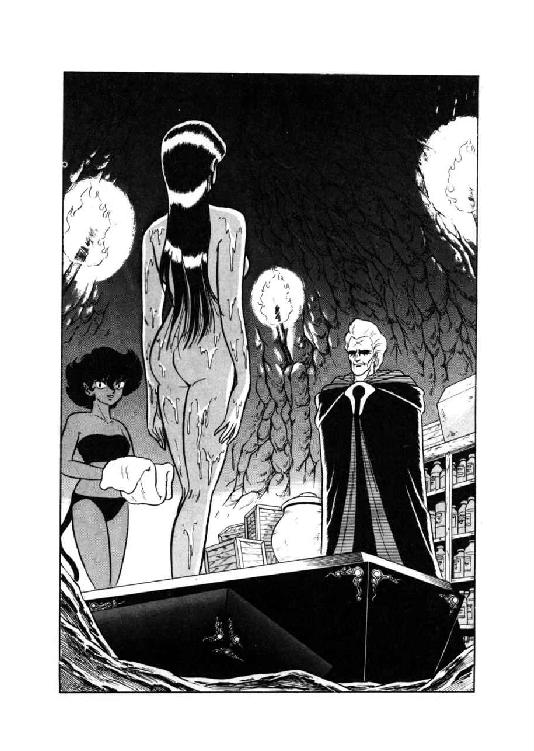
「グレゴール様、この女、いったい誰なんですか？ あたしはまるで見覚えないけど」
全身から透明な水滴をしたたらせて箱から歩み出た女性に、大きな布を渡しながら猫少女が半分振りかえって訊ねた。細工台で『魂喰らい』を針状に直していたグレゴールが、わずかに眉を寄せて答える。
「何を言っている、それはクラウドだ。外見が変わっただけで、中味は同じだぞ」
「いえ、あの、そーじゃなくって、クラウドが複製元にした女が誰なのか、うかがいたいんですけど」
ややずっこけながらも、猫少女は押して訊ねた。女性は素早く髪と身体をぬぐうと、自分で棚から変化服を取り出して身につけている。その姿をちらっと見て、グレゴールは素っ気なく答えた。
「名は知らん。飛行竜遣いの魔道士とともに、大門の上にいた女だ」
「ふーん......そーすると、まず最初の標的は、その飛行竜遣いってことになりますね」
変化服をまとった女性を見つめて、猫少女はにまっと笑いをうかべる。
「作戦の細部は任せる。好きなようにせい」
そう言って、グレゴールはちょっと太目の黒い刺殺針を細工台の上から取りあげた。
「これが『魂喰らい』のなれの果てだ。持って行け」
「はいっ」
左手で針を握り、猫少女はくるっくるっと手首を動かしてみる。
「もとの『魂喰らい』よりも、吸精力はだいぶ落ちているからな。一突きで必殺というわけにはいかん。用心しろ」
グレゴールが、面白くもなさそうな表情でぼそっと呟く。そして、一瞬虚をつかれたように立ちすくんだ少女の脇を、すたすたと反対側に進む。そこには、ザグ・ロビスの身体の残骸と闇魂を入れた大甕が置いてある。
「どうした。まだ何か用か」
甕をのぞきながら、グレゴールが冷たい声で訊ねた。猫少女は一回ぶるっと身震いして、怖る怖るといった調子で訊ね返す。
「あの、グレゴール様、今、もしかして、用心しろっておっしゃいませんでした？」
「言ったぞ」
棚から薬品を取りながら、彼は氷のような声で答える。
「これ以上、余計な手間をかけさせられてはたまらんからな。十分用心しろ。いいな」
そう言うと、グレゴールは使い魔の方など見もせずに、わずかに尖った声で命じた。
「わかったら、さっさと行け。もたもたしていると、夜が明けるぞ」
「は、はいっ！ 行ってきまあすっ！」
ぴんっと背中と尻尾を伸ばし、猫少女は急いで魔奴屍人に合図をする。長い髪を無雑作に束ねた彼女が軽くうなずくのを確認するが早いか、チャフはだっとばかりに洞穴から跳び出した。即座にクラウドが彼女の後に続く。一瞬、グレゴールは目を上げて彼女たちの背を見送ったが、すぐに大甕に視線を戻す。この状態から人間の体を再構成するのは、彼にとっても簡単な作業ではない。
一方、猫少女と魔奴屍人が洞穴を出発したのとほぼ同時刻、ルナたちは作戦会議を一応終えて、会議室からひきあげようとしていた。
「まったく叔父上にはかなわないな。まあ、半分予想はしていたけどね」
ミル・ユードが苦笑まじりにルナに話しかける。結局バト・ロビスは彼の説得に応じようとはせず、それどころか明日の朝早々と西に向かって出発する、と宣言してしまった。
「まあ、仕方ないんじゃない？ あの無謀戦士がいったん心に決めた事を、変えようって方が無謀だと思うな」
「確かにね」
いささか無責任なルナの言葉に、青年はにやっと笑ってうなずく。だが、すぐにその表情が真剣に変わる。
「しかしそうなると、一応叔父上と連係をとった方がいいかも知れないな。魔道都市の方も、ブレイキー評議員なり、ネッド評議員なりと、きちんと防衛手順を打ち合わせておく必要があるし。覚悟はしていたけど、これはあわただしい事になりそうだ」
「あなたも案外、苦労性ね」
眉を寄せる青年の顔を見上げて、ルナはくすっと小さく笑った。何となく、故郷で帝国軍を相手取っていた時のあたしを思い出す。実際には、あれから四、五十日しか過ぎてないけれど、もうずいぶん昔のよーな気がするなあ、と彼女はちょっとぼけっとしながら呟いた。お祖父様やヴィーナ、それにあんまり思い出したくないけど、ゼナ姉さまは今頃どうしてるかな。城のみんなも、元気でやってるかしら......。
「やっぱり早いうちに、手を打った方がいいだろうな」
ミル・ユードがきっぱりとした声を出し、ルナははっと現実に返った。
「叔父上は朝になったら出発してしまうんだから、今夜じゅうにブレイキー評議員に話をしておこう。まさか、まだ寝ちゃいないとは思うけど」
独言のように早口で呟くと、青年はすっと背後を振りかえった。
「レイピア、すまないがブレイキー評議員に、僕が相談があると伝えてくれ。多分、治安局本部にいるだろう。僕は会議室に戻ってるから」
「はいっ！」
忠実無比の女戦士は、即座にうなずいて走り出しかかる。が、傍でぽかんとしている魔道士に目をやると、彼女はわずかに立ちどまって、早口で指示を出し始めた。
「あんたを一人で歩かせるとろくな事ないから、とりあえずマーリン・ブレイキーさんの邸に居なさい。用が済んだら私はそこへ戻るから、それからあんたを自宅まで送ってあげる。何だったら泊ってってもいいしね。マーリンさんの邸までは、公女殿下に送ってもらいなさい。近所だから」
「あ、あたしはカルバドク卿につきあうわ」
やや呆然としていたルナが、半ば反射的に口をはさむ。レイピアは一瞬微妙な表情になったが、すぐにうなずいて公女に告げた。
「それではどなたか、ミルドレッド邸に戻る時に、お手数ですけど魔道士をブレイキー邸に届けてやって下さい。それじゃ」
言うが早いか、女戦士はさあっと風のように走り去る。ちょっと彼女の姿の良い背を見送った後、ルナはもう一度振りかえって訊ねた。
「それじゃあんたたち、ギルバートさんを送ってってくれる？」
「ん、いいわよ」
リルが気軽にうなずいたが、猫少年は小さく首を振る。
「僕はルナ様といっしょに残ります。伝令役が必要になるかも知れませんし」
「そうね。じゃ、リル、お願いね。それから、ファルルもミルドレッド邸へ戻るの？」
何気なく訊ねてしまってから、ルナはあっと内心舌打ちした。案の定、豹娘はにこにこしながら元気良く答える。
「みにゃーう、にゃう、にゃあ。みみにゃあ、にゃお、みゃお」
「ファルルは、俺の下宿に泊める」
土竜男が仕方ねーな、と言わんばかりの表情で答えた。
「どのみち俺は調査があるから、今夜は寝ないつもりなんでね。問題はなかろう」
「その調査というのは、僕が頼んだ物だね？」
不意に、ミル・ユードが、思い出したような口調で訊ねる。ニグスは面倒臭そうにうなずいた。
「そう。喪われた神殿と、そこに巣くってる女神だか怪物だかについての文献調査だよ」
「それ、今夜わかってる部分だけでいいから、聞かせてもらえないかな」
青年が勢いこんだ調子で訊ね、土竜男の細い眼が片方だけわずかに開く。
「俺は構わんが、なぜだ？」
「資料として叔父上に伝えておきたい」
青年はきっぱりと、そう言い放った。
「下手をすると、今夜しか伝える機会がないかも知れないからね」
「わかった。俺はあの大将には、資料なんぞ無用と思うがね。ま、いいか」
得意の文句を呟いて、ニグスはわずかに肩をすくめる。それじゃあ、とうなずきかかったミル・ユードの脇腹を、ルナの肘がごく軽く突っついた。
「何だい？」
「何だいじゃないわよ。あなた、これからブレイキー評議員に会うつもりで、レイピアさんを使いに出したんでしょ？」
「あっ......」
青年の口が、わずかに開く。この男性も、案外抜けたとこあるのね、とルナは小さく苦笑した。
「そうか、しまった......うっかりしてたな。それじゃ、公女殿下、済まないけどニグス君の説明を聞いておいてくれないか」
「えっ？......あ、そうか、そうなるのね」
笑ってる場合じゃなかったか、と彼女は再度苦笑する。
「わかったわ。ニグス君、よろしくね」
「俺はどっちでも構わんがね」
土竜男が、いささか投げやりに答えた。と、その時早くもレイピアが馳け戻ってきて、我が君に告げる。
「ブレイキー評議員は、すぐお会いになるそうです。御足労だが、治安局本部まで来ていただきたいと、おっしゃってますが」
「わかった。今、行くよ」
そう言って、ミル・ユードはルナに向かってうなずいてみせた。彼女もうなずき返すが、内心、いささか穏やかでない。本人は気付いていないが、その瞬間のルナの表情は、先刻レイピアが一瞬見せた微妙な表情に、鏡に映したようによく似ていた。
３
「おや？」
城壁の上で哨戒の任務にあたっていた獣人戦士のアル・フィロスは、小さく呟いて首をかしげた。
「誰か、登ってくるみたいだな」
砂鰐に変身する能力を持つ彼は、視力はあまり利かないが、その代り聴力が優れている。常人では聞きとれない微かな音を感じとり、砂鰐男は城壁の突端に進んで行った。松明をかざして下方を窺うと、確かに黒い人影が、城壁に貼りつくようにしてよじ登ってくる。
「おいっ、誰だあ、そんな所にいるのは。落ちたら危ないじゃないか」
フィロスは思わず身を乗り出して警告したが、人影は無言のまま、じりじりと城壁を登り続ける。怖くないのかな、と思ったとたん、はじめて彼はぎょっとした。恐怖を知らないのは生屍人や魔奴屍人、つまり、現在戦っている相手じゃあないか。
「こ、こ、これは危いかも知れないなあ......」
震え声で呟きながら、フィロスはいったん身をひいて、松明をしっかりと握りしめた。もしも登ってきたのが生屍人だったら、顔を出した瞬間に松明で叩き落としてやろう、という構えである。
「来る。来てるな。来なくてもいいんだけど。とにかく、来るまで待つぞ」
近づいて来る物音に神経を集中し、砂鰐男は我知らずぶつぶつ呟く。変身してしまえばそれこそ生屍人並みに無神経になるのだが、日常の彼は、実はあまり度胸のある方ではない。いっそ変身しようかな、とも思ったが、そんな事したら松明が持てなくなる。
「とっととと......来たっ！」
城壁の上に手がかかり、すっと上体が浮かび出る。一瞬松明を叩きつけかかったフィロスの手が、相手の顔を見たとたんにぴたりと止まった。
「レイピアさん......」
「御免なさい。驚かしちゃって」
長身の女戦士はにこっと笑うと、素早く城壁の上に体全体をもち上げる。そしてひらりと身体を前方に出し、両足をそろえてすとんと砂鰐男の前に立つ。
「どうしたんです、いったい？」
「ちょっと理由ありでね。大門は使いたくないのよ」
わずかに肩をすくめ、女戦士はじっと相手の顔を見つめた。
「できれば、ここから入ってきたのも、内緒にしといてくれない？」
「ええ、いいですよ」
にっこり笑って、フィロスがうなずく。女戦士も笑ってうなずき返した。
「ありがとう。助かるわ。じゃあ、急ぐからまたそのうちにね」
「はいはい」
女戦士は片手をあげると、くるっと身をひるがえしてその場を立ち去る。相変わらず鮮やかな身のこなしだなあ、と砂鰐男は笑顔で呟いた。ちょうどこの時、彼の頭上を一匹の蝙蝠猫が音もなく滑空して行ったのだが、彼はまったく気付かない。
「ふふふふふふふ......ちょろいもんね」
城壁から十分に距離をとって着地した蝙蝠猫は、いかにも馬鹿にしたように、くすくすと忍び笑った。その傍には、レイピアそっくりの姿をした複製体が、無言で立っている。
「うまい具合にあの歩哨、この女を知ってたみたいね。本物を良ーく知ってる奴ほど騙される、それが複製体の面白いとこよ。ふふふふふふ......くはははははは......」
口を押さえながらも、チャフは心底おかしそうに笑う。
御主人様特製の魔奴屍人クラウドは、死霊術師の能力の他にもう一つ、複製体の機能を持っている。と言うか、死霊術師の能力を移し込むために、この機能が必要だったのだが、とにかくクラウドは、複製するよう命じられた相手を見てから、特殊な薬液に身をひたすと、その外見をそっくり真似ることができるのだ。しかもこの複製体は軽い催眠能力を持ち、接する相手が、本物ならこう言うだろうと思っている言葉を、当の相手に聞かせることができる。先刻の砂鰐男との会話だって、実は複製体は一言も言葉を出していない。すべて相手が、本物のレイピアならこう言うだろうと無意識に思った内容を、そのまま聞いたような気にさせただけなのである。
「だっからねーっ、こいつは本物と相手の二人しか知らない事実や、合言葉なんかを平気で喋っちゃうのよねーっ。だから、正体の暴きよーがないわけよ。くくくくくくくっ......あー面白いっ！」
しかし、面白がってばかりもいられない。とりあえずチャフは偽女戦士を従え、都市の中心部の方へ進んで行った。
「さて、どこから手をつけようかな......」
いっそ『城』にもぐり込んじゃおーか、と蝙蝠猫はにやにや笑いながらも考える。内門は誤魔化せないかも知れないが、なに、また壁を登って屋上から侵入すればいい。
「もっとも、あたしも『城』の内部構造は良く知らないしなあ......下手にもぐり込んで迷子にでもなっちゃったら、それこそ冗談にもならないし......」
御主人様も、用心しろっておっしゃってたし、ここは、あんまり軽はずみはできないわね、と彼女は笑いを消し、珍らしく慎重に考えこんだ。だが、考えている間も半ば無意識に脚は前に進み、当然ながら偽女戦士も黙って従いてくる。気がつくと、二人はいつの間にか魔道都市の大門と内門を南北に結ぶ、中央通りを北上していた。
「とっとっと......あんまり内門に近づいちゃまずいよね」
呟いて蝙蝠猫は前進を止め、周囲の様子をうかがう。彼女は知らないが、この付近はつい先頃、黒蛇魔獣にさんざん破壊されまくったばかりの地域だ。その復興工事もろくに進まないうちに再び戦争騒ぎになったものだから、この周辺は中央通り沿いとは思えないほど、暗く静かで人っ気がない。お化けでも出そうな雰囲気ね、と彼女は小さく呟く。
と、その時、蝙蝠猫の鋭い聴覚が、内門の方から近づいてくる人の気配をとらえた。いや、気配なんてもんじゃない。街路を歩いてくる男女の二人連れは、声高にぺちゃくちゃと喋りまくり、特に男の方が時々いかにも軽薄そーな笑い声すらあげている。これじゃ聴覚なんか鋭くなくたって、気がつかない方がどーかしてる、とチャフは半ばあきれたような笑いをうかべた。
だが次の瞬間、彼女ははっと全身を緊張させ、素早く半壊したままの建物の陰に走りこむ。軽薄そうな男に柔かく受けこたえしている少女の声に、確かに聞き覚えがあったからだ。
「まるで別人みたいな声出してるけど、間違いない......あいつだ......」
押し殺したような声で呟くと、蝙蝠猫は闇溜りの中に身を低く伏せて、真紅の瞳をぎらりと光らせる。偽女戦士は彼女の更に奥の壁ぎわに、完全に気配を消して屈みこむ。
やがて、内門からやって来た二人連れが、彼女の目の前にさしかかった。男は二枚目風の若い魔道士で、女は金と焦茶の二色毛が目立つ小柄な少女。あいつだ、と蝙蝠猫は喉の奥で小さく呻いたが、魔道士も少女もまったく気がつかない。
「それは確かに、ギルバート様のおっしゃる通りだと思いますよ」
少女が得意のおしとやかぶりっこ声を出して、にこっと微笑する。魔道士も気障ったらしくふっと笑い、左手で前髪をさっと払う。
「ふっ、やはり君もそう思うか。確かにまあ、誰が考えても自明の理ではあるがね。しかし、人によっては、その自明の理がわからない場合もないではないからなあ。天才は常に凡人には理解し難い存在であり、私の悩みも結局はそこに尽きるのだよ。わかってもらえるかな、ふっ」
「そーですね。難しいお話ですけど」
気取った表情のギルバートに、少女は職業的な笑みを向ける。
「何となくわかるような、気もします」
「そーか、わかるか。わかってくれるか。ふっふっふっ、いや、天才とは孤高なる存在なのだよ。この苦悩に耐える姿こそが、美しいのだ。ふっふっふっふっ、はっはっはっはっ、わーははははははははははは」
「......何なのよ、こいつは？」
暗闇にひそんでいた蝙蝠猫が、さすがにあきれかえって小さく呟いた。だが、通り過ぎていった二人の背を見詰める時、すでに彼女の顔からあきれた表情は消えている。そのかわり、喉の奥からいかにも邪悪な感じの笑いが洩れた。
「くふふふふ......ふふふふふふふふ......最初の犠牲者はこれで決まりねっ。見てらっしゃい、後悔させてあげるから......くふふふふふふ......はははははははは、きゃははははははははははははっ！」
最後は押さえ気味ながら狂おしい哄笑をあげて、蝙蝠猫は暗闇の中で細かく身体を震わせる。
そして、ぴたりと口を閉じると、彼女は偽女戦士とともに素早く中央通りを走りだした。
４
「あーっ、まったくホントにあの薄馬鹿者がーっ！ 疲れるったらありゃしないっ！」
ぶーたれながら、リルはミルドレッド邸の大きな寝台にひっくり返った。
「おかしーおかしーとは聞いてたけどねっ、あれほどとは思わなかったわ。あれが、若手の魔道士では最強で、次期評議員間違いなしの要人だっつーだから、魔道都市将来暗いわねっ！」
ギルバート・エゼンという魔道士、もー少し普通だったら誑し込んで上客にしたろかなとも思っていたが、だめだ、あれじゃとーてー付き合いきれない。少女は寝台の上で小さく溜息をついた。
「確かあれのお守りしての、レイピアのお姐ちゃよねー。ったく、御苦労様としか言いよーがないわ。......ぎえっ？」
呼び鈴代わりの叫霊が凄い声をあげ、少女は顔をしかめて、素早く寝台から跳び降りる。以前よりは慣れたとはいえ、叫霊を二度三度と鳴らされたんじゃ、たまらない。
「はいはいはいはい、今、開けますっ......あら、お姐ちゃん？」
玄関の扉を開けた少女に、長身の女戦士がにこっと笑いかける。
「ちょっと御免ね。こっちに馬鹿が来てないかしら？」
「ううん、ちゃんとブレイキーさの邸へ届けたわよ」
彼女の返事を聞いて、女戦士は形の良い眉を憂鬱そうにしかめた。
「それが、いないのよ。ったくあの大馬鹿者が......探し回るのも馬鹿馬鹿しいし、ちょっと休ませてもらえる？ 正直言って、私、くたびれちゃったわ」
「そーでしょーそーでしょー。ま、ま、ま、どーぞどーぞ」
にやにやっと笑って、少女は女戦士を邸の中に招き入れる。
「まーまーまー、お茶でもどお？ ファラさ愛用の東方茶があるわよ」
「どうも下心がありそうね、おちびちゃん」
くくっ、と小さく笑って女戦士は少女を見やった。
「でも、それもいいかな。どうも私、馬鹿の付き合いさせられてるせいか、最近くさくさして仕方ないのよ。我が君は、魔獣公女の御機嫌とるのに忙しいみたいだし......ととっ、これは内緒にしといてね」
「解ってる、解ってるって」
そう言って、少女は女戦士にウインクする。
「何てったってね、気分晴らしには愛戯が一番よお。う、色の道の本職の、あたいが言うんだから間違いないって。ね、ね、ね、何もかも忘れて、楽しもーじゃないっ！」
「お手柔らかにね」
くすっと笑った女戦士の手をとって、少女は彼女を奥の客用寝室へと引っ張って行った。もしもこの時彼女がもうちょっと冷静だったら、女戦士の手が異様に冷たいのに、不審を覚えたかも知れない。あるいは、閉めたはずの玄関の扉が細く開いて、蝙蝠猫がするりと滑り込んで来たのに気付いたかも知れない。
だが、リルは一度陥としそこなった女戦士が、思いがけず手中に飛び込んできたので、かなり有頂天になっていた。跳ねるような足取りで寝室に入ると、素早く短衣を脱ぎ捨てる。
「どお、お姐ちゃん、防具取のが面倒だったら、手伝ってあげよか？」
「ううん、大丈夫よ」
にこっと笑って、女戦士は一息に服を脱ぎ払った。あれっ？ と思う間もなく、圧倒的な長身が少女を抱きすくめ、そのまま寝台にもつれこむ。その肌の冷ややかさに、リルは思わず小さな悲鳴をあげる。
「お姐ちゃん、冷たいっ！」
「大丈夫、すぐ熱くなるわ」
信じられないほど積極的に、長身の女戦士は力強い四肢を少女にからみつかせる。ちょっとちょっとちょっとちょっと、とリルは内心狼狽しまくって叫んだ。前回とは、えらい違いじゃないっ。まさかたー思うけど、お姐ちゃん、この短期間に、そなに経験重ねたのっ!?
思わぬ展開にやや虚を突かれたリルの身体を、冷たい指が蛇のように撫でまわる。思わずぞくっとしたものの、そこは本職、いつまでも攻撃されっぱなしではいない。よーし、そならとこと勝負したろーじゃないっ、とリルは相手の秘所に、ついっと指を伸ばした。
だがその瞬間、少女の全身に言いしれぬ悪感が走る。彼女の指が触れた部分はまるで氷のように冷たく、しかもその冷気が指を伝わって、少女の全身を一瞬のうちに貫いたのだ。本能的にリルは指を引っこめようとするが、まるで凍りついたように指は動かず、それどころか手首から腕まで動かなくなってくる。その腕が、みるみる蠟のように白くなってゆくのに気付き、リルは恐怖のあまり絶叫した。
「きゃーっ！ た、た、助けてーっ！」
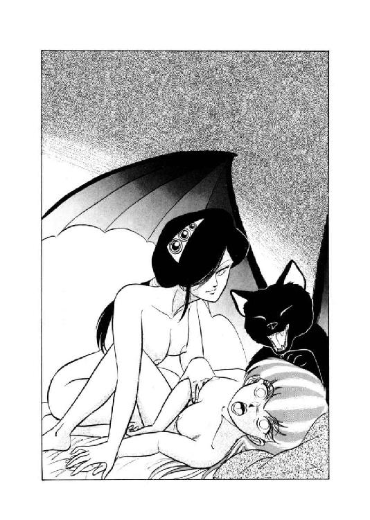
「きゃははははははははははっ！ わめいたところで、もう手遅れよっ！」
寝室の入口からけたたましい嘲笑があがり、少女の目の前に漆黒の蝙蝠猫が跳びあがる。
「きゃははははははは、馬鹿っ！ 馬鹿っ！ ばぁーかっ！ もうお前はおしまいよっ。あたしのこと、さんざん何のかんの言ってくれたけど、なーによ、お前の方がよっぽど間抜けな色ぼけ女じゃないっ！ よりにもよって、魔奴屍人を寝台にさそうなんてさっ！ きゃーはははっ、きゃーはははっ、きゃーは、きゃーは、きゃーはっ！ 精気取られて白蠟屍になってから、自分の馬鹿さ加減を嘆くがいいわっ！ きゃはきゃはきゃはきゃは、きゃーはははははははっ！ ばぁーか馬鹿馬鹿、大まぬけぇーっ！ みじめっ、みじめっ、みーじめーな最期ーっ！ 色ぼけ屍体のいっちょーあがりーっ！ きゃはははははは、思い知ったかあーっ！」
「くくくくうーっ！」
何か言い返してやりたいが、いかんせん、もはや舌が痺れて動かない。たちまちのうちに意識も薄れ、哀れ縞兎少女は、蝙蝠猫の嘲笑と悪口雑言を浴びながら白蠟屍と化してしまった。
「きゃはっはっはっはははーっ、あーっ、すっとしたあ」
寝台の上にごろんと転がった、変わり果てた姿の強敵をちょんちょんと前肢で突つき、蝙蝠猫は満足そうな笑い声をあげる。
「へっへっへっ、このあたしに悪口あびせて、無事で済むと思ったら大間違いよ。こーしてちゃーんと収支合わせは着けちゃうんだから。ふーっふっふっふっふっ、ざまを見っ！」
言うだけ言うと、チャフはすとんと寝台から降り、全裸のままぽーっと突っ立っている偽女戦士に声をかけた。
「そろそろ次の犠牲者、狩りに行くわよ。早いとこ服着て」
うなずいて、偽女戦士は床に落ちている白い長衣をまとう。彼女が身につけた瞬間、長衣は厚手の短衣と戦闘防具に外見を変える。まとう者の意識に応じてどうにでも外見が変わる、変化服の魔力だ。複製体に変化服着せときゃ、こりゃ見破る方法がないわね、とチャフはにやにやにやっと笑う。
「さあーて、次の犠牲者だけど......やっぱりさっきの魔道士かな。だけど、どーやって寝台に引っぱり込もうかしら」
この小娘は予想以上に好色だったから手間がはぶけたけど、毎回こうはいかないだろう。死霊術師の能力を使っている時は、触れただけで人間を白蠟屍にできるクラウドだが、複製体の能力を使っている時には、そうはいかない。普通の魔奴屍人と同じように、情交か、それに近い状態になってはじめて、人間の精力を吸いあげることができるようになる。
「まあ、考えるより、やってみた方が早そーね」
ちょっと首をひねったものの、蝙蝠猫はさっさと行動に出ることにした。とにかくこれだけの美貌と肉体があるんだから、いざとなれば男性はもちろん女性だって、どーとでも誘惑できるだろう。さーてこれから何人の好色者が、この甘いエサに引っ掛るかしら、とチャフは偽女戦士を見やって、くっくっくっくっと楽しそうに笑った。
５
「なるほど。そうすると南側から襲来した生屍人は、ほとんど、あなたが一人で撃退したわけですね。これは凄い」
「いや、ほとんどではなくて、完全に、だよ。そこのところ、明確にしておいてくれたまえ」
気取った笑みをうかべ、ギルバート・エゼンはふっと前髪を払った。やれやれ、この人もこれさえやらなきゃ結構いい先輩なんだけどな、とマーリン・ブレイキーは苦笑する。
「いずれにしろ、大変な活躍ですよ。評議会も、きっと高く評価することでしょう」
「うむ。まあ、高く評価してしすぎるという事はないと思うがね。とりあえず正当な評価を望みたいものだ。どうも評議会のお歴々は、年齢が若いというだけで、優秀な人材を軽んじる傾向があるからな」
えらそーにそう言うと、ギルバートは再び気障ったらしくふっと笑う。やっぱりあたしこーゆー性格あかんわ、とレディ・ポーランがぺろりと舌を出したが、魔道士は全然気がつかない。
「まあ、今日は皆さん、いろいろとお疲れさまでしたね。はっはっはっはっはっはっ」
スミス・チョーサーが例によって屈託なく笑う。これには女魔道士もうなずいた。
「そー言や、そうね。特にマーリン、あなたが魔力使ったの、ずいぶん久々じゃない？」
「確かにそうだね。まあ、当然と言えば当然だけど」
マーリンも、苦笑まじりにうなずく。けげんそうな表情になった先輩魔道士に、チョーサーがにこにこしながら説明する。
「つまりですね。マーリンは自分を含めたかなりの重量の物質を亜空間トンネルで移送できる、優秀な移送術師なんですよ。ところがこの魔力というのが、生死の境に追い込まれないと発揮できないという、いや、難儀な魔力でして。だから滅多な事では使えない、と。はっはっはっはっはっ、困ったものですね」
「あんたが言うと、まるで困ってるよーには聞こえないけどね」
レディ・ポーランがにやっと笑って口をはさむ。話題の中心になっている魔道士は、静かに自分の珈琲を賞味している。通常ならここで、チャーラン・ポーランが間抜けたたわ言の一つも飛ばすところだが、彼は魔獣料理をつまみ喰いした応報で、今だに泡噴いたまま寝込んでいるらしい。
そこでギルバートが、学友に代わって一言喋くろうと口を開いた時、玄関の呼び鈴が涼やかな音をたてた。すぐに主人が立って行き、女魔道士が小さく首をかしげる。
「誰かしら、こんな夜中に」
「おそらく、レイピアだろう」
そう言って、ギルバートがまたまたふっ、と笑う。
「仕事が片付き次第、私を迎えに来ると言っていたからな。ふっ、律儀なものだ」
そりゃー、あんたの方向音痴つーたら魔道都市でも有名だもんねー、とレディ・ポーランは内心肩をすくめた。レイピアだって、若旦那さまへの責任上、あんたを一人歩きさせるわけにゃいかんもんね。そのへん勘違いしてると、そのうちえれー目に合うわよ。
と、そこヘマーリンと、長身の女戦士が入ってきた。女戦士は魔道士の方を見て、にこっと笑う。
「御免なさいね、遅くなっちゃって。今夜はこちらに、泊めてもらった方がいいんじゃないかしら」
「うむ、そうだな。それではマーリン君、一晩厄介になるが、よろしいかね？」
ギルバートが格好をつけて訊ねると、マーリンは鷹揚に笑ってうなずいた。
「ええ、どうぞ。寝室はいくらも空いてますから。と、レイピアさんの部屋の向かいが、誰も使ってないはずですよ」
「それじゃあ失礼して、先に寝ませてもらいます。あ、ギルバートは私が案内しますから、お構いなく」
軽く一礼すると、女戦士は魔道士の先に立って、二階の客用個室へ上がってゆく。他の連中の視線の届かない場所まで上がると、彼女は立ち止まって、静かに振りかえった。
「別に寝室を使う必要はないわね、ギルバート。今夜は、同じ寝台で休みましょう」
「う、うむ......そうだな。そうしよう」
さすがに一瞬目を丸くしたが、すぐに魔道士の目尻が下がり、鼻の下がすうっと伸びる。文字通り、いちころだ。
一方、一階の食堂では、女魔道士が何となく納得がいかないよーな表情で、珈琲のカップをにらんでいた。
「どうしたんだい、ギネヴィア？ 珈琲の味がおかしかったのかな？」
「それは、今に始まったことじゃないわよ」
そう言って、彼女は軽く苦笑する。
「おかしいのは、珈琲じゃなくてレイピアなのよね。今夜のあの娘、何だか変だわ」
「変って、何がです？」
スミス・チョーサーがけげんそうに訊ねた。女魔道士は、小さく肩をすくめ、続いて首をかしげる。
「何がっつーかね......そう、ギルバートに対する態度が変なのよ。いつもの彼女だと、あんな距離のとり方、しないもんね。そうそう、そーなのよ。距離が違うのよ。うんうん、あの距離は、彼女が若旦那さまにとってるのに近いわ。相手を一人前の男性と認めてる態度よ。とーてーあのタコにふさわしー扱いとは思えないわね」
「ちょっと待ってくれよ。論理が良く見えないんだが、きちんと説明してくれないか」
マーリンが当惑顔で口を入れ、彼女は少し口調をおとして説明を始めた。
「つまりね。いつもの彼女がギルバートに接する態度っつーのは、世話役っつーか、教育係っつーか、ほとんど乳母さんみたいなもんなのよ。放っておくと何しでかすかわかんないから、監視と保護と躾を同時にやってるわけよね。母性愛的な感情はあるかも知んないけど、少なくとも彼女は彼を一人前とは見てないと思うんだ。だけど今夜は、何か、そこんとこが違うのよね。男のタコっぷりは全然変わっちゃいないのに、彼女の方が妙に距離とって、遠慮してるよーな感じだわ」
「うーん、なるほどな。言われてみればそんな気もするけど......」
ちょっと曖昧な表情で、魔道士が首をかしげる。
「でも、男女の関係って、案外突発的に変わるものだしね。それにほら、今日ギルバートはかなりの活躍を見せたようだから、それで彼女も彼を見直したんじゃないのかな」
「うーん、だけど奴さんが問題あるのは、能力じゃなくて、性格で、それはまるっきし直ってないのよねー。それで彼女が奴のこと、見直すわきゃないんだけどなー」
なおも女魔道士がぶつぶつ言っていると、また玄関の呼び鈴が鳴った。
「ミル・ユードさんかな？」
呟いて、マーリンが立って行く。と、すぐに玄関の方で魂消るような彼の声があがった。
「えーっ!? えーっ、えーっ、えーっ!? こ、こりゃあ不思議、不思議」
「どーしたの、どーしたの？」
即座にレディ・ポーランとチョーサーも玄関にすっ飛んで行き、そしてそこに居る人物を見たとたん、マーリン同様、仰天して立ちすくむ。
「えーっ!? うっそぉー、これ、本気ぃ？」
「いやー、もう笑うしかないですね。わはははははは、わは、わは、わはは」
「ど、どうしたのよ、みんな？」
魔道士たちの異様な反応に、入ってきた女戦士の方があきれかえった表情になった。
「まるで妖怪変化でも見たような顔しちゃって。私、どこか変かしら？」
「うーん、それは、こっちが訊きたいわ」
女魔道士が真剣そのものの表情になって、年来の友人をじいっと見詰める。
「あなた、本当にレイピア・ロナ？ 生霊とか、複製体とかじゃないでしょーね？」
「え？ いったい何の話？」
どうにも事態がのみこめず、レイピアは三人の魔道士たちを見回した。と、スミス・チョーサーが、さすがにいささかひきつった笑いをうかべ、説明する。
「いやー、実はですね。先刻、あなたにそっくりな女性があらわれまして、ギルバートさんと一緒に二階に上ってっちゃったんですねー。私たちは、その女性がてっきりレイピアさんだと思ってたところへ、また、あなたが戻ってこられたわけなんですよ。そーするとですね、あなたが正真正銘のレイピアさんだとすると、二階にいるのはいったい誰ざんしょね。あは、あは、あははは」
「ね、レイピア、まさかとは思うけど、あなた双生児の姉妹とかいないでしょーね？ 赤ん坊の頃に、生き別れになったとか？」
真剣に訊ねるレディ・ポーランに、女戦士は当惑顔で首を振った。
「いやしないわよ、そんなもん。だけど今の話、ほんとにほんとに本当なの？ みんなして私をかついでるんじゃないでしょうね？」
「僕は......君が僕らをかついでるのかと思ってた」
マーリンが、やや蒼ざめた顔で呟く。
「窓から出て、外を回ってくればいいんだものな。レイピアさんなら簡単だろ。......でも、そうじゃないみたいだね、どうやら」
「......そうすると、玄関で顔見合わせてても仕方ないわね。二階へ行ってみるわ」
低い声で言うと、レイピアは静かに階段を上りだした。魔道士たちもおっかなびっくり、半分怖いもの見たさで彼女に続く。
二階の廊下は暗く、客用寝室のひとつから灯が洩れている。女戦士は忍び足で近づくと、そのまま勢い良く扉を押し開けた。そしてその瞬間、レイピアの表情が驚愕のあまり凍りつく。
「ああーっ、あっ、あっ、あっ、あれ、あたしーっ!?」
女戦士の口から、半ば無意識に、錯乱しきった絶叫がとびだした。部屋の壁ぎわに置かれた寝台の上で、一組の裸の男女がもつれあっている。男の方はギルバート・エゼンだが、すでにその体は蠟のように白く変わり、あお向けになったままぴくりとも動かない。そして、男の腰の上にまたがった女が、長い髪をさっとさばいて彼女の方を振りかえる。その顔、身体が、まぎれもないレイピア・ロナだ。
自分と同じ琥珀色の瞳がじっとこちらを見すえるのを、女戦士は悪夢のような感覚で見返す。と、その顔が、余裕ありげににっこりと笑い、瞬間、レイピアの脳のどこかがぷつっと切れた。
「こ、こ、この、妖怪変化ーっ！」
激怒と恐怖と戦闘衝動がごっちゃになった状態で、女戦士は腰の細鞭を鋭くとばす。しかし相手は機敏に寝台から跳ね降りて鞭をかわすと、素早く変化服をまとった。
「や、やっぱり、二人いる......」
部屋をのぞいた魔道士が、呻くような声を出す。彼の背後から頭を出した女魔道士とチョーサーも、寸分違わない二人の女戦士がにらみ合うのを、息を吞んで見詰める。
「どっちが、これ、本物でしょーねえ？」
「多分、逆上してる方が本物だと思うわ」
女魔道士が、震え気味ながらも、確信ありげに答えた。
「考えてもみなさいな。こーゆー状況になって、冷静保っとる奴がおったら、それ、人間と違うわよ」
「ははあ、なるほど。それは確かに一理ありますねえ」
感心したように、魔道士がうなずく。
「いやー、大した推理だ。はっはっはっはっ」
「笑ってる場合じゃないわよ、これ」
女魔道士は、濃い眉を大きく寄せた。彼に悪気はあるまいが、何か、感心されてるっつーより、馬鹿にされてるよーな気がしないでもない。
だいたい、本物がどっちか判断できたところで、魔道士たちには助太刀のしよーがないもんなー、とギネヴィアはかすかに歯がみした。攻撃呪文の魔道士でもあればいざ知らず、晴天、降雨、非常用脱出と、戦闘用には何の役にも立ちゃしない。誰か助っ人でも呼んでこようか、と彼女が思ったとき、多分本物の方の女戦士が、再度鋭く細鞭を振るった。しかも今度は鞭が何条にも分かれて、網のように目標に襲いかかる。
だが、多分偽物の方の女戦士は、委細かまわず叩きつけられる鞭めがけて突っこんだ。細い革が勢いよく皮膚を裂くが、彼女はまるで動じず、左腕で無雑作に細鞭を払う。同時に右手が細剣の柄にかかったのを見て、女戦士も急いで細鞭を離し、細剣を抜く。手元に跳び込まれたら、細鞭は絶対に不利だから、これは仕方ない。
だが、偽レイピアは結局細剣を抜かず、左手で相手の細鞭を把んだまま、後方の窓へと跳んだ。ガチャーンッと派手な音とともに硝子が砕け、長身の女戦士はそのまま夜の闇の中へ跳び出す。
「逃がすかあっ！」
叫んで追いすがろうとしたレイピアだが、刃のように窓枠から突き出た硝子片に、さすがに一瞬ひるんだ。窓を開いて外を見ると、偽者が庭を走ってゆくのが、かろうじて目に入る。
「ちいっ！」
舌打ちしながらも、女戦士は窓から庭へと跳び出した。だが、着地した時には、すでに敵の姿は影も形もない。
「逃げられた......」
苦いものでも吐き出すような口調で、レイピア・ロナは呟いた。あの化物が私の姿で、どれほどの非道をやらかすか、ちょっと想像しただけで眩惑がしてくる。
と、そう考えた瞬間、彼女は二階の寝台で白蠟屍と化している、哀れな魔道士のことを思い出した。彼は、まず間違いなく、相手を私だと思い込んでいただろう、と女戦士はぶるっと身震いする。私に誘惑され、私とベッドをともにして、そしてあんなんなっちゃったわけか。
その過程を想像して、レイピアは深々と溜息をついた。
６
「その姿は妖麗なる美女、
その姿は恐ろしき毒蛇。
その力は死を生命と換え、
その力は生命を死に送る。
その血は炎の如く熱く、
その血は氷の如く凍てつく。
その名は白き巫女ヒュレーネ、
その名は白き死の魔獣」
案外よく通るいい声で朗唱すると、ルネ・ニグスはじろっとルナの方を見やった。
「こいつは『ヴェルフレイ神殿の讃歌』と称されてる、正体不明の古伝承の第一節だ。証拠は何もないが、俺の推定では、このヴェルフレイ神殿てのが、死霊術師の間に伝えられてる、喪われた西方湖畔の神殿てことになると思う。死を生命に換え、生命を死に送るってのは、いかにも死霊術師っぽい表現だからな。それに、あんた、ヴェルフレイって単語に記憶があるだろう」
「え？」
ぶっきらぼうな口調で訊ねられ、ルナは慌てて記憶をたどった。ヴェルフレイ......？
「あっ！ 黒蛇魔獣のっ！」
「そう、旧頭脳体の名だったな。ナルキソス・ド・ヴェルフレイ。カルバドク卿から聞いたよ」
そう言って、土竜男は傍に積みあげた古い書物のひとつを取り上げた。その脇には、なぜか豹娘がちょこなんと座っている。
「実は、死霊術師の伝承の他に、獣人谷にも似たような伝承があった。ほとんど忘れられてたんだがね。蛇神様と対になる、蛇女神様が存在する、という内容だよ。だから、蛇神様の紋章は二頭の蛇だ、と。こいつはちと眉唾とは思うが」
面白くもなさそうに言うと、土竜男はぱらぱらと書物を開く。
「とにかく、二頭の対になる蛇の神、あるいは蛇の魔獣という伝承形式は、けっこうあちこちに顔を出してる。女性と男性、白と黒、魔道士と戦士、広胸蛇と十字顎蛇、そして湖畔の神殿と山の中の峡谷。それぞれ象徴するものが、見事に対照的なんだな。なかなか興味深い伝承の仕方を、しているようだ」
「そうすると、つまり、要するに」
何だか土竜男の講義が学者先生特有のずれを見せてきたのに気付き、ルナは急いで口をはさんだ。
「あたしたちが、その喪われた神殿に出かけて行くと、白い毒蛇態の魔獣と出くわす可能性が高いってわけね。で、古代にはその魔獣にはヒュレーネっていう女性死霊術師が合体してて、その女性は黒蛇魔獣の頭脳体と、何か知らんけど浅からぬ因縁があったと、まあそーゆーことなんでしょ？」
「ここまでの説明は、その通り。だが、肝心なのはここから先だ」
ニグスは軽く鼻を鳴らし、別の書物を取り上げて開く。
「まず肝心なことの第一は、白蛇魔獣がどう考えても黒蛇魔獣より大物らしい、という事だ。黒蛇の地元の獣人谷を除けば、ほとんどすべての土地の伝承が、白蛇を黒蛇より上位に置くか、又は白蛇の伝説のみを伝えている。呼称にしても、白毒蛇と呼ぶ例はごく稀で、尊称のような感じで『死の魔獣』とたてまつられてる伝承がほとんどだ。はっきり言って、ほとんど神様扱いだな。黒蛇魔獣程度の怪物を相手にする気でいたら、えらい目にあうかも知れんぞ」
「そ、そんなあ......」
黒蛇魔獣と闘った時だって、さんざん苦戦したあげくに、みんなの力を借りてやっと勝てたってーのに、とルナは思わず額をおさえた。今度の死の魔獣とやらは、黒蛇を上回る大怪物ですってえ？
「そして、だ。実はもっと肝心なことが、もう一つある」
渋い表情のルナには目もくれず、ニグスはぺらぺらと書物の頁をめくった。
「普通、魔獣の伝承なんてもんは、そうそう広範囲に広まるもんじゃない。黒蛇魔獣の場合は獣人谷だけ。あんたの直立巨竜魔獣の場合も、リムズベルの大公家だけに、それもごく限定的な、秘められた伝承としてのみ、伝えられてきてる。まあ、魔獣って代物の性質からすりゃ、それも当然なんだがね。ところが、この、ヴェルフレイ神殿の死の魔獣だけは、そうじゃない。さすがに気易く語られはしないが、実はこいつは怖ろしく有名だ。古代文献に限らず、かなり新しい資料にでも、秘やかにではあるが、しょっちゅう顔を出している」
そう言って土竜男は、積みあげられた書物の山を、ぽんっと叩く。彼の細っこい目を見ながら、ルナは小さく首をかしげた。
「死の魔獣が有名だってことは、わかったわ。でも、どーしてそれが肝心なことなの？」
「そこが問題なんだ。喪われた神殿というのは文字通り喪われちまってるらしくて、ここ数百年、どこかの種族が死の魔獣を定期的に祭ってるという記録はない。黒蛇魔獣に対する獣人族みたいな種族は、いないんだな。だから本来、死の魔獣こそが真っ先に忘れられた存在となるのが、当然のはずなんだ。ところが実際には、魔獣の中で一番有名なんだから、奇妙じゃないか」
土竜男の口調に、だんだん熱がこもってくる。細い目がわずかではあるが見開かれ、焦茶色の瞳がルナを見すえた。
「いいか。ここから先は俺の推論だ。証拠はない。しかし、おそらく真実だ。賭けてもいい。ヒュレーネ・ド・ヴェルフレイは、十中八、九、死の魔獣の頭の上で、まだ生きてるぞ」
「えーっ!?」
ルナの紺色の瞳が、まん丸く見開かれる。
「だって、だってそのヒュレーネって女性、うちの御先祖のレギオン大公とか、黒蛇のナルキソスとか、そのへんと同年代の、古代の人物でしょう!? 魔獣と合体したって寿命は延びないんだから、八百年だか千年だか昔の人が、今だに生きてるわけないじゃないっ」
「大魔道師ザシャムは、その頃から生きてるって噂だがな。ま、とにかくこの場合考慮に入れなきゃならんのは、ヒュレーネって女が死霊術師の可能性が高いってことだ。ただでさえ、死霊術師は三百年近い寿命があるんだからな。おまけに彼らは精気の吸収放出ができるから、魔獣の活力を並の人間よりはるかに効率良く利用できるはずだ。ヒュレーネが事実上不死になってたとしたって、俺は驚かないね」
そこまで言ってから、土竜男ははっと気付いたように手を打った。
「そうか。グレゴールって奴も死霊術師だったっけな。もしかすると、そこらへんが狙いなのかも知れんぞ。うん、これは考えられる」
「まあ、それはとにかく、死の魔獣の方はどーなってるのよ？」
ひやっとするものを感じながらも、ルナは話を元に戻そうと訊ねてみる。だが、土竜男の返事はそっけなかった。
「どうもこうも、推論だからな。まあ、頭脳体が生きてりゃ、他の頭脳体抜き魔獣と違って、封印されててもそれなりに影響力があるかも知れん。それが今だに有名な理由じゃないかと、想像する程度だ。ま、そのへんの検証を今夜するつもりだったんだが、まず間違いはないだろう」
「ーん......なるほど......」
しかしそーなると、事態はますます難しくなってくじゃない、とルナは眉を寄せて考えこむ。もともと黒蛇魔獣より格上の死の魔獣に、千年近く生きてる女性死霊術師が頭脳体として合体してるとなると、こいつは魔獣戦士から見たって化物だ。少なくとも、正面から喧嘩したい相手じゃ、間違ってもない。
「でもまあ、頭脳体がついてるなら、話せばわかってもらえるかも知れないわよね」
「そりゃ、甘いな」
呟いたルナに、土竜男が身もフタもない言葉を投げつける。
「忘れたのか。あんたが先日討ち果たした黒蛇魔獣は、死の魔獣と一対なんだぞ。いくら頭脳体がいなくなってるからって、ヒュレーネがあんたを許すわけなかろう。おまけに、あんたの巨竜魔獣は、昔、黒蛇魔獣と宿敵だったって言うじゃないか。それなら当然、死の魔獣とも対立してたと考えるべきだろう。俺たちにとっては古代でも、彼女にとっては実体験してきた過去なんだからな。少なくとも、あんたが魔獣態とったら最後、死の魔獣は問答無用で襲いかかって来るだろう。賭けてもいいぞ」
「......わかったわよ」
げんなりした表情でルナが呟いた時、会議室の扉が勢い良く開いて、マリオン・ネッド評議員がとびこんできた。
「防衛司令官、すぐに治安局本部に来て下さいっ！ グレゴールの一味が都市に侵入したらしく、ギルバート・エゼンが白蠟屍にされたという通報が入りましたあっ！」
「な、何ですってえっ!?」
きりきりっと目尻を上げ、ルナは素早く立ちあがる。
「すぐ行きますっ。ニグスさん、お話どうも有難う。ロコッ、おいでっ！」
早口で言うと、ルナはネッド評議員とともに会議室をとび出した。鳥猫がその後を大慌てで追う。彼らを見送った土竜男は、ちょっと皮肉っぽい表情で肩をすくめた。
「死の魔獣より先に、妖死霊術師の心配をせにゃならんようだな、こりゃ」
７
「申し訳ありません、我が君」
「君が謝る理由はないぞ。しゃんとしているんだ、レイピア」
魔法鏡の向こうで頭を下げた乳兄妹に、ミル・ユードはやや厳しい口調で言った。
「それから、言うまでもないがブレイキー邸から動くな。気は急くだろうが、混乱の元だ」
「はい。わかっています」
口惜しげな表情で、女戦士がうなずく。その瞳を見ながら、青年はうなずき返した。
「大丈夫だ。心配しないで、そこで待っていてくれ。必ず帳尻は合わせてやるさ」
そうとも、とカルバドク卿ミル・ユードは内心、煮えくりかえりそうな気分で呟く。よりにもよって、レイピアに化けてギルバートを手にかけるとは。許せん、グレゴール・クライシス、この支払いはきっちりと済ませてもらおう。
その時、ネッド評議員と一緒に、ルナ公女が本部に入ってきた。彼を認めるが早いか、素早く馳け寄ってくる。
「ギルバートがやられたんですってっ？」
「ああ。犯人はレイピアに化けてるんだ」
青年は苦い表情で告げた。
「本人も面くらうほど、そっくりらしい。まあ、本物はブレイキー邸で待機しているから、それ以外の場所で彼女を見たら、問答無用で取り押さえるよう、手配してるけどね」
「レイピアさんに、化けてるの......」
それじゃ、ギルバートが油断するはずだわ、とルナは小さくうなずく。この時点では、魔道士がどーゆーやられ方をしたのか、ルナもミル・ユードも聞いていない。
「すでに治安官が総出動してる。城壁の歩哨にも伝令をとばした。大門には叔父上が急行してる。逃がしゃしないさ」
「あたしも、出るわっ！」
ルナが勢いこんで叫んだが、青年は小さく首を振った。
「いや、闇雲に出てっても仕方ないよ。敵が網にかかったら、そこへ急行してほしい」
「わかったわ」
ルナがうなずいた時、背後から野太い老人の声がかかる。
「カルバドク卿殿！」
「あ、ブレイキー評議員。犯人は見つかりましたか？」
「いや、まだのようじゃ」
評議長代行で治安局担当評議員のソロモン・ブレイキー老人は白い眉をぎゅっと寄せた。さすがに、表情に疲労の色が濃い。
「これは悪い知らせじゃな。巡回中の治安官が、ミルドレッド邸で白蠟屍になっている少女を発見したそうじゃ。おそらく、ギルバートと同じ犯人にやられたんじゃろ......」
「ちょ、ちょっとっ、ブレイキー評議員っ！ 今の話、本当ですかっ!?」
ルナが、血相変えて叫んだ。ミルドレッド邸で少女の犠牲者となると、これは、普通に考えればリルがやられたという事になる。
「もちろん本当じゃが、いったい......」
「確認したいんですけどっ。白蠟屍はミルドレッド邸から動かしてますかっ？」
「いや、動かしとらん......はずじゃ」
ブレイキー老人は、ちょっと目を白黒させて答えた。よし、行ってみよう、とルナがミル・ユードに声をかけかかったその瞬間、魔法鏡をにらんでいた女性治安官が、よく通る声で叫ぶ。
「レイピア・ロナを捕捉したようですっ！ 西区十一番街路の突きあたり、城壁に登っていく階段口ですっ！」
「よしっ、すぐに付近の治安官を急行させいっ！ 同時に、歩哨に城壁をかためさせるんじゃ。絶対に外に出すなっ！」
ブレイキー老人が、鋭い声で命令を下す。ルナもミル・ユードに目くばせして、治安局本部から走り出る。
「ロコッ、あんたはミルドレッド邸へ行って、やられたのがリルかどうか確認してっ。あたしは、偽レイピアの方に行くからっ！」
「はいっ！」
走りながらルナは烏猫に指示したが、これは後で考えると失策だった。白蠟屍は逃げやしないのだから、機動力があって夜目の効く烏猫は真っ先に敵探査に行かせるのが正解である。しかしとにかく、この時は、ルナは単身、現場へ走った。
彼女がちょうど『城』から出た頃、偽女戦士のクラウドは、城壁に上がる階段の途中で治安官相手に大立ち回りを演じていた。腰に着けているように見える細鞭と細剣は実際には存在しないが、手にしたもう一つの細鞭は、本物のレイピアからかっ払ってきた実物である。しかも彼女は魔奴屍人だから、恐怖も苦痛も感じない。今も、治安官が叩きつけてくる氷の短剣の呪文をものともせず、相手を細鞭で地上へ叩き墜としたところである。
だが、少し上空で空中静止しながら彼女の活躍を見ていた蝙蝠猫は、小さく舌打ちを洩らした。だいたい、こんな所で脱出のための戦闘をしてるって事自体が、彼女にとってはものすごーく不本意なのである。
「まったくもー、よりにもよって、あんなに早々と本物にでくわしちゃうなんて、魔道都市ってそんなに狭かったかしら、ねぇ」
ぶつぶつぶつと、彼女は空中でぼやきまくった。複製体の擬装はほぼ完璧ではあるが、結局、本物と面と向かってしまっては、もうどうにもならない。その場で秘密裡に本物を抹殺でもしてしまえれば良いが、今回の相手はちと強すぎた。そして一回公的に警戒されてしまったら最後、擬装は何の役にも立たなくなる。
「小娘に魔道士が一人かあ......ほっとんど成果あがんないうちに、本物にでっくわすなんて、あーあ、ついてないっ、ついてないっ、ついてないわあ、ほーんとっ......おやっ？」
チャフの真紅の瞳が鋭く光った。下級魔道士どもがわらわらと集結して来るのはまあいいとして、大門の方から凄い巨漢の戦士が、ずんずんずんずんと走ってくる。あの狂戦士にも勝るとも劣らない、まるで活力の凝固体のような猛戦士だ。
「こりゃ、ちょっと危いなっ」
呟いて、蝙蝠猫は城壁の上に音もなく急降下をかける。くるっと体を回転させて猫少女の姿になると、『魂喰らい』刺殺針を構えて、歩哨たちの背後から襲いかかった。
階段の女戦士に気を取られていた歩哨たちは、思いもかけない奇襲にばたばたと倒れる。一撃必殺とはいかなくても『魂喰らい』は『魂喰らい』、ぶすりと一刺しされた歩哨は、凄まじい苦痛に戦闘力を失う。のたうちまわる歩哨たちの間をぬって、女戦士は易々と城壁の上に馳けあがった。
「よーし、ここまでくれば......」
逃げきったも同じねっ、と猫少女が呟きかかったとたん、階段の下から割れ鐘のような声が轟く。
「くぉーらぁーっ！ 偽物、そこにおるかぁーっ！ この、バト・ロビスが成敗してくれるっ、そこ、動くなぁーっ！」
「じょーだんじゃないわよっ。クラウド、行きなっ！」
『魂喰らい』が健在なら相手してやってもいいんだけどね、とチャフはちょっと負け惜しみっぽく呟いた。刺殺針一本で斧剣に立ち向かうのは、正直なところ荷が重い。いっくら斬られても死なない身体だって、斬られりゃ痛いし、あたしゃ痛いのは嫌いだ。
女戦士がためらいもなく、城壁の外の闇に身を投げる。そしてほとんど同時に、ずどどどどどどどどどと轟音をあげて、無謀戦士が馳け上がってきた。
「おのれっ、動くなと言ったがわからんかあっ！ じたばたせずに、わが斧剣の錆になれいっ！」
大きく斧剣を振りかぶり、バト・ロビスは猫少女に凄まじい怒号を浴びせる。その迫力もさることながら、戦士の左手に握られている小剣が火炎をあげているのに気付き、チャフは慌てて宙に身を躍らせた。闇魂を持つ者は斬られても損傷にならないが、灼き溶かされると案外弱い。こりゃ逃げるが勝ちだわ、と彼女は空中で蝙蝠猫に変身しながら、小さく身をすくめた。
「こらーっ、動くなと言うとろうがーっ！」
「へへーんだっ、動くなって言われて、はいそーですかって待ってる敵が、いるとでも思ってんの、この薄ら馬鹿っ！」
とりあえず安全な空中で体勢をたてなおし、蝙蝠猫は得意の悪口雑言攻撃に移る。魔奴屍人を逃がす時間稼ぎという作戦もないではないが、どっちかっつーと、単にこのまま引き揚げたんじゃ腹立って仕方ないから、蛮人相手にうさを晴らそーという理由だ。
「あんたら蛮人は、動くなって言われりゃ斧剣で頭叩き割られるまで、動かないで待ってんのかも知れんけどねーっ。あたしら文明人にそんな術策は効かないよーっ。あっ、そーだ、あたしもその策、使ってみよーかなっ。やい、抜け作の馬鹿蛮人、そこ動くなっ。あーっ、動かないっ、やっぱり馬鹿なんだわーっ。きゃーははは、きゃーははは、きゃーははははははははっ。馬鹿よ、馬鹿よ、おー馬鹿よおっ！ やーいやーい、ばぁーか、ばぁーか、馬鹿馬鹿馬鹿馬鹿、馬鹿な蛮人ーっ！ きゃーはははっ、きゃーはははっ、きゃーは、きゃーは、きゃはきゃはきゃはきゃは、きゃーは......きゃあっ！」
「どおりゃあっ！」
チャフの罵詈雑言を黙って浴びていたバト・ロビスが、いきなり裂帛の気合を発する。同時に彼の左手の『白熱剣』から、黄金飛行竜の吐く火炎槍のような火炎の凝固物がとび出し、一直線に蝙蝠猫を襲う。チャフは空中でもんどりうって火炎を避けるが、かわしきれずに片翼に直撃をくらった。
「あちゃちゃちゃちゃちゃーっ！」
きりきり舞いしながら闇の中へ消えてゆく蝙蝠猫を見やって、バト・ロビスは腹立たしげに呟く。
「少しは懲りたか。性悪猫めが」
８
「今夜の損害は、正直なところ、かなり大きい」
夜明け近く、再び会議室に集まった一同を前に、ミル・ユードは沈痛な表情で告げた。夕刻の会議の時の顔ぶれからギルバート・エゼンとリム・リリスが消えており、代わってソロモン・ブレイキー、マリオン・ネッドの両評議員と、脚に包帯を巻いた巨漢の山羆男が列席している。
「現在のところで、二人が完全に白蠟屍にされ、四人が重傷、八人が軽傷。他に五人が、傷は軽いんだが異様に衰弱している」
「『魂喰らい』でやられたか」
バト・ロビスが訊ねるというより、確認するような口調で言った。青年は眉を寄せてうなずく。
「あそこまでの威力はないようですが、同種の魔的武器ですね。薬も受けつけないので、このままでは遠からず、全員白蠟屍になってしまうでしょう」
「それに関して、重大な問題が起きておる」
ブレイキー老人が、ミル・ユードから話をひきとる。老評議員も青年に劣らず、いや、それ以上に苦悩に満ちた表情だ。
「現在、評議会ではミルドレッド評議長以下、四体の白蠟屍を保管しておる。ここに新たに倍近い数の白蠟屍が加わるとなると、明日にも保存の薬が足りなくなってしまうのじゃ」
「保存の薬が!?」
事態を悟って、ルナは思わず甲高い声を出す。白蠟屍は特殊な保存の薬を使えば三十日ほど原型を保っていられるが、放置しておけば三日で崩壊してしまう。そして、いったん崩れた白蠟屍を蘇生させるのは、どんな高位の死霊術師でも不可能だ。
「それじゃあ、三日で喪われた神殿まで行って、宝玉を手に入れて戻ってこなくちゃならないわけ!?」
「無理だな」
ルネ・ニグスが、それこそ完全否定の言葉を、ぼそっと吐く。
「只でさえ無理なところへ持ってきて、黄金飛行竜を召喚するはずの魔道士が、あっさり白蠟屍になっちまってる。こいつは不可能というものだ」
「そ、それじゃ、白蠟屍にされた人たちは、助けようがないんですかっ!?」
ひきつった声で、烏猫が訊ねた。と、ブレイキー評議員が、再び重っ苦しい調子で答える。
「そこで、我々は決断をせねばならん。今夜、白蠟屍にされた者に対し保存の薬を使わないで置けば、四人の死霊術師の白蠟屍を三十日保存することができる。一人に使えば五人を二十五日、二人に使えば四人を二十日という計算じゃ」
「......保存の薬を新たに製造することは、できないのかな？」
土竜男が低い声で訊ねたが、老評議員は小さく首を振った。
「それができれば、わしも悩まん。この事件が起きた時に薬剤調合士に訊ねてみたが、保存の薬は製造に最低六十日かかるのじゃ」
「......間に合いませんね」
烏猫が、目いっぱい力の入らない声で呟く。それに対して、ブレイキー老人は真剣にうなずいた。
「辛い決断だが、下さねばならん。わしの意見は......」
「アイヤーッ、御老人、ちょいと待つあるよろし、ボンジュールッ！」
いきなり、バト・ロビスの背後から右手に包丁、左手に大皿、まとうは白衣に調理師帽、鉄鍋背負った謎の料理長が躍り出る。当然ながら、ブレイキー評議員は仰天して叫ぶ。
「な、なんじゃあ、おぬしは？」
「わーたしは料理長、わーたしは天才、おーまかせあるよ、メルシー・ボー・クー」
一同の中央に跳び出た料理長は、会議卓の上に仁王立ちになり大見得をきる。何だか良くわからんが、とにかく只者ではなさそうじゃとブレイキー老人は唸った。
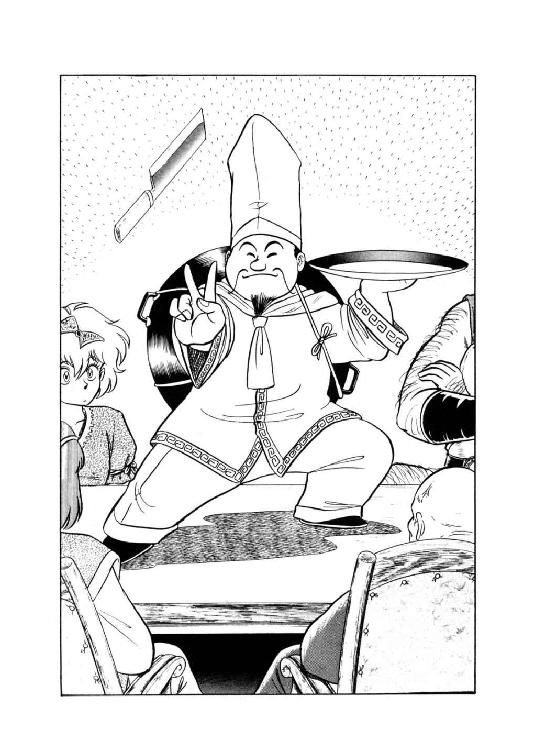
「で、その天才料理長が、何の用じゃ？」
「わたし、昨日究極のスタミナ料理、開発したあるね、ムッシュー。これ食べれば、『魂喰らい』で受けた傷、見事に治って体力回復あるよ、ボンジュール！」
えっへん、と料理長は自信満々の態度で胸を張る。目を丸くしたブレイキー評議員に代わって、マリオン・ネッドが彼に質問した。
「確かにあなたの料理の威力は、私もこの目で見たよ。しかし、あの料理、バト・ロビス氏以外の人間に食べられる代物なのかい？ 衰弱した病人が鼻血と泡噴いてぶっ倒れたんじゃ、それこそでたらめだからね」
「たーいちょぷ、たーいちょぷ。ちゃーんと体力のない人向きに『究極のスタミナ料理・普及版』を開発したあるよ。さすがに一口で完全回復とはいかないあるが、三日も食べ続ければ絶対たいちょぷ、間違いなしあるよ、ボンジュールッ！」
そう言うと料理長は包丁を天井に投げあげ、再びぶいっと二本指を出すと、はっしと包丁を受け止める。完全にあっけにとられたブレイキー評議員に、ネッド評議員がにやりと笑って囁く。
「大丈夫です、彼の料理を衰弱した連中に喰わせてみましょう。腕前の方は、私が保証しますよ」
「俺も保証する」
無謀戦士が、にこりともしないでうなずいた。その迫力に押されたように、老人もうなずきかえす。
「よーし、それなら善は急げじゃ。料理長、それにネッド、一緒に来てくれ」
料理長を間にはさむようにして、二人の評議員が会議室を出て行くのを、ルナは苦笑まじりの表情で見送った。
「大丈夫かしらね、あれ？」
「大丈夫だ」
バト・ロビスが有無を言わさぬ口調で断言する。
「料理長が乗り出した以上、衰弱した連中が白蠟屍になる事はあるまい。しかし、いくら奴といえど白蠟屍を蘇生させることは、できぬだろうな」
「そりゃあ、白蠟屍は料理を食べませんからね」
ミル・ユードが、案外まじめな表情でうなずいた。
「とにかく、ギルバートとリルを含め、六体の白蠟屍を蘇生させるには、喪われた神殿から宝玉を取ってこなくちゃならない。その状況は何も変わっちゃいないんだ。それも期限は、十日縮んで二十日。黄金飛行竜は、やっぱり使えない。どう楽観的に考えても、これは完全にぎりぎりの日程だな」
「そうなれば結論は決まっとる。こちらも善は急げだ。俺は予定通り、すぐに出発するぞ」
無謀戦士が、ほとんど椅子を蹴倒さんばかりの勢いで立ちあがる。
「ガーグ、俺と一緒に来い。料理長は病人食を料理するため、都市に残さねばならぬようだからな。食糧や何かを持つ奴が必要だ」
「あいっ、大将っ！」
いかにも嬉々として山羆男が立ちあがり、バト・ロビスはじろりと他の連中をにらみ回す。
「他にも、俺と行動を共にしようという者がおれば、拒みはせんぞ。すぐに、立ていっ！」
「はーいっ！」
次の瞬間、無謀戦士の表情が、渋ったいとも腹立たしいともつかない、何とも奇妙な代物になった。
「おのれら、まさか、全員ぐるになって俺をおちょくっとるんじゃあるまいな？」
「とんでもない。全員、叔父上と同じことを考えてただけです」
ミル・ユードが、相変わらず真剣な表情で答える。
「つまり、善は急げってことですよ。都市でもたもたしてたって、何の利点もありませんからね」
「別に打ち合わせたわけじゃないんだけど」
ルナが、くくっと小さく笑った。
「でも、綺麗に全員立ちあがっちゃったわね。こりゃ、満場一致だわ」
「勢いって奴だな、正直なところ」
土竜男が、いささか不本意気に呟く。
「本当は、多少考慮の余地があるはずなんだが、立っちまってから四の五の言っても始まらんか。どのみち行くか行かないかしかないわけだからな。まあ、これも良かろう」
「みゃうみゃう、みーみー。みみゃう、にゃあ、ふににゃあ」
豹娘が、なだめるような感じで、ニグスに声をかけた。土竜男は答えず、わずかに肩をすくめる。
「まあ良い。とにかくおぬしら、全員、俺と来るわけだなっ」
やや苦い表情ながらも、バト・ロビスは確認するように、再度一同をにらみ回した。
「よし、それならばとりあえず、経由路を説明するっ。いいか、おぬしら、ここを魔道都市と思えっ」
無謀戦士は親指で会議卓をぐいと圧す。たちまち卓の面が、ずぶりとへこんだ。
「ここから真西に向かうと、大山脈にぶちあたる。これをまともに越えるのは、はっきり言って無謀だ。通常の隊商は南方へ回り、ドルミエへ出て河を遡行する。だが、これでは時間がかかり過ぎだ。そこで俺は、獣人谷まで北上し、地下洞穴を通って西へ進むつもりでおる。これで、かなり距離を稼ぐと同時に、グレゴール一味の目も眩ませられるはずだ。そして地下洞穴を抜けた後は、荒地を西進し、湖を探す。これで片道日程、約七日を予定しておる。以上、何か質問はあるかあっ！」
卓に窪みや傷をつけて即席の地図にしながら、バト・ロビスはてきぱきと進行経由路を説明する。と、ルナがそっと手を上げた。
「はい、質問です」
「何だ、小娘っ」
じろっと見すえる巨漢の顔を見返し、ルナは真剣な口調で訊ねる。
「中年さん、そこまで作戦能力あるくせして、何で無謀戦士なんて呼ばれてんですか？ これ、本気で疑問なんだけどな」
「......下らん質問をするな。仇名の理由など本人が知るか」
眉を寄せ、しかしそれほど腹を立てた様子でもなく、バト・ロビスは唸るような声で答えた。
「他に質問がないなら、全員、即座に出発の用意を整えよっ！ 日の出とともに大門を出る予定だからな、ほとんど時間はないぞっ！」
「はいっ！」
戦士の大声に追われるように、一同は会議室からとび出す。と、会議中まったく口を効かなかった女戦士が外に出ると同時に、低く、しかし力を込めて呟いた。
「冗談じゃないわ。このまま済ませて、たまるもんですかっ」
〈続く〉
電子書籍版あとがき
どうも、秋津です。
前巻から、デビュー前夜の昔話の続きです。
ある時、絵描きさんが、弟さんが描いたものだといって、いくつかのイラストが描かれたスケッチブックを持ってきました。それは『呪いで竜と合体してしまったお姫様』のイラストで、そこには「忌まわしきこの身体......」というキャプションがあり、お姫様も哀しげな表情だったのですが。
「これ、お姫様がポジティブな性格の戦士で『お、この竜使えるじゃない！』と喜んじゃったらどうなるだろう？ 竜に引っ張られて凶暴化するとかじゃなしに、あくまでポジティブ、能天気に」
「それは、面白いですね」
考えようによっては腹を立てられても仕方ない私の与太に、自分の絵ではなかったせいか絵描きさんは目を輝かせて応じ、そこから「竜と合体してポジティブに大暴れするお姫様」の話が膨らんでいきました。
最初のイラストでは人間より多少大きい程度だった竜は、二足直立巨竜に変化し、強大な軍事力を持つ帝国が敵となることも決まりました。
また、二足直立巨竜はただのモンスターではなく伝説の魔獣で、世界そのものの生成に関わっていることも決まりました。
一方、私が顔を出していた漫画創作サークルの会合に、漫画家のあろひろしさんが来訪されました。私は以前からあろさんのファンだったので、名刺をいただき、有頂天に舞い上がりました。
もちろん、この時点では、まさかあろさんにイラストを描いてもらってデビューするなどとは、夢にも思っていなかったのです。
ヴァルガーワールド図鑑
動物編②
●木登振子豹（ロッキングパンサー）
森林の悪魔と呼ばれる肉食獣。体長約２ｍ半で、その内１ｍ以上が尻尾。
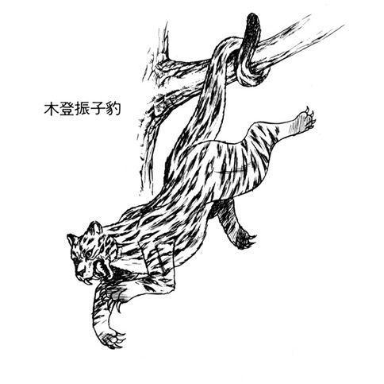
●七色長舌蜥蜴（レインボーカメレオン）
周囲の色にあわせて体色を変え、長い舌で虫をとらえて食べる。体長約30cm。
●立髪海獅子（タテガミオオトド）
体長４ｍを越える大型海獣。雄には立髪があり、５～10頭の雌を従えている。
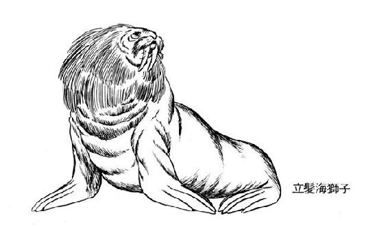
●鼻白鼬（ウェイゼル）
体長約20cmの小型肉食獣。追い詰められると、尻から毒液をとばす。
●黒面洗熊（ブラックフェイスラクーン）
見かけは剽軽だが、けっこう獰猛な雑食獣。体長も80cm近くある。
●有棘曲甲獣（トゲツキアルマジロ）
敵に出会うと球体になって身を護る、温和な性質の四足獣。体長約60cm。
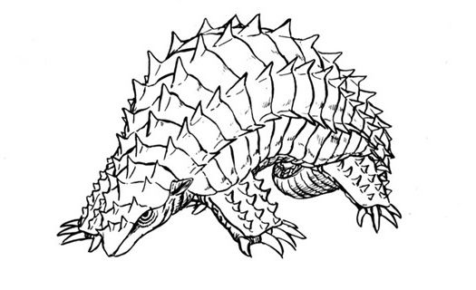
●海栗（ウニ）
各種あり、一部は食用。チャーラン・ポーランが召喚する種は、まずくて喰えない。
●白広胸毒蛇（ホワイトコブラ）
全長約４ｍ、四つの目を持つ大毒蛇。死神蛇と称される。
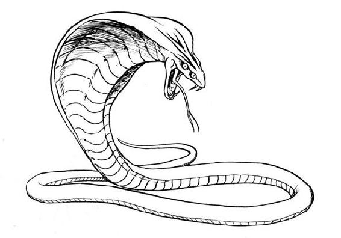
（これより怪物之部）
●飛行竜（ワイバーン）
魔道士によって召喚される怪物で、野生種は存在しない。全長約２ｍ、高速で飛行し、口から火炎弾を吐く。近縁種族に黄金飛行竜、巨大飛行竜、灼熱飛行竜等がある。
●人喰鬼（オーガー）
魔道と関係しない原生怪物で、実態がはっきりしない。通常、身長２～５ｍの人間型で単角単眼、怪力を持ち人や家畜を襲って喰らう。北方人が南方人を見た時の印象から生まれた架空の怪物、という説もある。
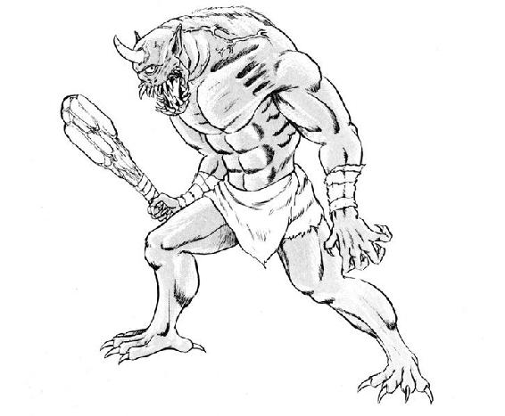
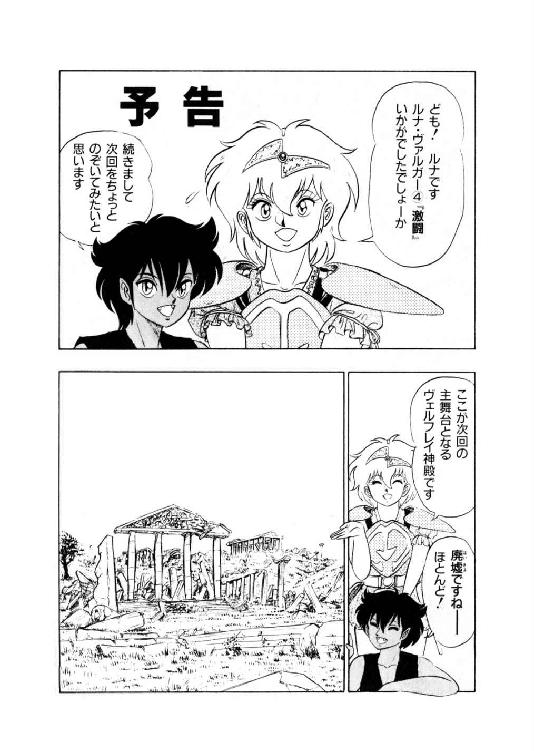
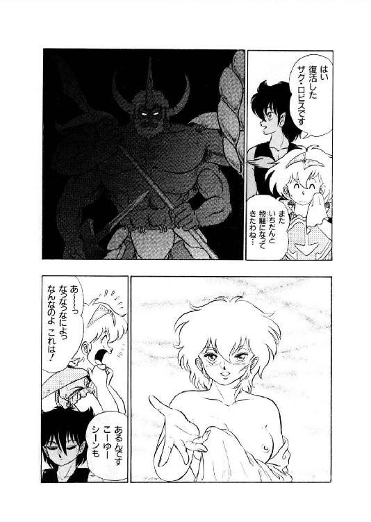
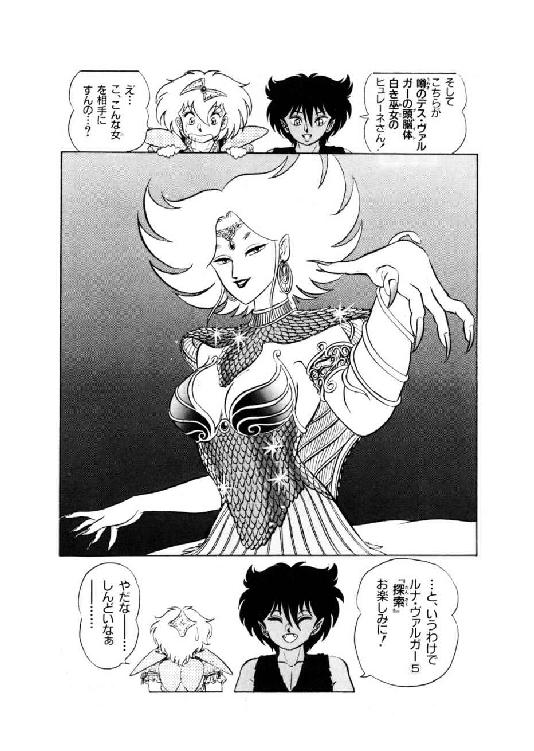
魔獣戦士ルナ・ヴァルガー
④激闘
発行日 ２０１４年５月２３日
著者 秋津 透
発行 株式会社クリーク・アンド・リバー社
〒102－0083
東京都千代田区麹町2－10－9
(c) Tôru Akitsu 2014